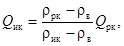
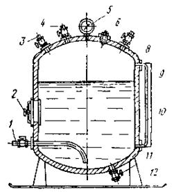
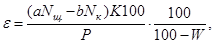
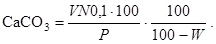
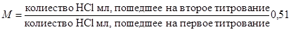
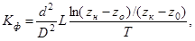
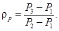
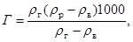
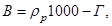
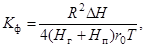

ОРДЕНА
ТРУДОВОГО КРАСНОГО ЗНАМЕНИ
НАУЧНО-ИССЛЕДОВАТЕЛЬСКИЙ ИНСТИТУТ
ОСНОВАНИЙ И ПОДЗЕМНЫХ СООРУЖЕНИЙ
ИМЕНИ Н.М. ГЕРСЕВАНОВА
ГОССТРОЯ СССР
ПОСОБИЕ
ПО ХИМИЧЕСКОМУ
ЗАКРЕПЛЕНИЮ ГРУНТОВ
ИНЪЕКЦИЕЙ В ПРОМЫШЛЕННОМ
И ГРАЖДАНСКОМ СТРОИТЕЛЬСТВЕ
(к СНиП 3.02.01-83)
Утверждено приказом НИИОСП им. Н.
М. Герсеванова
от 1 февраля 1985 г.
№ 15
Москва Стройиздат 1986
Содержит материалы, разъясняющие и конкретизирующие нормы и правила проектирования и производства работ по химическому закреплению грунтов в их естественном залегании инъекционными способами при устройстве оснований и фундаментов зданий и сооружений, а также других заглубленных конструкций из скрепленных грунтов в промышленном и гражданском строительстве.
Для инженерно-технических работников проектно-изыскательских, проектных и производственных организаций, занимающихся устройством оснований, фундаментов и подземных сооружений.
Разработано НИИОСП им. Н. М. Герсеванова при участии ряда научно-исследовательских и проектных организаций под общей редакцией д-ра техн. наук, проф. Б.А. Ржаницина и ст. инж. Л.И. Курденкова.
Пособие по химическому закреплению грунтов инъекцией в промышленном и гражданском строительстве составлено к разделам «Закрепление грунтов» действующих СНиП на проектирование и на производство работ по устройству оснований и фундаментов, без буросмесительного и термического закреплений грунтов, которые не относятся к инъекционным способам.
Разработано на основе результатов выполненных в СССР и за рубежом за последнее время научно-исследовательских работ в области закрепления грунтов в строительстве, а также на основе отечественного и зарубежного опыта применения прогрессивных технологий и новых средств механизации в этой области. При этом использованы также соответствующие, не утратившие своего значения материалы из подлежащего замене Руководства по производству и приемке работ при устройстве оснований и фундаментов. (М., Стройиздат, 1977 г.), в частности подраздел по цементации грунтов, выполненный ранее инж. А.П. Коржецким.
Работа выполнена ордена Трудового Красного Знамени Научно-исследовательским институтом оснований и подземных сооружений им. Н.М. Герсеванова Госстроя СССР, научный руководитель - д-р техн. наук, проф. Б.А. Ржаницын, ответственный исполнитель - ст. инж. Л.И. Курденков.
В подготовке материалов для пособия принимали участие: кандидаты техн. наук А.М. Голованов, В.Н. Баранов, А.Т. Черный, канд. геол.-минерал. наук Л. П. Шувалова; инженеры В.Ю. Зеленский и В.Д. Топорков (Ростовский Промстройниипроект), инж. В.В. Торгашов (Гидроспецпроект); канд. техн. наук Б.С. Смолин, инж. В.И. Шароватов (ГПИ «Фундаментпроект»); кандидаты техн. наук Е.С. Дзекцер, Ф.И. Тютюнова; канд. геол.-минерал. наук Н.П. Затеницкая (ПНИИИС Госстроя СССР).
Сотрудники лаборатории закрепления грунтов НИИОСП д-р техн. наук В.Е. Соколович, кандидаты техн. наук А.Н. Токин, М.Н. Ибрагимов, В.К. Чувелев и мл. науч. сотр. И.Б. Вебер во время работы давали консультации и сделали ценные замечания и предложения по тексту.
Общая редакция - д-р техн. наук Б.А. Ржаницын и ст. инж. Л.И. Курденков.
Употребляемый часто в тексте ради краткости термин «химзакрепление», имеющий в общем более широкое значение, применяется здесь исключительно как инъекционное химическое закрепление грунтов.
Пособие отменяет относящиеся к инъекционному химзакреплению грунтов (способами силикатизации, смолизации и цементации) подразделы и приложения разд. 5 Руководства по производству и приемке работ при устройстве оснований и фундаментов.
Замечания и предложения по пособию просьба направлять по адресу; 109389, Москва, Ж-389, 2-я Институтская, 6.
1.1. Как способ производства строительных работ химическое закрепление грунтов в широком смысле слова представляет собой искусственное целенаправленное преобразование строительных свойств естественных грунтов их химической обработкой различными реагентами, основанной на реакциях взаимодействия реагентов между собой или с участием химически активной части грунтов. Такое закрепление грунтов обеспечивает необратимость и долговечность приобретенных ими свойств.
1.2. В зависимости от технологии химической обработки грунтов химическое закрепление имеет два направления:
инъекционное химическое закрепление, когда реагенты в виде растворов или газов вводятся в грунты в условиях их естественного залегания и без нарушения их структуры, нагнетанием под давление;
буросмесительное закрепление грунтов, когда оно осуществляется с нарушением их естественной структуры механическим перемешиванием грунтов с цементами или другими реагентами и добавками, с применением специальных механизмов.
1.3. Инъекционное закрепление распространяется на грунты, обладающие определенной водопроницаемостью, включая песчаные, крупнообломочные, трещиноватые скальные и полускальные грунты, а также просадочные лессовые грунты.
Буросмесительное закрепление распространяется в принципе на все нескальные грунты, включая глинистые, независимо от их водопроницаемости.
Инъекционное химзакрепление давно и прочно вошло в практику строительства. Буросмесительное закрепление находится в стадии становления, но уже сейчас способно успешно решать некоторые важные практические задачи.
Оба направления вместе дополняют друг друга и обеспечивают возможность закрепления всех без исключения грунтов в естественном залегании, что в значительной мере способствует разрешению проблемы строительства на слабых грунтах в сложных инженерно-геологических условиях.
1.4. Настоящее Пособие, разработанное в соответствии с требованиями действующих СНиП, распространяется на проектирование и производство работ по химическому закреплению грунтов при решении различных практических задач в области промышленного и гражданского строительства инъекционными способами силикатизации, смолизации и цементации.
1.5. Не подлежат инъекционному химзакреплению грунты, пропитанные нефтепродуктами, и водонасыщенные грунты при скоростях грунтовых вод св. 5 м/сут. Возможность химического закрепления засоленных грунтов устанавливается специальными исследованиями.
1.6. Инъекционное химзакрепление необратимо повышает механическую прочность и устойчивость, уменьшает сжимаемость и водопроницаемость грунтов, указанных в п. 1.3, а также устраняет просадочность при замачивании лессов и лессовидных грунтов, что обеспечивает широкие возможности его применения для решения многих практических задач в строительстве.
1.7. В промышленном и гражданском строительстве инъекционное химзакрепление грунтов применяется для:
усиления и устройства оснований, фундаментов вновь строящихся зданий и сооружений;
усиления оснований и фундаментов существующих зданий и сооружений;
устройства защитных стен и других подземных конструкций из закрепленных грунтов в качестве мероприятий против подвижек грунтов при их подработке горными выработками;
устройства подпорных стенок и укрепления откосов при вскрытии строительных котлованов и других открытых выработок;
повышения несущей способности свай и других опор;
в качестве временного мероприятия при проходке в слабых грунтах различных подземных выработок.
На рис. 1 - 8 схематически показаны различные случаи практического применения инъекционного химзакрепления грунтов.
1.8. С химической точки зрения в основе инъекционного химзакрепления грунтов лежит явление конденсации неорганических и органических полимеров (крепителей) при их взаимодействии с коагулянтами (отвердителями) и заключающееся в отверждении полимеров в порах и трещинах грунтов, чем обеспечиваются положительные изменения физико-механических свойств закрепляемых грунтов, указанные в п. 1.6.
В качестве крепителей применяют водные растворы силиката натрия (неорганический полимер), а также растворы карбамидных и других синтетических смол (органические полимеры) В качестве отвердителей применяют различные неорганические и органические кислоты, соли и химические добавки к ним, некоторые газы.
Закрепление грунтов на основе растворов силиката натрия независимо от применяемых отвердителей называется силикатизацией, на основе карбамидных смол - смолизацией, на основе цементных растворов - цементацией.
Участвующие в процессе закрепления грунтов химические вещества в растворах или газы называются закрепляющими реагентами.
Смесь растворов крепителей и отвердителей рабочих концентраций при однорастворном химзакреплении грунтов называется гелеобразующей смесью.
Рис. 1. (Опоры из силикатированного просадочного лессового грунта под вновь строящееся сооружение (на примере административного здания в Ташкенте)
1 - фундамент; 2 - незакрепленный грунт; 3 - закрепленный силикатизацией лесс; 4 - непросадочный грунт
Рис. 2. Технологические схемы инъекционного химзакрепления грунтов под фундаментами существующих зданий
1 - фундамент; 2 - инъекторы; 3 - закрепленные массивы по заходкам
Рис. 3. Схема инъекционного химзакрепления грунтов под фундаментами существующих зданий по горизонтальной технологии (на примере смолизации грунтов в основании церкви Ризположения в Московском Кремле)
а - план, б - разрез, в - схема манжетно-тампонного инъектора; 1 - инъекторы; 2 - технологические колодцы; 3 - закрепленный массив; 4 - остатки сгнивших уплотнительных свай «коротышей»; 5 - инъекторная перфорированная труба; 6 - тампон; 7 - резиновые обоймы
Рис. 4. Подводка фундаментов из химически закрепленных грунтов в качестве предупредительного мероприятия против осадок существующих зданий от выноса грунта при проходке подземных выработок (на примере Большого театра в Москве)
Рис. 5. Закрепление грунтов в основании существующих зданий при его подработке горной выработкой
I - V - последовательный порядок инъекции закрепляющих реагентов (на примере здания на проспекте Маркса, бывшей Моховой улице в Москве)
1.9. С технологической точки зрения инъекционное химзакрепление заключается в нагнетании под давлением в поры грунтов в их естественном залегании отверждающихся и закрепляющих грунты различных химических реагентов в виде двух отдельно нагнетаемых растворов (двухрастворный способ), одного раствора (однорастворный однокомпонентный способ), одного раствора и газа (двухкомпонентные газовые способы), гелеобразующих смесей из двух компонентов (однорастворные двухкомпонентные способы).
Рис. 6. Устройство подпорных стенок из химически закрепленных грунтов (на примере работ по реконструкции Новолипецкого металлургического завода)
1 - инъекторы; 2 - водосборник в котловане; 3 - подпорные стенки из закрепленного грунта; 4 - опускные колодцы; 5 - существующая термическая печь
Рис. 7. Устройство защитных стенок из химически закрепленных грунтов против осадок существующих зданий при проходке подземных выработок
Рис. 8. Опережающее инъекционное химзакрепление грунтов при проходке подземных выработок
1 - тоннель; 2 - закрепленный грунт; 3 - инъекторы; 4 - водонасыщенный песок; 5 - моренный суглинок
Нагнетание закрепляющих реагентов в грунты осуществляется насосами, сжатым воздухом из специальных пневмобаков или из газовых баллонов, преимущественно по технологии с вертикальным и наклонным заглублением сверху вниз инъекторов или инъекционных скважин с открытой поверхности земли, с отмосток или из внутренних помещений (условно-вертикальная технология). На рис. 2, 4, 5, 6 и 7 показаны характерные примеры закрепления грунтов по этой технологии.
Если выполнение инъекционных работ при закреплении грунтов под существующими зданиями и сооружениями по технологии с вертикальным заглублением сверху вниз инъекторов и скважин в силу стесненных условий или по иным причинам невозможно, то инъекционные работы производятся по технологии с горизонтальным заглублением инъекторов и скважин из специально пройденных и оборудованных технологических выработок (траншей, штолен, колодцев); для предупреждения деформаций сооружений в этих условиях в результате возможных подвижек и разуплотнения грунтов под фундаментами стенки технологических выработок, обращенные к сооружению, предварительно подвергаются химзакреплению (условно-горизонтальная технология). На рис. 3 показан пример применения этой технологии из двух технологических колодцев.
1.10. При закреплении грунтов под существующими зданиями и сооружениями с ветхими фундаментами в качестве вспомогательного мероприятия против вероятных утечек закрепляющих реагентов через полости и трещины в кладке при нагнетании предусматривается предварительная цементация фундаментов на контакте подошвы с основанием (вспомогательная цементация).
1.11. Для закрепления грунтов в промышленном и гражданском строительстве применяются специально разработанные и опробованные опытом инъекционные химические способы согласно табл. 1. Каждый из способов имеет свою область применения, ограниченную величинами коэффициента фильтрации - для песчаных грунтов и значениями коэффициента фильтрации, емкости поглощения и степени влажности - для просадочных лессовых грунтов. Выбор способов закрепления для конкретных грунтов осуществляется, руководствуясь указанной таблицей, с учетом гранулометрического состава, номенклатуры, коэффициента фильтрации и других характеристик естественных грунтов, а также проектных требований к прочностным и деформационным свойствам закрепленных грунтов.
1.12. С целью повышения эффективности (прочности и радиуса) закрепления грунтов однорастворными способами силикатизации и смолизации, за исключением силикатизации просадочных лессовых грунтов, во многих случаях бывает целесообразно производить предварительную химическую обработку грунтов отвердителями. Вопрос о предварительной химической обработке решается в результате проведения специальных лабораторных исследований и опытных работ в натурных условиях по химзакреплению грунтов.
Таблица 1
|
Реакция среды закрепляющих реагентов |
Область применения |
Экстремальные и средние значения прочности при одноосном сжатии, МПа |
||
|
Номенклатура и некоторые характеристики грунтов |
Коэффициент фильтрации грунтов, м/сут |
|||
|
Двухрастворная силикатизация на основе растворов силиката натрия и хлористого кальция |
Щелочная |
Пески гравелистые, крупные и средней крупности |
5 - 80 |
(2 - 8)/5 |
|
Однорастворная двухкомпонентная силикатизация на основе растворов силиката натрия и кремнефтористо-водородной кислоты |
» |
Пески средней крупности, мелкие и пылеватые, в том числе карбонатные |
0,5 - 20 |
(1 - 5)/3 |
|
Однорастворная однокомпонентная силикатизация просадочных грунтов на основе одного раствора силиката натрия |
» |
Просадочные лессовые грунты, обладающие емкостью поглощения не менее 10 мг-экв/100 г грунта и степенью влажности не более 0,7* |
Не менее 0,2* |
(0,5 - 3,5)/2 |
|
Газовая силикатизация на основе раствора силиката натрия и углекислого газа |
» |
То же, но степень влажности не более 0,75* |
Не менее 0,2 |
(0,5 - 3,5)/2 |
|
Пески средней крупности, мелкие и пылеватые, в том числе карбонатные |
0,5 - 20 |
(1 - 5)/3 |
||
|
Однорастворная двухкомпонентная силикатизация на основе раствора силиката натрия и формамида с добавкой кремнефтористо-водородной кислоты |
» |
Пески средней крупности, мелкие и пылеватые, в том числе карбонатные |
0,5 - 25 |
(1 - 3)/2 |
|
Однорастворная двухкомпонентная силикатизация на основе раствора силиката натрия и ортофосфорной кислоты |
Кислая |
Пески средней крупности, мелкие и пылеватые |
0,5 - 10 |
(0,2 - 0,5)/0,35 |
|
Однорастворная двухкомпонентная силикатизация на основе раствора силиката натрия и алюмината натрия |
Щелочная |
Пески средней крупности, мелкие и пылеватые, в том числе карбонатные |
0,5 - 10 |
(0,2 - 0,3)/0,25 |
|
Однорастворная двухкомпонентная смолизация на основе растворов карбамидных смол марок М, М-2, М-3, МФ-17 и соляной кислоты |
Кислая |
Пески всех видов - от гравелистых до пылеватых, кроме карбонатных |
0,5 - 50 |
(2 - 8)/5 |
|
Однорастворная двухкомпонентная смолизация на основе растворов карбамидных смол марок М, М-2, М-3 и МФ-17 и щавелевой кислоты |
» |
Пески всех видов - от гравелистых до пылеватых, в том числе некоторые карбонатные, согласно результатам специальных исследований |
0,5 - 50 |
(2 - 8)/5 |
|
Цементация |
Щелочная |
Пустоты, полости в грунтах всех видов. Крупнообломочные и некоторые гравелистые песчаные, трещиноватые скальные и полускальные грунты |
Для скальных и полускальных удельное водопоглощение > 0,01 л/мин×м2, для прочих > 50 |
|
* При других значениях характеристик возможность применения силикатизации устанавливается опытным путем.
Примечание. До черты - экстремальные значения прочности закрепленных грунтов, за чертой - средние.
1.13. Производство работ по химзакреплению грунтов допускается только по утвержденному проекту, увязанному с проектом сооружения. Внесение в проект изменений, вызванных несоответствием заложенных в проекте данных инженерных изысканий с действительными, должно быть согласовано с проектной организацией.
1.14. Исходя из опыта практического применения инъекционного химзакрепления грунтов в строительстве, проектирование этого вида работ, в зависимости от объема закрепления и сложности устройств из закрепленных грунтов, может осуществляться двояко: в два этапа - при больших объемах закрепления и сложных устройствах, и одноэтапно - при небольших и менее сложных устройствах.
1.15. На первом этапе производится проектная проработка химзакрепления грунтов наряду с другими возможными решениями (общестроительное проектирование), в результате которой делается выбор варианта. Проектной проработке на этом этапе предшествуют типовые инженерные изыскания согласно действующим СНиП и пособий по проектированию оснований, а также другим источникам, содержащим табличные данные прочностных и деформационных характеристик закрепленных грунтов.
Проектом сооружения на первом этапе определяется тип (вид) основания, фундамента или какой-либо иной заглубленной конструкции из закрепленных грунтов и устанавливаются формы и расчетом - геометрические параметры закрепляемого массива, требования к прочностным и деформационным свойствам закрепленных грунтов и допускаемые напряжения в закрепленном массиве от действующих нагрузок. Так как при проектировании на первом этапе в расчетах используются табличные весьма приближенные прочностные и деформационные характеристики закрепленных грунтов, проект сооружения на этом этапе носит предварительный (эскизный) характер и подлежит уточнению по результатам специальных исследований на втором этапе.
На втором этапе осуществляется разработка проекта закрепления грунтов по созданию заданных общестроительным проектом сооружения закрепленных массивов (специальное технологическое проектирование). Этому этапу проектирования предшествуют соответствующие специальные изыскания и исследования. Исследования и проектирование на втором этапе выполняются, руководствуясь соответственно третьим и четвертым разделами настоящего пособия.
1.16. При одноэтапном проектировании общестроительное и специальное технологическое проектирование объединяются в едином рабочем проекте, который разрабатывается организацией, имеющей подразделение по специальным видам работ. Разработка проекта закрепления грунтов в этом случае осуществляется с использованием типовых и специальных изысканий и исследований.
1.17. При проектировании и производстве работ по химзакреплению грунтов должны быть предусмотрены мероприятия по контролю качества закрепления согласно разд. 6 настоящего пособия. Эти мероприятия направлены на контроль качества исходных химических и других материалов и рабочих закрепляющих реагентов, проверку заложенных в проект расчетных параметров и технических условий на производство работ, а также на контроль исполнения проектных расчетных параметров закрепления.
1.18. Учитывая, что химическое закрепление грунтов, связанное с применением химических веществ, в той или иной мере токсично, при производстве этих работ кроме соблюдения требований противопожарной охраны и техники безопасности, предусмотренных действующим СНиП по технике безопасности в строительстве, должны также выполняться специальные требования по технике безопасности и охране окружающей среды, изложенные в разд. 7 настоящего пособия.
1.19. До производства работ по химзакреплению грунтов должно быть уточнено и учитываться в работах расположение подземных коммуникаций (водопровода, канализации, кабельной сети, телефона, газа и др.), а также расположение и состояние сооружений, находящихся вблизи места закрепления.
2.1. При двухрастворной силикатизации в грунты в последовательном порядке нагнетают два водных раствора, раствор силиката натрия (крепитель) и раствор хлористого кальция (отвердитель).
2.2. Плотность раствора силиката натрия (г/см3) назначают в зависимости от коэффициента фильтрации грунтов, м/сут:
При коэффициенте 5 - 10 плотность раствора 1,35 - 1,38
» » 10 - 20 » » 1,38 - 1,41
» » 20 - 80 » » 1,41 - 1,41
Раствор хлористого кальция должен иметь плотность 1,26 - 1,28 г/см3 и величину рН не менее 5,5. Для безводного хлористого кальция указанным величинам плотности соответствуют 28 - 30 % значения концентрации.
2.3. При однорастворной двухкомпонентной силикатизации и смолизации в качестве основных исходных материалов, крепителем применяются водные растворы силиката натрия и карбамидных смол, а в качестве отвердителей или добавок - хлористый кальций, соляная, щавелевая и кремнефтористо-водородная кислоты, углекислый газ, алюминат натрия, азотнокислый аммоний, сульфитно-спиртовая барда, ортофосфорная кислота, формамид, этилацетат, контакт Петрова и другие реагенты.
2.4. Растворы-крепители, используемые при силикатизации и смолизации грунтов, должны удовлетворять следующим требованиям:
силикат натрия должен иметь модуль в пределах 2,7 - 3 и плотность 1,2 - 1,45 г/см3 при закреплении песчаных грунтов и 1,13 - 1,2 г/см3 - при закреплении просадочных грунтов;
карбамидная смола должна иметь плотность 1,08 - 1,18 г/см3.
2.5. Для приготовления цементных растворов должен использоваться портландцемент марки не ниже 300. Допускается использование сульфатостойкого цемента и шлакопортландцемента, а также тампонажного портландцемента. Использование смесей различных видов цемента допускается только после проведения лабораторных испытаний с определением сроков схватывания и твердения.
Физико-механические свойства цемента, предназначенного для приготовления цементационных растворов, должны быть проверены для каждой партии цемента, поступающей на строительство, независимо от паспортных данных завода-поставщика.
При наличии агрессивных грунтовых вод следует применять стойкие по отношению к ним цементы.
Для ускорения схватывания цементационных растворов применяются жидкое стекло и хлористый кальций. Для увеличения стабильности и цементационных растворов применяется бентонит.
2.6. При однорастворной двухкомпонентной силикатизации песчаных грунтов в настоящее время применяют способы согласно табл. 2, в которой приведены рецептуры для получения закрепляющих грунты гелеобразующих смесей.
2.7. Закрепление просадочных лессовых грунтов осуществляют однорастворным однокомпонентным способом силикатизации на основе одного раствора силиката натрия, имеющего характеристики согласно п. 2.4.
2.8. Для газовой силикатизации в настоящее время разработаны и применяются два отличающиеся рецептурой способа закрепления песчаных и просадочных лессовых грунтов согласно табл. 3.
2.9. Химические материалы, применяемые для закрепления грунтов способами силикатизации, должны удовлетворять требованиям и техническим условиям действующих стандартов на силикат натрия (жидкое стекло), хлористый кальций, ортофосфорную, кремнефтористо-водородную кислоты, алюминат натрия, формамид, этилацетат, контакт Петрова и другие реагенты.
ГОСТы и ТУ на некоторые технические материалы, применяемые при химическом закреплении грунтов способами силикатизации приведены в табл. 4.
Таблица 2
|
Компоненты гелеобразующей смеси |
Объемное отношение отвердителя к крепителю |
Время гелеобразования, мин |
Порядок приготовления смеси |
||||
|
Крепитель |
Отвердитель |
||||||
|
наименование |
плотность, г/см3 |
наименование |
плотность, г/см3 |
||||
|
I |
Силикат натрия |
1,25 - 1,3 |
Кремнефтористо-водородная кислота |
1,1 - 1,08 |
0,12 - 0,2 |
При 20 °С - 10 - 20, при 5 °С - 60 |
Отвердитель добавляют к крепителю |
|
II |
То же |
1,15 |
Алюминат натрия |
1,05 |
0,225 |
60 - 180 |
То же |
|
III |
» |
1,19 |
Ортофосфорная кислота |
1,025 |
3,4 - 6 |
60 - 600 |
Крепитель добавляют к отвердителю |
|
IV |
Силикат натрия, модуль 3,3 - 3,4* |
1,28 - 1,30 |
50 %-ный раствор формамида |
1,073 |
0,25 - 0,5 |
15 - 180 |
Отвердитель добавляют к крепителю |
|
V |
Силикат натрия, модуль 3,3 - 3,4** |
1,28 - 1,30 |
Этилацетат Контакт Петрова** |
- |
0,02 - 0,04 0,04 - 0,05 |
30 - 90 |
Крепитель смешивают с контактом Петрова и в полученную смесь добавляют этилацетат |
|
* Раствор силиката повышенного модуля получают обработкой силиката обычного модуля 2,5 - 3 кремнефтористоводородной кислотой плотностью 1,1 - 1,08 в количестве 5 - 6 % по объему. ** Контакт Петрова предварительно разбавляют водой в соотношении 1:3. |
|||||||
Таблица 3
|
Компоненты газовой силикатизации |
Порядок закачки компонентов в грунты |
|||||
|
Крепитель |
Отвердитель |
|||||
|
наименование |
плотность, г/см3 |
норма закачки |
наименование |
норма закачки на 1 м3 грунта, кг |
||
|
VI (для песков) |
Силикат натрия |
1,19 - 1,30 |
0,8 объема пор |
Углекислый газ в баллонах |
4 - 6,5 |
Углекислый газ 2 - 2,5 кг, силикат натрия, углекислый газ 2 - 4 кг |
|
VII (для просадочных лессовых грунтов) |
То же |
1,10 - 1,17 |
0,8 объема пор |
То же |
5 - 7,5 |
Углекислый газ 2 - 3 кг, силикат натрия, углекислый газ 3 - 4,5 кг |
Таблица 4
|
Реагенты |
ГОСТ, ТУ |
Физическое состояние |
|
|
1 |
Силикат натрия растворимый |
ГОСТ 13079-81 |
Глыба |
|
2 |
Стекло натриевое жидкое |
Жидкость |
|
|
3 |
Хлористый кальций |
Жидкость, порошок, комки |
|
|
4 |
Ортофосфорная кислота |
ГОСТ 10678-76 с изм. |
Жидкость |
|
5 |
Кремнефтористо-водородная кислота |
ГОСТ 6552-80 |
» |
|
6 |
Углекислый газ |
ТУ 8050-76 |
Сжиженный газ |
2.10. Применяемый при силикатизации грунтов силикат натрии Na2O×nSiO2 доставляется к месту работы либо в виде силикат-глыбы, либо в виде раствора плотностью 1,4 - 1,5 г/см3.
В зависимости от исходных материалов силикат натрия выпускается содовый и содово-сульфатный.
Раствор силиката натрия должен отвечать требованиям ГОСТ 13078-81.
Силикатный модуль является главной характеристикой силиката натрия, определяющей его состав. Под модулем подразумевается отношение числа грамм-молекул кремнезема SiO2 к числу грамм-молекул окиси натрия Na2O. В процессе производства работ модуль употребляемых растворов силиката натрия (каждая партия) подлежит контрольным определениям, руководствуясь прил. 6.
Таблица 5
|
Нормы для видов силиката натрия |
||
|
содового |
содово-сульфатного |
|
|
Внешний вид |
Густая жидкость желтого или серого цвета без механических включений, видимых невооруженным глазом |
Густая жидкость от желтого до коричневого цвета без механических включений, видимых невооруженным глазом |
|
Содержание кремнезема, % Содержание окиси железа и окиси алюминия, %, не более |
31 - 33 0,25 |
28,5 - 29,5 0,4 |
|
Содержание окиси кальция, %, не более |
0,2 |
0,25 |
|
Содержание серного ангидрида в пересчете на серу, %, не более |
0,06 |
0,4 |
|
Содержание окиси натрия, % |
10 - 12 |
10 - 11 |
|
Силикатный модуль |
2,65 - 3,4 |
2,65 - 3,4 |
|
Плотность, г/см3 |
1,36 - 1,5 |
1,43 - 1,5 |
Таблица 6
Химическая технология однорастворных двухкомпонентных способов смолизации
|
Компоненты гелеобразующей смеси |
Объемное отношение отвердителя к крепителю |
Время гелеобразования, мин |
Порядок приготовления смеси |
||||
|
Крепитель |
Отвердитель |
||||||
|
наименование |
плотность при 18 °С, г/см3 |
наименование |
плотность, г/см3 |
||||
|
VIII |
Карбамидная смола марки М |
1,08 |
5 %-ная соляная кислота |
1,023 |
0,05 - 0,06 |
180 - 40 |
В смолу при тщательном перемешивании добавляют кислоту |
|
IX |
То же, марки М-2 |
1,09 - 1,1 |
5 %-ная щавелевая кислота |
1,023 |
0,12 - 0,14 |
180 - 60 |
То же |
|
X |
То же |
1,09 - 1,1 |
5 %-ная соляная кислота |
1,023 |
0,07 - 0,08 |
150 - 50 |
» |
|
XI |
То же, МФ-17 |
1,08 - 1,09 |
То же |
1,09 - 1,1 |
0,08 - 0,10 |
150 - 40 |
» |
|
XII |
» М-3 |
1,12 - 1,13 |
» |
1,023 |
0,03 - 0,05 |
150 - 25 |
» |
|
XIII |
» М-3 |
1,178 - 1,18 |
Азотнокислый аммоний |
1,1 - 1,2 |
1 - 2 |
150 - 30 |
Вначале смешивают крепитель с азотнокислым аммонием, а затем добавляют кислоту |
|
5 %-ная соляная кислота |
1,023 |
0,25 - 0,35 |
|||||
|
XIV |
» М-3 |
1,178 - 1,18 |
Сульфитно-спиртовая барда |
1,15 - 1,16 |
1 - 2 |
180 - 30 |
К сульфитно-спиртовой барде приливают кислоту, а затем кислый раствор сульфитной барды смешивают с крепителем |
|
5 %-ная соляная кислота |
1,023 |
0,25 - 0,35 |
|||||
|
XV |
» М-3 |
1,178 - 1,18 |
Сульфитно-спиртовая барда |
1,2 - 1,22 |
0,55 - 2,15 |
150 - 60 |
Сульфитно-спиртовую барду смешивают с азотно-кислым аммонием, в полученную смесь добавляют кислоту |
|
Азотно-кислый аммоний |
1,25 - 1,26 |
0,25 - 0,50 |
|||||
|
XVI |
» М-2 |
1,15 - 1,16 |
Сульфитно-спиртовая барда |
1,2 - 1,22 |
0,58 - 2 |
120 - 30 |
Приготовленную по рецептуре XIV смесь при перемешивании добавляют в крепитель |
|
Азотно-кислый аммоний |
1,25 - 1,26 |
0,24 - 0,67 |
|||||
|
5 %-ная соляная кислота |
1,023 |
0,18 - 0,33 |
|||||
По физико-химическим показателям раствор силиката натрия должен отвечать нормам, указанным в табл. 5.
2.11. Применяемый при однорастворной двухкомпонентной силикатизации в качестве отвердителя (коагулянта) силиката натрия, алюминат натрия должен удовлетворять следующим требованиям:
каустический модуль................................. 1,5 - 1,7 (отношение Na2O/Al2O3);
крупность дробления................................. 5 - 6 мм;
наличие нерастворимых взвесей.............. 1 - 2 %
Коагулянт - кремнефтористо-водородная кислота - является побочным продуктом производства суперфосфата и фосфорной кислоты и поставляется в виде раствора плотностью 1,1 - 1,2 г/см3.
2.12. При однорастворной двухкомпонентной смолизации песчаных грунтов в настоящее время разработаны и могут применяться девять отличающихся рецептурой способов согласно табл. 6, в которой приведены данные для получения соответствующих гелеобразующих смесей.
2.13. Преимуществом смолизации перед однорастворной силикатизацией является возможность значительно более прочного закрепления грунтов. Так, временное сопротивление при сжатии закрепленных смолизацией некоторых видов песчаных грунтов может достигать 7 - 10 МПа. Недостатком смолизации является выделение карбамидными смолами токсичного формальдегида. При закреплении грунтов под существующими сооружениями, когда работы ведутся в закрытых помещениях, это обстоятельство требует применения усиленной приточно-отточной вентиляции.
2.14. Для глубинного закрепления грунтов смолизацией, не связанного с последующим вскрытием закрепленных массивов (например, при усилении оснований, устройстве фундаментов или других подземных конструкций), следует применять способы смолизации на основе карбамидных смол марок М, М-2, МФ-17 и УКС.
При смолизации грунтов с целью проходки подземных выработок допускается применять способы на основе смолы марки М-3, содержащей наименьшее количество свободного формальдегида (0,3 - 0,5 %).
2.15. В связи с изменением во времени физико-химических свойств смолы для каждой партии смолы в процессе инъекционных работ требуется уточнять соотношения компонентов в гелеобразующей смеси, обеспечивающие заданный период времени гелеобразования, руководствуясь прил. 8.
2.16. Разведение смолы водой до рабочих концентраций производится в следующих приближенных соотношениях:
крепитель М-2 разбавляется водой в соотношении 1:0,8 до плотности раствора 1,09 г/см3, являющейся нижним пределом разбавления;
крепитель М-3 разбавляется водой в соотношении 1:0,5 до плотности раствора 1,12 г/см3;
крепитель МФ-17 разбавляется водой в соотношении 1:2 до плотности раствора 1,08 г/см3.
При разбавлении смолы растворами азотно-кислого аммония или сульфитно-спиртовой барды раствор получается более стабильным.
2.17. Применяемые при смолизации в качестве крепителей растворы карбамидных смол по своим физическим и химическим характеристикам должны удовлетворять нормам табл. 7, а щавелевая (кристаллогидрат) и техническая соляная (жидкость) кислоты должны удовлетворять нормам соответственно ТУ 221180-76 и ТУ 857-78.
2.18. При приготовлении и применении гелеобразующих смесей необходимо соблюдать следующие правила:
измерение заданных объемов крепителя и отвердителя рабочих концентраций перед их смешиванием должно выполняться с необходимой точностью, которая устанавливается на основе экспериментальной зависимости времени гелеобразования от объемного соотношения компонентов (прил. 8) и указывается в проекте. При этом точность измерения находится по условию, что погрешность в получении заданного периода гелеобразования не должна превосходить 10 %;
при смешивании компонентов смеси отвердитель следует постепенно добавлять к крепителю (а не наоборот) при непрерывном и тщательном перемешивании;
заданное время гелеобразования в процессе инъекции должно контролироваться путем отбора проб смеси и фиксации момента ее загустевания.
2.19. При однорастворной двухкомпонентной силикатизации и смолизации грунтов в последнее время получила широкое применение предварительная обработка (активизация) грунтов отвердителями, повышающая радиус закрепления и прочность закрепленных грунтов. Необходимость предварительной обработки грунтов и нормы нагнетания отвердителей устанавливаются проектом по результатам специальных лабораторных исследований и опытных работ по закреплению грунтов в натурных условиях.
2.20. Для цементации применяются следующие составы растворов:
цементные с В/Ц = 20 - 0,4;
цементно-песчаные с В/Ц = 0,5 - 4;
цементно-глино-песчаные с (Г + П)/Ц = 0,5 - 15;
цементно-глинистые с Г/Ц = 0,5 - 10.
Таблица 7
|
Нормы для марок |
||||
|
М |
М-2 |
М-3 |
МФ-17 |
|
|
Внешний вид |
Сиропообразная жидкость, однотонная по цвету. Допускается появление мути в виде устойчивых кристаллов |
Однородная, вязкая жидкость белого или светло-коричневого цвета. Допускается появление мути |
||
|
Плотность при 20 °С, г/см3 |
1,15 - 1,2 |
1,15 - 1,2 |
1,15 - 1,2 |
1,25 - 1,27 |
|
Вязкость при 20 °С по вискозиметру ВЗ-1, с |
4 - 10 |
4 - 10 |
4 - 35 |
40 - 100 |
|
Концентрация водородных ионов (pH) |
7,2 - 9 |
7,2 - 9 |
7 - 9 |
7,5 - 8,5 |
|
Содержание свободного формальдегида, %, не более |
Не определяется |
2 |
0,5 |
3 |
|
Растворимость в воде |
Растворяется, допускается легкий осадок на дне |
Не определяется |
В соотношении 1:1 |
При смешивании воды и смолы раствор не должен коагулировать |
|
Примечание. Сроки хранения смол М, М-2, М-3 не более трех месяцев, МФ-17 - не более двух месяцев. |
||||
2.21. Сорт и марка цемента, характеристики глинистых материалов и песка, необходимость и количество химических и других добавок устанавливаются проектом производства работ.
Для улучшения проницаемости частиц цемента рекомендуется применять сухой и мокрый домол цемента, а также воздушное сепарирование (для отсеивания крупных частиц). Возможность и необходимость применения диспергированных цементов должны быть проверены лабораторными работами и на опытных участках.
2.22. Для цементационных работ применяется стандартный портландцемент, удовлетворяющий требованиям соответствующих ГОСТов. Также применяются сульфатостойкий портландцемент и шлакопортландцемент.
Выбор цемента в каждом конкретном случае определяется технико-экономическим расчетом с учетом условий среды.
2.23. При отсутствии специальных указаний в проекте в основании постоянных сооружений марка цемента должна быть не ниже 300, в основании временных сооружений - не ниже 200.
При наличии агрессивных вод следует применять цементы, стойкие по отношению к составу грунтовых вод.
2.24. Сухой домол цемента осуществляется в стандартных шаровых мельницах, применяемых при изготовлении цемента; мокрый домол - в специальных скоростных растворосмесителях.
Домол цемента применяется в целях уменьшения содержания относительно крупных частиц, а также для ликвидации в цементе агрегированных слежавшихся частиц.
Диспергированные цементы позволяют приготовлять инъекционные растворы, обладающие лучшей проникаемостью в трещиноватых скальных породах. Чрезмерная диспергация цемента может вызвать вторичную агрегацию частиц, а в условиях свободного осаждения цемента из раствора может привести к замедлению сроков схватывания осевшего цементного теста, к уменьшению прочности цементного камня. В связи с этим диспергированные цементы должны быть проверены на водоотделение, сроки схватывания, прочность на сжатие и стабильность при хранении.
2.25. Расплыв цементного раствора характеризует его подвижность и соответственно перекачиваемость насосами. Указанная характеристика определяется на специальном приборе.
2.26. Глина (если нет специальных указаний в проекте) должна удовлетворять следующим требованиям:
преобладающей фракцией должны быть частицы размером 0,05 - 0,005 мм;
содержание частиц размером менее 0,005 не более 30 %;
песчаные частицы крупнее 2 мм отсутствуют.
2.27. Если нет специальных указаний в проекте, то песок должен иметь крупность частиц не более 2 мм.
2.28. Свойства и состав суглинка регламентируется проектом.
2.29. Рекомендуются следующие добавки к цементу (по отношению к его массе):
для повышения подвижности густых цементных и цементно-песчаных растворов - сульфитно-спиртовая барда (ССБ) в количестве 0,1 - 0,25 %;
для ускорения схватывания растворов и ускорения нарастания прочности цементного камня - хлористый кальций в количестве 0,5 - 3 %,
для повышения стабильности цементных и цементно-песчаных растворов - бентонит 1 - 5 %.
2.30. Для обогащения суглинков и других глинистых материалов рекомендуется применять добавки бентонита и глины.
2.31. Бентонит (монтмориллонитовая глина) обладает очень высокой водоудерживающей способностью и при растворении в воде или в цементном растворе образует коллоидную систему, в условиях которой предотвращается (или сильно замедляется) выпадение из раствора взвешенных частиц песка.
Обогащение суглинка глинистыми фракциями (или бентонитом) применяется для улучшения коллоидных свойств инъекционного раствора.
3.1. Данные инженерно-геологических изысканий и специальных исследований вместе с техническими данными о сооружениях являются основой для выбора инъекционного химзакрепления грунтов в качестве способа устройства оснований и фундаментов или решения других строительных задач, а также исходным материалом для проектирования и производства работ по закреплению грунтов.
3.2. При двухэтапном проектировании, согласно пособию, предшествующие проектированию изыскания и специальные исследования производятся соответственно в два последовательных этапа.
Изыскания на первом этапе, в основном преимущественно обычные типовые инженерно-геологические и гидрогеологические изыскания и исследования грунтов, выполняются в соответствии с требованиями действующих СНиП и Руководства по проектированию оснований зданий и сооружений, а также главы СНиП по инженерным изысканиям для строительства.
Специальные изыскания и исследования на втором этапе осуществляются, руководствуясь требованиями настоящего пособия.
3.3. Инженерно-геологические изыскания для инъекционного химзакрепления грунтов на первом этапе должны обеспечить получение подробных данных о геологическом строении и литологическом составе грунтов, сведений о гидрогеологических условиях участка и следующих физико-механических и физико-химических характеристиках состава, состояния и свойств грунтов:
для всех видов грунтов - плотность частиц грунта и плотность грунта, влажность, водопроницаемость (коэффициент фильтрации для нескальных, удельное водопоглощение для скальных), химический состав водных вытяжек и грунтовых вод;
для всех видов нескальных грунтов - пористость;
для песчаных и крупнообломочных грунтов - гранулометрический состав;
для скальных грунтов - временное сопротивление при одноосном сжатии, коэффициент размягчаемости и степень выветрелости;
для просадочных лессовых грунтов - относительная просадочность, начальное просадочное давление и влажность, прочностные и деформационные характеристики (угол внутреннего трения, удельное сцепление, модуль общей деформации, прочность при одноосном сжатии).
Результаты инженерно-геологических изысканий на этом этапе при цементации, кроме того, должны содержать данные:
о водопроницаемости и трещиноватости отдельных литологических разновидностей грунтов и об изменении этих характеристик в районе сооружения, в том числе об анизотропии фильтрационных свойств грунтов;
о фильтрационной устойчивости грунтов, возможности развития химической и механической суффозии;
о наличии мест тектонических нарушений грунтов;
отчет по опытным цементационным работам.
3.4. Специальные изыскания и исследования на втором этапе включают лабораторные исследования и опытные работы по закреплению грунтов в натурных условиях.
В состав специальных лабораторных исследований при силикатизации и смолизации грунтов входят определения следующих характеристик грунтов и параметров закрепления:
а) определения физико-химических характеристик грунтов и закрепляющих растворов согласно прил. 1 - 6: pH грунтов и грунтовых вод, емкости поглощения для просадочных лессовых грунтов, содержания карбонатов, гипса и органического вещества и определение модуля силиката натрия;
б) определения параметров инъекционного химзакрепления грунтов, согласно прил. 7 - 11 и соответствующим ГОСТам: коэффициента фильтрации грунтов, зависимости времени гелеобразования от объемного соотношения компонентов закрепляющих смесей при однорастворной силикатизации и смолизации песчаных грунтов, пробное закрепление песчаных и просадочных лессовых грунтов с последующими определениями прочностных и деформационных характеристик закрепленных грунтов (угла внутреннего трения, модуля общей деформации, временного сопротивления при одноосном сжатии, коэффициента Пуассона) и водостойкости;
в) для закрепляемых водонасыщенных грунтов при необходимости определение направления и скорости грунтовых вод;
г) для просадочных грунтов дополнительно определяют следующие характеристики согласно прил. 10; просадочность силикатированных грунтов (коэффициент относительной просадочности и начальное просадочное давление при различных удельных расходах силиката натрия); определение оптимального удельного расхода силиката натрия.
Изучение просадочности закрепленных грунтов ведется на образцах, отобранных начиная с кровли закрепляемого массива просадочных грунтов и далее через каждые 1 - 2 м по глубине до кровли непросадочных грунтов.
3.5. Для обеспечения на втором этапе специальных лабораторных исследований необходимыми данными и образцами грунтов на строительной площадке производят дополнительные изыскания проходкой шурфов и бурением скважин с соответствующим описанием грунтов и отбором проб. Скважины располагаются на площадке по квадратной сетке на расстояниях не более чем через каждые 15 м. Образцы грунтов отбирают из каждого литологического слоя, но не менее чем через каждые 0,5 - 1 м по глубине, а пробы грунтовой воды по 1 - 2 л из каждого горизонта. Образцы песчаных и крупнообломочных грунтов отбирают в состоянии нарушенной структуры, но с сохранением естественной влажности и в таком виде они должны быть доставлены в лабораторию. Образцы просадочных лессовых грунтов отбираются в виде монолитов с сохранением естественной структуры и влажности по 1 - 2 с каждой глубины.
3.6. В состав определяемых в лаборатории параметров цементных и цементно-глинистых растворов для подбора составов при цементации грунтов входят: определение подвижности растворов согласно прил. 12; массовое и ареометрическое определение плотности тех же растворов согласно прил. 13 и 14.
3.7. Опытные работы по закреплению грунтов силикатизацией и смолизацией в натурных условиях на втором этапе осуществляются с целью проверки и уточнения полученных в лаборатории и заданных проектом следующих параметров инъекционного закрепления грунтов: водопроницаемости, расчетного объема (радиуса) закрепления, прочностных и деформативных характеристик закрепленных грунтов.
Опытные работы назначают для объектов с объемом работ более 5000 м3 или когда химзакрепление грунтов применяется для особо ответственных сооружений. Вопрос о необходимости проведения опытного закрепления грунтов решается проектной организацией. В состав опытных работ входят:
полевое изучение водопроницаемости подлежащих закреплению грунтов согласно прил. 17;
опытное закрепление грунтов по заходкам с последующей проверкой расчетного объема и радиуса закрепления и с определением прочностных и деформационных характеристик закрепленных грунтов согласно прил. 18;
статические испытания закрепленных грунтов.
По результатам опытных работ в проект при необходимости вносят соответствующие коррективы.
3.8. При одноэтапном проектировании инъекционного химзакрепления грунтов рассмотренные выше специальные изыскания и исследования осуществляются одновременно в комплексе с типовыми изысканиями.
4.1. Проект инъекционного химзакрепления грунтов в целом, включая две его составные части (общестроительную и специальную технологическую) вне зависимости от того, раздельно или совместно разрабатываются эти части, должен содержать следующие проработки, решения, данные и материалы;
а) технико-экономическое обоснование выбора инъекционного химзакрепления грунтов в качестве оптимального решения данной конкретной задачи;
б) обоснованное решение о назначении типа (вида) основания, фундаментов или других заглубленных конструкций из закрепленных грунтов, включая выбор конструктивной схемы закреплении в соответствии с решаемой технической задачей;
в) масштабные инженерно-геологические планы и разрезы с нанесением обоснованных расчетом контуров и указанием расчетных размеров закрепленных массивов и требования к прочностным, деформационным и другим свойствам закрепленных грунтов;
г) обоснованные расчетом данные об объемах закрепленных грунтовых массивов и общем количестве необходимых для выполнения работ химических и других материалов;
д) точные данные о пространственном расположении в закрепляемых массивах инъекторов или инъекционных и контрольных скважин в плане и по глубине (вертикальные, наклонные горизонтальные) с указанием их глубин, наклонов, диаметров скважин и о допускаемых отклонений по направлениям, а также о местоположении единичных инъекций (заходок) по глубинам;
е) данные о номенклатуре, характеристиках и количестве необходимых для выполнения работ механизмов и оборудования (бурового, забивного, насосного, инъекционного компрессорного, емкостей и др.);
ж) обоснованные расчетами решения по режиму процесса закрепления (удельные расходы при нагнетании закрепляющих реагентов, величины давлений при нагнетании, ожидаемая производительность инъекционных работ, температура нагнетаемых растворов);
з) строительный генплан с нанесением на него расположения транспортных путей, сетей водоснабжения, теплоснабжения, канализации, электроснабжения и освещения, растворного узла и растворопроводов, складов для химических и других материалов, а также иных временных построек и устройств, необходимых для выполнения работ, дополняющие генплан графики поступления на строительство материалов, специального оборудования и строительных машин и графиков потребности в рабочих кадрах;
и) технологические карты или схемы с описанием способов и технологической последовательности производимых работ, стоимостей, трудозатрат и потребностей в механизмах и материалах по этапам;
к) объемы работ по контрольному закреплению и указания по их выполнению;
л) дополнительные указания к мероприятиям по контролю качества работ по закреплению грунтов, технике безопасности, охране окружающей среды;
м) другие данные общестроительного характера (вспомогательные устройства, мероприятия при работах в зимних условиях, обеспечение рабочего персонала пассажирским транспортом и общественным питанием);
н) смета, калькуляция и единичные расценки;
о) календарный план работ, в котором на основе объемов работ, технологии и наличия механизмов и оборудования устанавливаются последовательность и сроки выполнения отдельных видов работ, календарно определяются потребности в трудовых и других ресурсах по срокам, а также сроки поставки отдельных видов оборудования и материалов.
4.2. При закреплении грунтов под существующими сооружениями с применением горизонтальной технологии проект, кроме того, должен содержать требования, данные и указания по устройству технологических выработок, по выбору способа заглубления инъекторов или инъекционных скважин (задавливанием, забивкой, бурением), по номенклатуре и количеству соответствующего оборудования и в части особенностей технологии инъекционных работ из выработок.
Позиции а) - в) из перечисленного в п. 4.1 состава проекта при раздельном (двухэтапном) проектировании являются прерогативой проекта сооружения, а все остальные - специального технологического проекта закрепления грунтов.
При совмещенном (одноэтапном) проектировании все позиции составляют содержание единого рабочего проекта инъекционного химзакрепления грунтов.
Общестроительная часть проекта закрепления в силу ее общего характера может выполняться каждой проектной организацией профиля «Промышленные и гражданские сооружения». Специальная технологическая часть проекта может выполняться лишь специализированной проектной организацией или подразделением, имеющим специалистов по химзакреплению грунтов и опыт проектирования таких мероприятий.
4.3. Проект инъекционного химзакрепления грунтов в целом разрабатывается на основе следующих материалов:
а) материалов проекта сооружения, содержащих полные технические данные о нем, включая генплан и разрезы с данными о наземных конструкциях, фундаментах и основаниях, в том числе ожидаемые нагрузки на основание, а также сведения о расположенных вблизи сооружения других объектах;
б) для существующих сооружений на основе имеющихся архивных материалов о данном сооружении и результатов инженерного обследования сооружения с техническим заключением;
в) результатов инженерных изысканий, согласно требований СНиП и пособий на проектирование оснований и фундаментов зданий и сооружений, и на инженерные изыскания в строительстве, а также результатов специальных исследований, согласно разд. 3 настоящего пособия.
4.4. Работы по проектированию инъекционного химзакрепления грунтов, согласно состава проекта в п. 4.1, выполняют в следующем последовательном порядке: общестроительную часть проектирования начинают с технико-экономического анализа вероятных способов технического решения данной конкретной строительной задачи и в случае выбора закрепления грунтов составляют соответствующее обоснование выбора этого решения в качестве оптимального. Затем в соответствии с решаемой задачей выбирают тот или иной тип или вид заглубленных устройств из закрепленных грунтов, назначают конструктивную схему закрепления и расчетом определяют местоположение и размеры создаваемых закрепленных массивов и устанавливают соответствующие технические требования к закрепленным грунтам.
Далее в порядке специального технологического проектирования делают выбор конкретного способа закрепления, которым определяются и особенности технологии, и состав необходимых материалов.
При силикатизации и смолизации грунтов в зависимости от их вида, водопроницаемости и других данных выбирают расчетный радиус закрепления, длину действующей части инъектора или инъекционной скважины и производят расчет параметров инъекции;
Рис. 9. Конструктивные схемы инъекционного химзакрепления грунтов
а - сплошное закрепление; б - армированное закрепление; в - комбинированное закрепление
на соответствующих планах и разрезах, согласно вычисленным параметрам инъекции, производят пространственное размещение инъекторов или инъекционных скважин в закрепляемых массивах, после чего уточняют объем закрепления и потребность в материалах;
в зависимости от водопроницаемости грунтов, инженерно-геологических условий участка и характера решаемой задачи назначают режим нагнетания закрепляющих реагентов (удельные расходы, давления, последовательный порядок в плане и по глубине);
в соответствии с условиями работ, характером решаемой задачи и с объемами работ выбирают необходимое оборудование;
согласно заданным срокам с учетом установленного режима инъекции производят расчет необходимого количества оборудования, количества одновременно работающих инъекторов (или скважин), сменности работ и потребностей в рабочей силе, электроэнергии и других ресурсах;
составляют основные документы проекта, относящиеся к проектированию организации строительства и проектированию производства работ (генплан, технологические карты и схемы) и содержащие разнообразные позиции по обеспечению работ и выполнению основных работ по закреплению грунтов в соответствии с подпунктами «з» и «и» в п. 4.1;
согласно разд. 6 «пособия уточняют мероприятия по контролю качества закрепления грунтов, в частности объемы работ и рекомендации по контрольному закреплению грунтов, а также по контрольному бурению скважин и открытию шурфов;
согласно разд. 7 пособия уточняют мероприятия по технике безопасности и охране окружающей среды;
составляют смету и календарный график работ.
4.5. Выбор типа (вида) заглубленных устройств из закрепленных грунтов (оснований, фундаментов и других подземных конструкций разного назначения), определение форм и контуров закрепленных массивов, а также назначение конструктивной схемы закрепления (рис. 9) в рамках общестроительного проектирования осуществляют в соответствии с решаемой строительной задачей, исходя из общих требований механики грунтов и фундаментостроения к подземным устройствам указанных выше типов.
4.6. Размеры заглубленных устройств из закрепленных грунтов, их местоположение в естественной грунтовой среде и требования к прочностным, деформационным и другим свойствам закрепленных грунтов при расчете на основное и особое сочетание действующих нагрузок устанавливают расчетами по двум предельным состояниям, руководствуясь действующими общесоюзными и ведомственными СНиП и пособиями по проектированию оснований и фундаментов для промышленных и гражданских зданий и сооружений.
Необходимые характеристики закрепленных грунтов для указанных расчетов получают в результате специальных изысканий и исследований в соответствии с требованиями и рекомендациями, изложенными в разд. 3 настоящего пособия и дополненными соответствующими методиками, помещенными в приложениях.
4.7. Выбор конкретного способа (рецептуры) силикатизации и смолизации грунтов осуществляется в соответствии с требованиями к закрепленным грунтам, руководствуясь табл. 1 в разд. 1 пособия.
При закреплении грунтов в зоне сезонного промерзания прочность закрепленного грунта должна назначаться повышенной. Образцы закрепленных грунтов в этом случае должны быть испытаны на морозостойкость по методике для бетона (25 циклов).
Задаваемая проектом сооружения прочность закрепленных грунтов при одноосном сжатии не должна приниматься выше средних значений, указанных в табл. 1 приближенных величин.
4.8. При проектировании закрепления грунтов под существующими сооружениями с горизонтальным задавливанием инъекторов из технологических выработок рекомендуется применение проверенных опытом гидродомкратного устройства и инъекторов манжетно-тампонного типа, о которых подробнее будет сказано в разд. 5 пособия. Гидродомкраты должны обеспечить необходимое усилие задавливания инъекторов на максимальную глубину, обычно до 20 м. Номинальная величина усилия задавливания приближенно рассчитывается по формулам Клейна1, после чего проверяется опытным путем в натурных условиях и при необходимости корректируется.
1 Клейн Г.К. Расчет труб, уложенных в земле. М., 1957.
4.9. Если по результатам лабораторных исследований закрепления грунтов однорастворными способами силикатизации и смолизации выявлена необходимость предварительной обработки грунтов отвердителем, то такая обработка предусматривается в проекте в соответствии с рекомендациями лаборатории.
4.10. В существующих сооружениях, когда по результатам инженерных изысканий выявлены пустоты под фундаментами, трещины в самих фундаментах или полости в основании от сгнивших свай и деревянных включений и запроектирована силикатизация или смолизация грунтов, технология закрепления дополняется вспомогательной цементацией на контакте фундамента с основанием. Вопросы проектирования цементации в качестве вспомогательного средства при силикатизации и смолизации рассматриваются ниже.
4.11. Величина расчетного радиуса закрепления при силикатизации и смолизации грунтов назначается в зависимости от вида и водопроницаемости грунтов согласно табл. 8.
4.12. Длина действующей (перфорированной) части инъектора или инъекционной скважины l принимается для грунтов однородного сложения равной 1 м, для грунтов неоднородного сложения - 0,5 м. При закреплении однородных просадочных суглинков через инъекционные скважины величина l может быть увеличена до 3 м.
Таблица 8
|
Вид грунта |
Коэффициент фильтрации, м/сут |
Радиус закрепления грунта, м |
|
|
Силикатизация двухрастворная |
Пески разной крупности |
5 - 10 10 - 20 20 - 50 50 - 80 |
0,3 - 0,4 0,4 - 0,6 0,6 - 0,8 0,8 - 1 |
|
Силикатизация однорастворная двухкомпонентная |
То же |
0,5 - 1 1 - 2 2 - 5 |
0,4 - 0,6 0,6 - 0,8 0,8 - 1 |
|
Силикатизация газовая |
» |
0,5 - 1 1 - 5 5 - 20 |
0,3 - 0,5 0,5 - 0,8 0,8 - 1 |
|
Силикатизация однорастворная однокомпонентная |
Просадочный лессовый грунт |
0,2 - 0,3 0,3 - 0,5 0,5 - 2 |
0,4 - 0,7 0,7 - 0,8 0,8 - 1,0 |
|
Смолизация однорастворная двухкомпонентная |
Пески разной крупности |
0,5 - 1 1 - 5 5 - 10 10 - 20 20 - 50 |
0,3 - 0,5 0,5 - 0,6 0,65 - 0,85 0,85 - 0,95 0,95 - 1 |
4.13. Расчет параметров инъекции при силикатизации и смолизации осуществляется в соответствии с расчетной схемой, приведенной на рис. 10. В основу этой схемы положен объем закрепленного грунтового массива от единичной инъекции в форме условного цилиндра l радиусом r и высотой lз, равновеликий объему действительного закрепленного массива в форме, близкой к эллипсоиду вращения. Радиус цилиндра условно называется радиусом закрепления, а его высота представляет собой величину перемещения действующей части инъектора вдоль его оси от одной единичной инъекции к другой и называется заходкой; заходкой называют также сам закрепленный грунтовый массив от единичной инъекции. Эмпирические формулы, определяющие расстановку инъекторов (скважин) в плане и величину заходки с соответствующими коэффициентами, обеспечивают при инъекции сплошное закрепление грунтового массива.
Рис. 10. Расчетная схема инъекционного химзакрепления грунтов
А - для единичной заходки; Б - для сплошного массива; 1 - расчетный массив закрепленного грунта от одной заходки; 2 - действительный массив закрепленного грунта от одной заходки для однородной среды; 3 - инъекторы или инъекционные скважины; 4 - перфорированная часть инъектора или действующая часть скважины; 5 - сплошной массив закрепленного грунта
4.14. При сплошном варианте конструктивной схемы закрепления грунтов (рис. 9) инъекторы или инъекционные скважины в плане располагаются рядами в шахматном порядке.
Расстояние (м) между рядами инъекторов (скважин) определяется по формуле
lp = 1,5r, (1)
а расстояния (м) между инъекторами (скважинами) в ряду по формуле
lи = 1,73r, (2)
где r - расчетный радиус закрепления от единичной инъекции, м.
4.15. Сплошное закрепление грунтов одним инъектором или через инъекционную скважину по глубине (вертикально, наклонно или горизонтально) достигается инъекцией закрепляющих реагентов последовательными участками, заходками определенной величины.
Величина заходки (м) вычисляется по формуле
lз = l + 0,5r, (3)
где l - длина перфорированной (действующей) части инъектора (скважины), м; 0,5 - эмпирический коэффициент.
На основе геометрических параметров закрепления, определяемых формулами (1) - (3) и заданных проектом конструктивной схемы закрепления, форм и размеров закрепляемых грунтовых массивов производится пространственное размещение в этих массивах инъекторов (скважин) в плане и заходок по глубине.
Одновременно на топографической основе проекта (планах и разрезах) с пространственным размещением заходок в закрепленном массиве делается подсчет общего количества заходок.
4.16. Объем закрепленного грунта (м3) от единичной инъекции в одну заходку определяется по формуле
qгр = pr2lз. (4)
Общий объем (м3) закрепленного грунта в общем случае находится произведением объема от единичной заходки qгр на количество заходок в массиве.
Объемы закрепляющих растворов рабочих концентраций и гелеобразующих смесей (м3) при химзакреплении грунтов в общем случае вычисляются по формуле
Q = Qгрna, (5)
где Qгр - объем закрепляемого грунта, м3; n - расчетная пористость грунта в долях единицы; a - коэффициент заполнения пор, равный при: двухрастворной силикатизации для каждого раствора 0,5; однорастворной силикатизации песчаных грунтов 1; силикатизации просадочных лессовых грунтов 0,7; смолизации песчаных грунтов 1; цементации крупнообломочных и трещиноватых скальных грунтов 1,0; при газовой силикатизации: песчаных грунтов 0,7, просадочных лессовых грунтов 0,8.
Объем раствора крепителя рабочей концентрации на единичную инъекцию в одну заходку при однорастворной двухкомпонентной силикатизации и смолизации песчаных грунтов находится по формуле
qк = qc/(1 + a), (6)
где qc - объем гелеобразующей смеси на единичную инъекцию, определяемый по формуле (5); a - объемное отношение отвердителя к крепителю для данной рецептуры.
Объем отвердителя рабочей концентрации на единичную заходку находится как разность объемов гелеобразующей смеси и крепителя. Общие объемы растворов крепителей и отвердителей рабочих концентраций в общем случае находятся как произведение единичных объемов на количество заходок.
Количество исходного раствора закрепляющего реагента (л), необходимое для приготовления любого заданного объема раствора рабочей концентрации, в общем случае определяется по формуле

где rрк - плотность раствора рабочей концентрации, г/см3; rв - плотность воды, г/см3, принимаемая равной 1; rик - плотность исходного раствора, г/см3; Qрк - количество раствора рабочей концентрации, л.
Количество воды, добавляемое к раствору исходной концентрации при приготовлении раствора рабочей концентрации, находится как разность объемов этих растворов.
4.17. Для газовой силикатизации количество углекислого газа (кг), необходимое для предварительной активизации грунтов, рассчитывается по формуле
Aг = Qгрncrг, (8)
а для отверждения раствора в порах грунта, кг - по формуле
Бг = Qгрnbrг, (9)
где Qгр - объем закрепляемого грунта, м3; n - пористость грунта в долях единицы; c - коэффициент, равный 2,5; rг - плотность углекислого газа, кг/м3; b - коэффициент, равный для песчаных грунтов 8; для просадочных грунтов 4.
4.18. По формулам (1) - (9) и данным пространственного размещения единичных инъекций в закрепляемых массивах получают необходимые данные об объемах инъекционных работ, о необходимых количествах химических материалов и задают параметры инъекционного закрепления грунтов.
4.19. Закрепляющие реагенты - растворы, смеси и газы должны нагнетаться в грунты медленно и равномерно. Применяемые при этом величины расходов и давлений не должны вызывать в грунтах разрывов и выходов реагентов из контура единичной инъекции.
Для раствора эти условия приближенно обеспечиваются при величинах расхода от одного инъектора (скважины) через его действующую часть длиной в 1 м в зависимости от водопроницаемости грунтов, согласно табл. 9.
Таблица 9
|
Расход раствора л/мин |
Коэффициент фильтрации, м/сут |
Расход раствора л/мин |
|
|
Пылеватые и мелкие пески: |
Средней крупности и крупные пески: |
||
|
0,5 - 1 |
1 - 2 |
5 - 10 |
1 - 2 |
|
1 - 5 |
2 - 5 |
10 - 20 |
2 - 3 |
|
20 - 50 |
3 - 5 |
Для действующей части инъектора или скважины иной длины допускаемые величины расходов соответственно изменяются по линейной экстраполяции.
4.20. В целях исключения возможности гидравлического подъема фундаментов, в случае возникновения в грунтах разрывов, величины давлений при закреплении грунтов под существующими сооружениями не должны превышать давлений на грунты от действующих нагрузок.
С той же целью (не допустить гидравлического подъема фундаментов при закреплении водонасыщенных грунтов) инъекционные работы должны производиться участками в таком последовательном порядке, который обеспечивал бы свободное отжатие грунтовой воды закрепляющими растворами и не допускал ее защемления.
4.21. При закреплении достаточно распространенных грунтов (просадочных лессовых, насыпных гумусировых песков и др.) под существующими сооружениями возможны временные осадки фундаментов от замачивания грунтов закрепляющими растворами.
Для устранения опасности возникновения нарушений в конструкциях от неравномерных осадок в этих случаях проектом при любом способе закрепления грунтов должен быть предусмотрен такой последовательный порядок инъекционных работ, который обеспечивал бы равномерное по всему сооружению указанное влияние инъекции на осадку фундаментов, и не допускал бы опасной неравномерности этих осадок.
4.22. В однородных по водопроницаемости грунтах или при уменьшении их водопроницаемости с глубиной закрепление следует производить заходками сверху вниз. Если коэффициент фильтрации с глубиной увеличивается, закрепление следует производить снизу вверх.
В неоднородных песчаных грунтах с частой слоистостью и разной водопроницаемостью, отличающейся более чем на 30 %, нагнетать химические растворы следует раздельно по слоям. Слои грунта с большим коэффициентом фильтрации закрепляют в первую очередь. При небольшой мощности закрепляемого слоя применяют инъекторы с укороченной перфорированной частью.
4.23. При инъекционном химзакреплении водонасыщенных грунтов движение грунтовых вод практически может иметь существенное влияние на процесс инъекции лишь при силикатизации двухрастворным способом. В этом случае нагнетание закрепляющих растворов в грунты производят в следующем порядке:
при скорости грунтовых вод до 1 м/сут нагнетают жидкое стекло последовательно заходками сверху вниз на всю глубину закрепляемого грунта, а затем раствор хлористого кальция заходками снизу вверх;
при скорости грунтовых вод 1 - 3 м/сут поочередно нагнетают в каждую заходку жидкое стекло и раствор хлористого кальция;
при скорости грунтовых вод более 3 м/сут грунт закрепляют в две очереди: вначале устраивают временную водонепроницаемую завесу, а затем под ее защитой закрепляют основной массив грунта; при устройстве временной завесы одновременно нагнетают в каждую заходку жидкое стекло и раствор хлористого кальция через разные инъекторы, забитые на расстоянии 0,15 - 0,2 м один от другого так, чтобы жидкое стекло по мере движения его с потоком грунтовых вод было перехвачено раствором хлористого кальция. После устройства временной завесы закрепляют основные грунты поочередным нагнетанием растворов в каждую заходку.
4.24. Проектирование организации работ по химзакреплению грунтов инъекцией выполняется согласно изложенным выше положениям по организации работ, а также руководствуясь действующими СН по разработке проектов организации строительства и проекта производства работ. На рис. 11 и 12 приведены примерные схемы организации работ по химзакреплению грунтов через инъекторы и через инъекционные скважины.
4.25. Мероприятия по контролю качества работ по химзакреплению грунтов назначаются проектом закрепления согласно требованиям, изложенным в разд. 6 настоящего пособия.
4.26. Мероприятия по технике безопасности и охране окружающей среды назначаются проектом согласно требованиям, изложенным в разд. 7 пособия.
4.27. Сметной стоимостью должен быть обеспечен весь комплекс работ, необходимый для реализации проекта по силикатизации и смолизации грунтов, в частности по следующим разделам проекта:
вспомогательная цементация на контакте фундамент - грунт;
химзакрепление грунтов инъекцией (технология выполнения работ);
нестандартное оборудование и металлоконструкции;
технологические линии;
электроснабжение, освещение, связь;
вентиляция;
временные здания и сооружения;
проектные работы.
Рис. 11. Схема организации работ по закреплению грунтов через инъекторы
1 - место складирования химреагентов; 2 - пневмоустановки (или насосы); 3 - верстак; 4 - емкость с водой; 5 - компрессор; 6 - емкость для приготовления рабочих растворов; 7 - насос; 8 - погруженные инъекторы; 9 - нагнетание закрепляющих растворов; 10 - закрепленный грунт; В - вода; PC - закрепляющие растворы или смеси
Рис. 12. Схема организации работ по закреплению просадочных лессовых грунтов через инъекционные скважины
1 - силикаторазварка и растворный узел; 2 - растворовод; 3 - бурение скважин; 4 - закрепление грунтов; 5 - отрытие котлованов; 6 - установки колонн; 7 - колонна
4.28. По объемам работ перечисленных выше разделов составляются локальные сметы, итоговые результаты которых входят в состав общей (суммарной) сметы на химзакрепление грунтов, которая, в свою очередь, может входить в состав генеральной (сводной) сметы на строительство или капитальный ремонт сооружения.
4.29. Под вспомогательной цементацией понимается нагнетание цементных растворов на контакте фундамента с основанием, осуществляемое при инъекционном закреплении грунтов под существующими сооружениями, в качестве мероприятия против утечки закрепляющих маловязких растворов или газа через трещины и полости в ветхой фундаментной кладке.
4.30. Вспомогательная цементация применяется при наличии значительного количества трещин, в том числе сквозных, и пустот в кладке фундаментов, а также при наличии полостей под подошвой фундамента, возникших вследствие локальных просадок или осадок грунтов основания. По своему значению вспомогательная цементация является заполнительной.
4.31. Решение о применении вспомогательной цементации принимается на основе данных инженерно-геологических изысканий.
4.32. Вспомогательная цементация назначается проектом как дополнительный элемент технологии производства работ по химзакреплению грунтов и осуществляется перед началом этих работ.
4.33. Нагнетание цементных растворов на контакте фундамент - основание осуществляется преимущественно через наклонные, отчасти вертикальные инъекционные скважины в фундаментах зданий и сооружений, с помощью устанавливаемых в них инъекторов-тампонов.
4.34. Проект закрепления грунтов в части вспомогательной цементации должен обеспечить монтаж оборудования, бурение инъекционных скважин и установку инъекторов-тампонов, нагнетание цементных растворов, ликвидацию скважин и выполнение контрольных инъекций.
При проектировании вспомогательной цементации следует, кроме того, руководствоваться требованиями и рекомендациями по проектированию обычной цементации грунтов, которые во многом идентичны вследствие близости технологий.
* * *
4.35. В промышленном и гражданском строительстве в основном применяется цементация трещиноватых скальных и крупнообломочных грунтов, а также крупных пустот и полостей в грунтах карстового и иного происхождения.
4.36. При проектировании цементации необходимо учитывать специальные требования.
Требования к цементации грунтов, выполняемой в целях выравнивания или повышения модуля деформации грунтов, сводятся к задаче по заполнению крупных и средних трещин и пор цементным и цементно-глинистым камнем с кубиковой прочностью не менее 2 МПа.
Критерий достаточной прочности грунтов - удельное водопоглощение при цементации в скальных грунтах крупной и средней трещиноватости, обычно не превышает 0,1 - 0,2 л/мин×м2. В грунтах, имеющих сравнительно тонкую трещиноватость, этот критерий может быть в два раза меньше. Отдельные высокие показатели водопоглощения в контрольных скважинах, превышающие расчетные в 5 - 10 раз, не являются основанием к браковке выполненных работ, поскольку высокие расходы в отдельных зонах зацементированных грунтов, как показывает практика, не влияют на модуль деформации массива грунтов. В соответствии с изложенным цементация для указанных целей обычно выполняется по редкой сетке из расчета одна скважина на 15 - 30 м2.
4.37. Требования к цементации скальных грунтов, выполняемой для улучшения параметров сопротивляемости сдвигу, сводятся к задаче по закреплению и омоноличиванию блоков, разделенных протяженными трещинами. Для этой цели в основном применяются чисто цементные растворы, нагнетаемые при наибольших допустимых давлениях.
4.38. Цементация скальных грунтов представляет собой принудительное внедрение в породу цементных растворов, образующих в течение времени плотный цементный и цементно-глинистый камень, заполняющий более или менее полно трещины и пустоты в грунтах.
4.39. Раствор вводят в грунт через пробуренные в грунте скважины инъекционным способом под давлением 0,1 - 2 МПа и более.
4.40. В практике цементационных работ в основном применяются два типа растворов: быстрорасслаивающиеся с большим водоотделением (в основном цементные суспензии); стабильные растворы с небольшим водоотделением (цементно-глинистые, цементно-бетонитовые и т.д.).
Рекомендуемые приборы для определения параметров цементных растворов приведены в прил. 12 - 16.
4.41. Быстрорасслаивающиеся растворы заполняют трещины постепенно по мере выпадения частиц цемента в осадок. Интенсивность этого процесса возрастает с уменьшением скорости движения раствора по трещинам. Поэтому сначала заполняются трещины на некотором удалении от оси цементационных скважин и только потом, по мере роста сопротивления движению раствора и соответствующего уменьшения его скорости, происходит заполнение трещин и вблизи инъекционных скважин. Именно поэтому цементацию необходимо доводить до полного отказа в поглощении раствора.
4.42. Невысокая динамическая вязкость расслаивающихся цементных суспензий, особенно жидких, применяемых обычно в начале цементации, позволяет эффективно цементировать скальные грунты в радиусе до 1,5 - 2,5 м.
4.43. Быстрорасслаивающиеся суспензии наиболее эффективны в водонасыщенных и сухих грунтах. Исключением являются пористые скальные и полускальные грунты, сухие слабосцементированные песчанники, алевролиты и т.д. Благодаря пористости такие грунты быстро обезвоживают цементные суспензии, что приводит к ухудшению качества цементации из-за образования в трещинах пробок из обезвоженного раствора.
В целях профилактики против образования пробок эффективно применяется предварительная закачка в цементируемую скважину жидкого силикатного раствора, образующего на поверхности стенок трещин непроницаемую для воды пленку.
4.44. Стабильные растворы, как правило, обладают высокой динамической вязкостью, что ограничивает их применение в грунтах с относительно тонкой трещиноватостью. Особенно неудобны в этом отношении растворы, в состав которых входят суглинок и глина с большим содержанием крупных фракций.
4.45. Стабильные растворы чаще всего применяют в скальных грунтах для заполнения в них крупных пустот и крупных трещин, особенно карстовых, а также в грунтах средней трещиноватости, не требующих высокого качества цементации. В первом случае стабильные растворы применяют с добавкой мелкого или крупного песка. В водонасыщенных грунтах за время инъекции стабильные растворы практически не отдают воду, а в крупных трещинах, где возможно турбулентное перемешивание с грунтовой водой, часто разжижаются, теряя способность к схватыванию (затвердеванию), поэтому их целесообразнее применять в сухих грунтах, особенно пористых, т.е. в условиях, где опасное для этого типа растворов разжижение с грунтовой водой не может иметь место.
4.46. Стабильные растворы часто применяются в комбинации с расслаивающимися цементными суспензиями поочередно. При этом порядок их чередования определяется назначением работ с учетом характера неоднородности данных грунтов.
4.47. Качество цементации во многом зависит от давления, применяемого при инъекции. Достаточно высокое давление способствует увеличению скорости движения раствора по трещинам, препятствует преждевременному образованию пробок и в целом увеличивает эффективность цементации, главным образом, за счет деформаций, возникающих под влиянием высокого давления инъекции. Деформации локализуются в виде упругого раскрытия трещин, закрытие которых после цементации способствует отжатию воды из осевшего в трещинах цементного теста, из которого образуется очень плотный цементный камень, обеспечивающий хорошее качество сопряжения между блоками скального грунта, разделенными трещинами. Кроме того, в результате упругих деформаций хорошо цементируются трещины с небольшим раскрытием в естественном состоянии (0,1 - 0,3 мм).
Высокое давление при цементации - свыше 2,5 - 3 МПа требует специальных мер против разрыва грунта по напластованиям, а также по закрытым трещинам. Профилактикой против указанного явления является применение насосов с предельным расходом не свыше 40 - 60 л/мин. Такие насосы обеспечивают автоматическое снижение давления при инъекции, поскольку раскрытие трещин обычно сопровождается увеличением удельного расхода раствора до величины, при которой поддержание давления на высоком уровне невозможно из-за малой производительности насоса.
4.48. Применение высокого давления при цементации определяется:
возможностью и допустимостью разрыва пластов за пределами цементируемой области;
наличием достаточной пригрузки, препятствующей возникновению опасных (разрушающих) деформаций как в цементируемом массиве, так и в сооружениях, расположенных в зоне цементационных работ;
экономическими соображениями, поскольку применение высокого давления в некоторых случаях связано с неоправданными потерями инъекционных материалов.
4.49. Цементацию выполняют в виде сетки скважин из расчета одна скважина на 9 - 36 м2 и по месту, из условия подсечки определенных трещин или систем трещин.
5.1. Инъекционное химзакрепление грунтов выполняется строго по проекту. Право производить изменения в проекте или допускать отклонения от него принадлежат только проектной организации с оформлением соответствующих актов.
5.2. Работы по инъекционному химзакреплению должны производиться бригадой исполнителей, прошедших предварительно специальный курс обучения и сдавших зачеты по технологии производства работ и технике безопасности.
5.3. К работам разрешается приступать при полном наличии предусмотренного проектом комплекта оборудования и материалов и после опробования в производственных условиях всего оборудования, установок и коммуникаций.
5.4. Продолжение инъекционных работ после предусмотренного проектом, согласно пп. 6.6, 6.7, контрольного закрепления допускается лишь при получении его положительных результатов. В противном случае в проект вносятся необходимые коррективы, которые, в свою очередь, проверяются контрольным закреплением повторно.
5.5. Производство инъекционного химзакрепления грунтов всеми способами включает последовательно следующие виды работ:
подготовительные и вспомогательные работы, включая приготовление закрепляющих растворов;
работы по погружению в грунты инъекторов и бурение, а также оборудование инъекционных скважин;
нагнетание закрепляющих реагентов в грунты;
извлечение инъекторов и ликвидация инъекционных скважин;
работы по контролю качества закрепления.
5.6. До начала основных работ на площадке выполняются подготовительные и вспомогательные работы. В период подготовительных работ следует:
выполнить подготовку и планировку территории;
подвести электроэнергию, водопровод, а при необходимости и паропровод, обеспечить канализацию;
для предупреждения обрушений закрепить аварийные конструкции;
при необходимости установить инструментальные наблюдения за осадками фундаментов;
выполнить другие мероприятия, обеспечивающие производство работ и контроль качества закрепления.
Состав и объем подготовительных работ задается проектом.
5.7. В последующий период вспомогательных работ следует:
разместить на площадке химреагенты и материалы, обеспечив их правильное складирование и хранение;
смонтировать оборудование и подводящие коммуникации, подключив их к электросети, водопроводу и горячему водоснабжению, а в зимний период утеплив водо- и растворонесущие магистрали;
при объеме закрепления более 10 тыс. м3 грунта оборудовать стационарный узел приготовления растворов;
выполнить разметку мест погружения инъекторов или бурения инъекционных скважин, обеспечив их плановую и высотную привязку;
согласовать безопасность производства работ с электронадзором и лицами, ответственными за подземные коммуникации;
произвести приготовление закрепляющих растворов рабочих концентраций;
выполнить контрольные работы по закреплению грунтов согласно проекту.
5.8. Разбивку мест размещения инъекторов, инъекционных и контрольных скважин следует производить от основных осей сооружения с допустимыми отклонениями ±5 см.
5.9. Емкости для приготовления растворов при силикатизации и смолизации грунтов следует изготавливать с таким расчетом, чтобы их количество и объемы обеспечивали бесперебойную работу участника. Емкости должны быть оборудованы устройствами для подогрева и перемешивания раствора.
При работе с кислотами внутренние поверхности емкостей должны быть гуммированы или защищены каким-либо другим способом от воздействия кислот. Возможно применение пластмассовых емкостей.
Для приготовления растворов могут быть использованы железнодорожные цистерны емкостью 40 - 60 м3.
5.10. Для контроля качества приготавливаемых химических растворов на площадке должны быть следующие измерительные приборы:
термометры с градуировкой шкалы 0 - 100 °С и ценой деления в 1 °С;
стеклянные мерные цилиндры для отбора проб раствора емкостью 250 - 500 мл;
ареометры для определения плотности растворов с диапазоном измерений 1,01 - 1,50 г/см3 и ценой деления 0,001 г/см3.
5.11. Химические растворы рабочих концентраций приготавливаются разведением растворов исходных концентраций чистой водой до плотности, указанной в проекте или назначенной после контрольного закрепления. Разведение растворов осуществляется по формуле (7).
Приготовленные растворы целесообразно до их нагнетания отстаивать в течение 1 - 3 ч, после чего перекачивать в рабочую емкость.
5.12. Для подбора составов и приготовления цементных растворов при цементационных работах на площадке должны быть приборы по определению параметров цементных растворов согласно прил. 12 - 14.
5.13. Для обработки инъекционных материалов при цементации грунтов рекомендуется применять растворо- и глиносмесители, марки и характеристики которых приведены в прил. 20 (табл. 1).
5.14. Выбор инъекционного оборудования должен производиться с учетом удельных расходов, давлений и степени агрессивности химических растворов. Для инъекторов, погружаемых забивкой, должны применяться стальные цельнотянутые трубы с внутренним диаметром 25 - 50 мм. Для нагнетания кислотных растворов следует предусматривать применение кислотоупорных насосов.
5.15. В крупнообломочных и песчаных грунтах цементацию следует производить через перфорированные трубы с помощью двойного тампона, позволяющего инъектировать раствор зонами по 0,3 - 0,5 м. Во избежание прорыва раствора вдоль ствола скважины затрубное пространство между трубой и грунтом должно быть заполнено цементно-глинистым раствором. Для предотвращения попадания раствора в перфорированную трубу отверстия следует закрыть резиновыми манжетами.
5.16. Инъекторы представляют собой внедряемые тем или иным способом в грунты специальные устройства, посредством которых осуществляется нагнетание закрепляющих реагентов в грунты под давлением. Для всех способов инъекторы являются наиболее ответственным элементом оборудования, применяемого при инъекционном закреплении грунтов.
5.17. В настоящее время в практике инъекционного химзакрепления грунтов широко применяются инъекторы следующих трех типов конструкций:
забивные инъекторы, предназначенные для силикатизации и смолизации песчаных грунтов, одинакового сечения (рис. 13 и 14), и инъекторы переменного сечения (рис. 15), предназначенные для силикатизации просадочных лессовых грунтов;
инъекторы-тампоны, предназначенные для силикатизации просадочных лессовых грунтов на большие глубины и для укрепительной цементации грунтов через инъекционные скважины (рис. 16 и 17);
инъекторы манжетно-тампонного типа (рис. 18 и 19), предназначенные для закрепления грунтов через скважины в особо сложных геологических и гидрогеологических условиях. Характеристики по рис. 15 - 17 приведены в табл. 4 прил. 19.
Рис. 13. Конструкция забивного инъектора для силикатизации и смолизации песчаных грунтов. Общий вид
1 - наконечник; 2 - перфорированное звено; 3 - соединительный ниппель; 4 - глухое звено; 5 - наголовник; 6 - ниппель наголовника; 7 - прижимная гайка; 8 - штуцер; 9 - хомутик; 10 - заглушка; 11 - шланг
Рис. 14. Конструкция забивного инъектора для силикатизации и смолизации песчаных грунтов. Перфорированные звенья
А - с резиновыми клапанами; Б - с резиновыми кольцами
5.18. При закреплении грунтов по технологии с горизонтальным задавливанием инъекторов из технологических выработок применяется несколько измененный вариант манжетно-тампонного инъектора, конструктивно приспособленный к задавливанию в грунты колонн труб без обойменного раствора.
Рис. 15. Конструкция забивного инъектора переменного сечения для силикатизации просадочных лессовых грунтов, ИПС
1 - наконечник; 2 - перфорированное звено; 3 - переходной ниппель; 4 - глухое звено; 5 - ниппель для соединения глухих звеньев
5.19. Забивной инъектор для закрепления песчаных грунтов состоит из наголовника, колонны глухих звеньев труб, перфорированного звена, наконечника и соединительных частей. При забивке инъектора временно устанавливают упрощенный наголовник. Колонну глухих труб инъектора составляют из звеньев длиной 1 - 1,5 м, имеющие на концах внутреннюю метрическую резьбу на длине 35 мм. Звенья труб соединяют ниппелем. Перфорированное звено инъектора обычно имеет длину 0,5 - 1,5 м и отверстия диаметром 2 - 3 мм. На рис. 14 показаны инъекторы двух видов:
Рис. 16. Инъектор-тампон гидравлический одинарный для силикатизации просадочных лессовых грунтов в скважинах, ИТГ
1 - шайба; 2 - кольцо уплотнительное; 3 - гайка; 4 - штуцер; 5 - хомут; 6 - шланг для подачи закрепляющих растворов; 7 - резиновая прокладка; 8 - крышка; 9 - муфта опорная; 10 - манжета из вулканизированной резины; 11 - труба перфорированная; 12 - шайба из резины; 13 - головка клапана; 14 - корпус клапана
Рис. 17. Инъекторы-тампоны пневматические: одинарный (А) и двойной (Б), ИТП
1 - заглушка; 2 - гайка; 3 - шайба; 4 - муфта; 5 - штуцер; 6 - шланг для раствора; 7 - шланг для воздуха; 8, 9 - хомуты; 10 - прокладка; 11 - штуцер; 12 - крышка верхняя; 13 - кольцо уплотнительное; 14 - муфта опорная верхняя; 15 - манжета из вулканизированной резины; 16 - труба; 17 - перфорированная труба; 18 - муфта опорная нижняя
инъектор первого вида изготовлен из цельнотянутой толстостенной трубы, по периметру которой выполнены отверстия диаметром 3 мм, расположенные четырьмя рядами в шахматном порядке из расчета 60 - 80 отверстий на 1 м длины. Отверстия защищены от засорения грунтом резиновыми клапанами, состоящими из резинового кольца толщиной 1 - 1,5 мм и металлической шайбы толщиной 1,5 мм;
Рис. 18. Схема манжетно-тампонного инъектора
1 - манжетный тампон с перфорированной частью 6; 2 - сетка скважины; 5 - колонна труб с отверстиями 3 и резиновыми кольцами 4; 7 - обойменный глиноцементный раствор
Рис. 19. Конструкция манжетных тампонов
а - четырехманжетный; б - двухманжетный щелевой; в - двухманжетный; 1 - ниппель на резьбе; 2, 3 - резиновые или кожаные манжеты; 4 - перфорированная часть; 5 - заглушка
инъектор второго вида, получивший наибольшее применение, состоит из толстостенной трубы диаметром 32 - 42 мм; на боковой поверхности трубы проточены круговые канавки, в которых просверлены отверстия диаметром 2 - 3 мм; отверстия закрыты резиновыми кольцами, уложенными в канавки на глубину 2 - 3 мм (ширина канавки 8 - 10 мм).
Толщина стенок цельнотянутых труб не менее 8 мм.
5.20. При погружении инъекторов в грунты и бурении скважин следует принимать меры, предупреждающие отклонения инъекторов и скважин от проектного направления путем установки кондукторов. Максимальные отклонения не должны превышать при глубине до 40 м - 1 %, при большей глубине - 0,5 %.
5.21. При закреплении грунтов под существующими сооружениями с применением горизонтальной технологии заглубление инъекторов и инъекционных скважин в соответствии с п. 1.9 производится из специальных технологических выработок. Данные о конструкции и размерах выработок и рекомендации по технике заглубления инъекторов и бурению скважин содержатся в проекте.
5.22. Бурение скважин для цементации грунтов должно производиться по указаниям проекта способом последовательного сближения скважин, начиная с расстояний, на которых гидравлическая связь между ними в процессе нагнетания инъекционных растворов практически отсутствует.
Бурение скважин в неустойчивых грунтах, залегающих выше цементируемой зоны, должно производиться в обсадных трубах.
5.23. Погружение инъекторов в грунты для последующей инъекции закрепляющих реагентов может производиться забивкой, задавливанием и установкой в предварительно пробуренные инъекционные скважины. Выбор способа погружения зависит от вида грунтов, естественно-исторических условий территории и глубины закрепления. Способ погружения инъекторов в грунты назначается проектом.
5.24. Погружение инъекторов в грунты забивкой применяют при силикатизации и смолизации песчаных грунтов, а также при закреплении просадочных лессовых грунтов на глубинах менее 15 м.
Способ задавливания инъекторов в грунты применяется преимущественно при закреплении грунтов под существующими сооружениями по горизонтальной технологии из специальных технологических выработок (рис 20).
Погружение и установку инъекторов-тампопов в инъекционные скважины применяют при силикатизации просадочных лессовых грунтов на глубины св. 15 м (рис. 21), а также при обычной и вспомогательной цементации.
Примечание. При закреплении просадочных грунтов на глубину более 15 м инъекторы могут забиваться в предварительно пробуренные скважины.
5.25. Для забивки инъекторов следует применять ударные инструменты и компрессоры марки и характеристики которых приведены в прил. 19 (табл. 1 - 3,5). Забивка осуществляется по заходкам в последовательности, заданной проектом. При затруднениях в забивке следует предварительно бурить лидирующие скважины. При забивке инъекторов через железобетонные плиты фундаментов, полы, стяжки и другие в них предварительно бурятся отверстия.
В скальных грунтах после окончания бурения скважины должны промываться водой или продуваться сжатым воздухом.
5.26. Основными элементами гидродомкратного устройства для горизонтального задавливания инъекторов манжетно-тампонного типа являются (см. рис. 20): система из нескольких гидродомкратов 2 грузоподъемностью 15 - 20 т (ход поршня около 1 м), вмонтированных в стальную раму 3; опорная конструкция 1; подвижная каретка 4; и маслостанция (на рисунке не показана), состоящая из насоса высокого давления - до 30 МПа (например, Н-403Е), емкости для масла и пусковой контрольной аппаратуры, обеспечивающей включение и отключение каждого домкрата.
Рис. 20. Схема гидравлического задавливания манжетно-тампонных инъекторов из технологических выработок при силикатизации и смолизации грунтов по горизонтальной технологии
а - вид сбоку; б - вид сверху; 1 - упорная плита; 2 - гидравлические цилиндры; 3 - стальная рама; 4 - подвижная каретка; 5 - инъекторные перфорированные трубы; 6 - резиновые кольца с проколами; 7 - крепление стенок выработки
Рис. 21. Технологическая схема силикатизации просадочных лессовых грунтов через скважины
1 - стенки скважины; 2 - шланг для подачи закрепляющего раствора; 3 - инъектор тампон; 4 - грунтовый массив, закрепленный двумя заходками
Другие параметры конструкции гидродомкратного устройства в соответствии с необходимой по расчету величиной усилия задавливания назначаются проектом.
5.27. При закреплении грунтов через предварительно пробуренные инъекционные скважины последние могут быть пройдены с использованием бурового оборудования, характеристики которого приведены в прил. 19 (табл. 6).
Инъекционные скважины должны быть строго ориентированы относительно вертикали, не иметь трещин и глубоких борозд на стенках. По окончании бурения скважину следует очистить от насыпанного грунта до проектной глубины специальным стаканом типа грунтоноса и закрыть деревянной пробкой. Выдаваемый шнеками грунт должен убираться с таким расчетом, чтобы обеспечить использование его в последующем для тампонирования.
Отклонения скважин и инъекторов в плане и по глубине не должны превышать величин, указанных в п. 5.20.
5.28. Для предупреждения выбивания раствора при нагнетании скважины необходимо бурить на двойном расстоянии друг от друга в плане, т.е. через одну. После завершения нагнетания по первой группе скважин производится бурение скважин и нагнетание растворов в скважины второй очереди.
5.29. Бурение инъекционных скважин для вспомогательной цементации контакта фундамента с основанием при силикатизации и смолизации грунтов под существующими сооружениями рекомендуется производить колонковыми станками сплошным забоем с продувкой воздухом. В стесненных условиях допускается бурение пневмоударными станками.
Бурение ведется наклонными скважинами через обратную засыпку с установкой обсадной трубы, затем по фундаменту с небольшим заглублением в грунты основания. Расстояние между скважинами 2 - 3 м. Проектом должна быть определена очередность, в соответствии с которой допускается одновременное бурение и инъекция скважин.
5.30. Для бурения инъекционных скважин при цементации грунтов рекомендуется применять буровое оборудование, марки и характеристики которого приведены в прил. 20 (табл. 2, 3).
Выбор способа бурения для цементации зависит от категории грунтов по буримости, от глубины скважин, их направления (по отношению к вертикали), характера трещиноватости, устойчивости грунтов, уровня грунтовых вод и других условий. Окончательный выбор способа бурения в каждом конкретном случае определяется технико-экономическим расчетом или на основе опыта в аналогичных условиях. Технология бурения в неустойчивых грунтах с применением обсадных труб и под глинистой промывкой описана во всех руководствах по буровым работам.
5.31. Степень засорения пор и трещин грунтов продуктами бурения зависит от принятого способа бурения и применяемых буровых коронок. Так, например, колонковое бурение алмазными коронками меньше всего зашламовывает трещины. Ударное бурение значительно сильнее зашламовывает трещины, что может потребовать более частого расположения цементационных скважин. Бурение под глинистой промывкой в цементируемой части скальных грунтов не допускается, а в песчано-гравелистых грунтах допускается только в случае применения способов инъекции, основанных на принудительном внедрении тампонирующих растворов в грунты с нарушением их структуры.
5.32. Допустимые отклонения в расстояниях между скважинами зависят от проектного расстояния между ними (чем больше расстояние, тем больше допустимое отклонение). Допустимое отклонение на забое зависит также от необходимой плотности цементации в нижней части цементируемой зоны. В целом допустимое отклонение определяется инженерным расчетом с учетом технических возможностей бурения и задается проектом.
Способы замера искривлений скважин описаны в пособиях по буровым работам.
5.33. Для нагнетания закрепляющих химических растворов и смесей при силикатизации и смолизации грунтов следует применять насосы, пневматические баки, либо установки, смонтированные на базе дозировочных агрегатов (рис. 22 - 24, табл. 7, прил. 19). Последние позволяют осуществлять непрерывное приготовление и нагнетание раствора с регулировкой его плотности и расхода.
Применяемое оборудование должно обеспечивать поддержание требуемого режима нагнетания (плавное нарастание расхода раствора во времени с фиксацией давления). Режим нагнетания отрабатывается в процессе контрольных работ.
5.34. Оборудование для нагнетания химических растворов должно быть оснащено контрольно-измерительной аппаратурой:
обычными либо электроконтактными манометрами, рассчитанными на давление 0,6 - 1 МПа с ценой деления шкалы 0,01 МПа;
счетчиками расхода с погрешностью измерения до ±2 % и ценой деления не более 0,005 м3;
секундомером или часами.
Шланги для подачи раствора должны быть рассчитаны на рабочее давление 0,6 - 1 МПа и иметь условный проход не менее 20 - 25 мм.
5.35. Нагнетание реагентов через инъектор (скважину) должно производиться отдельными заходками в объеме и в технологической последовательности, предусмотренной проектом. В однородные по водопроницаемости грунты нагнетание производится в порядке от устья в глубину или из глубины к устью. В неоднородных по водопроницаемости грунтах слой с большей водопроницаемостью закрепляется в первую очередь. Количество реагента и его характеристики, параметры инъекции, а также диаметр скважин могут быть изменены проектной организацией по результатам контрольного закрепления.
Рис. 22. Технологические схемы нагнетания закрепляющих растворов в грунты с использованием пневмобака - а, насоса - б, дозировочного агрегата - в
1 - пневмобак; 2 - насос; 3 - дозировочный агрегат; 4 - емкость с раствором; 5 - смеситель; 6 - распределитель; 7 - счетчики расхода; 8 - инъекторы

Рис. 23. Схема пневматической установки для нагнетания закрепляющих растворов в грунты
1 - патрубок с вентилем для подачи раствора к инъекторам; 2 - люк для осмотра и чистки емкости, 3 - патрубок с вентилем для подачи сжатого воздуха; 4 - вентиль, регулирующий давление; 5 - манометр; 6 - предохранительный клапан; 7 - патрубок с вентилем для заливки растворов; 8 - корпус емкости; 9 - шкала расхода; 10 - водомерное стекло; 11 - патрубок с вентилем для отбора проб растворов; 12 - салазки
5.36. Перед нагнетанием химических реагентов в грунты инъектор должен быть промыт водой или продут воздухом под давлением, не превышающим предельно допустимое давление, указанное в проекте. Количество подаваемой воды должно назначаться таким образом, чтобы обеспечить освобождение от реагента перфорированной части инъектора или действующей части скважины.
Рис. 24. Переносной распределитель, применяемый при нагнетании химических растворов в грунты
1 - краны для регулирования расхода; 2 - расходомер; 3 - манометры; 4 - сифоны, заполненные маслом; 5 - подставка; 6 - напорные шланги
5.37. При двухрастворной силикатизации грунтов в сплошном массиве жидкое стекло и раствор хлористого кальция нагнетаются рядами с чередованием инъекторов через один ряд. Раствор хлористого кальция следует нагнетать как можно быстрее после нагнетания жидкого стекла. Перерывы между нагнетанием жидкого стекла и хлористого кальция не должны быть более указанных в табл. 10.
Таблица 10
|
Перерывы, ч |
Скорость грунтовых вод, м/сут |
Перерывы, ч |
|
|
0 |
24 |
1,5 |
2 |
|
0,5 |
6 |
3 |
1 |
|
Примечание. При промежуточных значениях скорости грунтовых вод длительность перерывов определяется интерполяцией. |
|||
При двухрастворном способе силикатизации песчаных грунтов каждый раствор нагнетается отдельным насосом. Смешения растворов в баках, шлангах, насосах и инъекторах допускать нельзя. Оборудование, использованное для нагнетания жидкого стекла, может использоваться и для нагнетания раствора хлористого кальция (или наоборот) только после тщательной промывки его горячей водой.
Рис. 25. Технологическая схема приготовления гелеобразующей смеси при однорастворной двухкомпонентной силикатизации и смолизации грунтов
1 - автоцистерна; 2 - емкость для отвердителя исходной концентрации; 3 - емкость для отвердителя рабочей концентрации; 4 - дозатор для отвердителя; 5 - емкости для гелеобразующей смеси; 6 - насосы для нагнетания закрепляющих растворов в грунты; 7 - дозатор для крепителя; 8 - емкость для крепителя рабочей концентрации; 9 - насосы для перекачки растворов; 10 - емкость для крепителя исходной концентрации; 11 - компрессор для перемешивания растворов сжатым воздухом; 12 - хранилище для крепителя
Рис. 26. Схема нагнетания углекислого газа в грунты при газовой силикатизации с использованием электрообогревательного элемента
1 - напольные весы; 2 - баллон с углекислым газом; 3 - редуктор; 4 - электрообогревательный элемент; 5 - патрубок; 6 - корпус; 7 - электроизоляционная набивка; 8 - спираль; 9 - клеммы; 10 - инъектор
5.38. При сплошном закреплении грунтов в массивах однорастворными способами силикатизации и смолизации закрепляющие реагенты, как правило, нагнетаются в грунты в порядке последовательного расположения рядов инъекторов. В рядах нагнетание реагентов осуществляется в порядке через один инъектор, в две очереди.
5.39. Давление при нагнетании растворов в грунты устанавливается проектом и корректируется по результатам контрольного закрепления. При закреплении грунтов под существующими сооружениями оно не должно превосходить нагружающего давления по подошве фундаментов.
5.40. Закрепление песчаных грунтов однорастворными двухкомпонентными способами силикатизации и смолизации рекомендуется производить по технологической схеме инъекционных работ, составленной для случая смолизации (рис. 25).
Химические реагенты хранятся в специально отведенных складах. Гелеобразующая смесь готовится попеременно в одной из двух емкостей 5. Смола подается со склада насосами, затем рабочий раствор смолы самотеком поступает в один из дозаторов, оборудованных водомерными стеклами с тарированной шкалой. В другой дозатор самотеком поступает кислота из мерной емкости 3 в заданном количестве. Приготовленная гелеобразующая смесь поступает к насосу и закачивается в инъектор. По мере расходования гелеобразующей смеси из первой емкости 5, во второй готовится новый объем смеси.
Для приготовления рабочего раствора кислоты из цистерны концентрированная кислота самотеком переливается в емкость 2, заглубленную в землю и предварительно наполненную водой в расчетном количестве. Отсюда кислота перекачивается насосом в емкость, установленную на эстакаде. В этой емкости производят окончательную доводку плотности кислоты до заданной величины. Из емкости через систему кранов рабочий раствор кислоты самотеком поступает в дозатор, служащий для подачи заданного объема кислоты в смесь с крепителем.
5.41. Величина расхода при нагнетании закрепляющих химических растворов или смесей от одного инъектора или действующей части скважины назначается проектом и уточняется при контрольном закреплении; в процессе нагнетания величина расхода жидких реагентов контролируется по расходомерной шкале или счетчику-расходомеру.
5.42. При силикатизации и смолизации грунтов под вновь строящиеся здания для предупреждения выбивания раствора на поверхность над закрепляемым массивом должен быть оставлен защитный слой грунта толщиной не менее 1 м. Вместо защитного слоя из грунта можно устраивать бетонную плиту толщиной 10 - 15 см марки не менее 50. Для бурения скважин или забивки инъекторов в плите оставляются отверстия.
5.43. При нарушении нормального хода процесса нагнетания химических растворов в грунты нагнетание следует прекратить и возобновить только после устранения причин, вызвавших нарушения.
Нагнетание растворов допускается производить при температуре грунта в зоне закрепления не ниже 0 °С.
5.44. Для обеспечения качественной пропитки грунта при радиусах закрепления 0,7 м и более вязкость растворов силиката может быть снижена путем добавки пластификатора или подогрева до температуры 40 - 60 °С.
5.45. При газовой силикатизации порядок нагнетания растворов устанавливается проектом и уточняется в процессе контрольного закрепления. Последовательность нагнетания: углекислый газ, раствор силиката натрия и снова газ.
5.46. Для нагнетания углекислого газа в грунт применяются следующее оборудование и контрольно-измерительная аппаратура:
баллоны для газа;
углекислотные редукторы, оборудованные электрообогревательным элементом (рис. 26, табл. 8 прил. 19);
манометры высокого и низкого давления (цена деления не более 0,01 МПа);
весы для определения расхода газа с пределом взвешивания до 150 кг и с точностью не менее 0,1 кг (табл. 9 прил. 19);
понижающий трансформатор, обеспечивающий на низкой стороне напряжение 12 В;
напорные шланги с внутренним диаметром 12 - 19 мм, рассчитанные на давление до 1 МПа.
Нагнетание углекислого газа в грунт производится плавно в режиме заданного проектом давления, определенного при контрольных работах по закреплению грунтов.
5.47. Баллон с углекислым газом, оборудованный редуктором, устанавливается на весах. После взвешивания баллона газ через редуктор подается по шлангу к инъектору или инъектору-тампону. Во избежание промерзания редуктора последний прогревается в процессе работ электронагревательным элементом. По разнице массы баллона до и после нагнетания определяется расход газа.
Давление при нагнетании газа для активизации грунта не должно превышать 0,15 - 0,2 МПа, а при подаче газа для отверждения силикатного раствора находиться в пределах 0,4 - 0,5 МПа. Нарушение режима подачи газа и превышение предельных давлений могут привести к разрывам грунта, а следовательно, к нарушению однородности закрепления. Перерыв во времени между нагнетанием силиката и газа не должен превышать 30 мин. Расстояние между инъекторами или скважинами, через которые одновременно производится нагнетание газа, должно быть не менее 6 радиусов закрепления.
5.48. При инъекционном химзакреплении грунтов всеми способами сбрасывание давления в нагнетательных системах при окончании нагнетания должно производиться постепенно и медленно. Резкое сбрасывание давления может вызвать пробковое засорение перфорированной части инъекторов, значительно осложняющее производство работ.
После окончания инъекционных работ инъекторы извлекаются из грунта гидравлическими, реечными домкратами или другими приспособлениями грузоподъемностью 5 - 10 т (табл. 10 прил. 19). Во избежание выбивания растворов через использованные скважины последние тампонируются грунтом, смешанным с цементом в соотношении 8:1. В конце смены все оборудование, находящееся в соприкосновении с растворами, промывается горячей водой и продувается сжатым воздухом.
5.49. Вспомогательная цементация при силикатизации и смолизации грунтов под существующими сооружениями выполняется густыми растворами с В/Ц = 1 - 0,8. Для улучшения их свойств, а также в целях получения минимального водоотделения в раствор добавляется бентонит в количестве до 10 % веса цемента. Марка цемента не ниже 300.
Рабочий раствор приготавливается в последовательности вода - бентонит-цемент. Время перемешивания бентонита с водой в зависимости от его качества - 20 - 60 мин. Время перемешивания цемента 5 мин. Раствор должен отвечать следующим требованиям: плотность 1,48 - 1,52 г/см3, расплыв по конусу АзНИИ 16 - 20, водоотделение не более 2 - 3 %.
В течение смены должны отбираться образцы раствора для определения его характеристик, а также кубиковой прочности на 7-е и 28-е сутки.
5.50. Цементация производится через тампоны, разжимаемые в фундаментах. В тех случаях, когда выполнение этой операции затруднительно - глубокое заложение фундаментов, их незначительная мощность (плита), плохое состояние кладки - допускается установка тампона в обсадной трубе. С этой целью проектом должна быть предусмотрена цементация затрубного пространства обсадной трубы. После выстойки скважина разбуривается вновь.
5.51. Цементация должна производиться до условного отказа, за который принимается установившийся в течение 5 - 10 мин расход 0,5 л/мин при установленном проектом максимальном давлении. Однако, учитывая, что в условиях цементации под существующими сооружениями всегда существует опасность вывода подземных коммуникаций из строя из-за случайных выходов в них растворов, объемы закачиваемого раствора в скважину на практике ограничиваются обычно нормой в 3 - 6 м3. С этой же целью удельный расход снижается до 50 л/мин.
Службы эксплуатации сооружения обязаны следить за возможными выходами цементных растворов в систему подземных коммуникаций и каналов и в случаях выходов своевременно извещать об этом исполнителей цементационных работ.
5.52. Рабочее давление уточняется в ходе производства работ и обычно не превышает 0,2 - 0,3 МПа.
5.53. Нагнетание растворов выполняется, как правило, без перерывов. Остановка в процессе нагнетания допускается в следующих возможных случаях:
раствор обходит тампон и изливается из скважины;
раствор изливается из соседних скважин;
при выходе раствора через трещины на поверхность;
при выходе раствора в подземные коммуникации, каналы.
Во всех этих случаях тампон извлекается, скважине дается выстойка в течение 1 сут, после чего цементный камень разбуривается и нагнетание производится повторно.
5.54. После завершения работ на отдельных фрагментах обсадные трубы извлекаются из скважин, которые потом ликвидируются глино-цементным или цементно-песчаным раствором. Ликвидация скважин производится через опущенную на забой и постепенно поднимаемую трубу.
5.55. После инъекции тампон промывается водой. Непременное условие промывки - слив промывных вод в емкости, из которых они перекачиваются в общую емкость или зумпф на растворном узле, откуда жидкость вывозится автоцистернами в установленные заказчиками места слива. Эти же требования распространяются на промывку всей цементационной системы. Для этого проектом предусматриваются технологические линии перекачки промывных вод.
5.56. В ходе работ по данным исполнительной документации назначаются контрольные, а при необходимости и дополнительные рабочие скважины.
6.1. В условиях исключительной скрытости производства работ по химзакреплению грунтов инъекцией и естественной неоднородности грунтовой среды существуют определенные, нередко значительные трудности в обеспечении необходимого качества закрепления.
Учитывая это, действующие нормы и правила предъявляют повышенные требования к контролю качества работ по закреплению грунтов.
6.2. Качество работ по химзакреплению грунтов инъекцией, отвечающее соответствующим требованиям нормативов и проекта к их закреплению в части формы и размеров закрепленных массивов и сплошности, в части прочностных, деформационных и других физико-механических свойств закрепленных грунтов, определяется:
правильностью выбора способа закрепления;
соответствием требованиям проекта качества исходных химических и других применяемых материалов и рабочих (переработанных) закрепляющих реагентов (растворов, гелеобразующих смесей, газов, цемента);
правильностью заложенных в проект расчетных параметров закрепления и технических условий на производство работ;
и, наконец, качеством исполнения расчетных параметров и технических условий на производстве работ.
Для обеспечения необходимого качества закрепления грунтов производство работ должно сопровождаться комплексом соответствующих п. 6.2 контрольных мероприятий с обязательным ведением исполнительной документации.
6.3. Согласно главе СНиП 3.02.01-83 (разд. 5), контроль качества инъекционного закрепления достаточно надежно обеспечивается выполнением следующих контрольных мероприятий:
проверкой качества исходных химических и других материалов;
операционной проверкой качества рабочих закрепляющих реагентов при производстве работ;
опытной проверкой заложенных в проект расчетных параметров закрепления и технических условий на производство работ;
контролем исполнения при производстве работ заложенных в проект расчетных параметров закрепления и заданных им технических условий;
проверкой соответствия требованиям проекта характеристик физико-механических свойств закрепленных грунтов, а также однородности их закрепления;
проверкой проектных формы и размеров закрепленных массивов, а также сплошности закрепления;
наконец, при усилении или устройстве оснований и фундаментов зданий и сооружений из закрепленных грунтов инструментальными геодезическими наблюдениями за осадками фундаментов.
Мероприятия по контролю качества работ по закреплению грунтов должны быть заложены в проект.
6.4. Для проверки требований ГОСТов и проекта к качеству применяемых при инъекционном химзакреплении грунтов исходных и рабочих материалов (реагентов, цемента, гелеобразующих смесей, газов, цементных растворов) на месте работ должны быть организованы систематические лабораторные определения соответствующих характеристик материалов. Проверка качества исходных материалов осуществляется до начала инъекционных работ лабораторными определениями следующих характеристик:
для раствора силиката - плотность и модуль;
для карбамидных смол - плотность, вязкость и содержание и свободного формальдегида;
для цемента - кубиковая прочность цементного камня.
Предназначенные к применению указанные и другие химреагенты и материалы должны, кроме того, удовлетворять требованиям соответствующих ГОСТов.
Лабораторные определения характеристик исходных химических и других материалов выполняются согласно прил. 6 (модуль силиката), а в остальных случаях по соответствующим ГОСТам.
Проверка качества исходных материалов должна производиться для каждой поступающей на стройплощадку новой партии материала.
6.5. Операционная проверка качества рабочих закрепляющих реагентов осуществляется путем измерений и определений соответствующих характеристик непосредственно в процессе инъекционных работ перед их нагнетанием в грунты:
плотности и температуры растворов силиката и хлористого кальция при двухрастворной силикатизации песков и одного силиката при однорастворной однокомпонентной силикатизации просадочных лессовых грунтов;
времени гелеобразования закрепляющих смесей при однорастворной двухкомпонентной силикатизации и смолизации;
плотности и расплыва цементных растворов при цементации.
Время гелеобразования контролируется непрерывно в процессе инъекционных работ путем отбора проб из каждой приготовленной для закачки порции закрепляющей смеси на заходку.
6.6. Проверка правильности заложенных в проект расчетных параметров закрепления и технических условий на производство работ при силикатизации и смолизации грунтов (радиус, величина заходки по глубине, единичный объем химреагента на одну заходку, расход и давление при нагнетании, данные для предварительной активизации грунтов, прочностные, деформационные и другие характеристики и закрепленных грунтов) осуществляется посредством контрольного закрепления непосредственно при производстве работ на их начальной стадии и по ходу дальнейших работ.
6.7. Контрольное закрепление грунтов осуществляют на ограниченных участках объекта, строго соблюдая при этом все проектные параметры и технические условия, при тщательном выполнении мероприятий по контролю качества исходных материалов и рабочих закрепляющих химреагентов. После завершения на каждом контрольном участке инъекционных работ производят вскрытие закрепленных массивов контрольными шурфами и скважинами с последующим обследованием, отбором проб и лабораторными определениями характеристик физико-механических свойств закрепленных грунтов.
При выявлении несоответствия результатов контрольного закрепления с проектными требованиями в расчетные параметры и технические условия авторским надзором вносятся необходимые коррективы, после чего контрольные закрепления повторяются до устранения несоответствия.
Объем работ по контрольному закреплению устанавливается проектом в зависимости от объема закрепления, однородности грунтовых и других инженерно-геологических условий.
6.8. Для контроля за исполнением проектных расчетных параметров и технических условий производство работ по химзакреплению грунтов должно сопровождаться обязательной фиксацией указанных в п. 6.6 и других технологических данных в рабочем журнале и другой исполнительной документации. Рекомендуемые формы журналов производства работ для всех инъекционных способов химзакрепления грунтов приведены в прил. 21 (табл. 1 - 4).
Контроль качества исполнения проекта в этом случае заключается в систематической проверке соответствия зафиксированных в исполнительной документации технологических данных при производстве работ с соответствующими проектными данными, а также в периодической проверке достоверности ведения исполнительной документации сопоставлением записей с действительностью.
При вскрытии каких-либо отступлений от проекта авторский надзор и производители работ должны оперативно принять необходимые меры по исправлению некачественно обработанных участков в закрепленном грунтовом массиве.
6.9. Контроль заданных проектом форм и размеров закрепленных грунтовых массивов, а также требований в отношении сплошности и однородности закрепления может осуществляться посредством следующих контрольных мероприятий, выполняемых по завершению всех инъекционных работ на объекте:
вскрытием области закрепления контрольными шурфами и скважинами и соответствующим обследованием качества закрепления грунтов;
прощупыванием и фиксацией контуров закрепленных массивов способами статического или динамического зондирования, руководствуясь соответствующими ГОСТами на испытания;
обследованием области закрепления геофизическими методами (радиометрическим, электрометрическим или сейсмоакустическим). Описание техники контроля качества закрепления геоэлектрическим методом применительно к силикатизации приведено в прил. 22. Применение для этих целей геофизических методов экономически целесообразно при больших объемах закрепления грунтов в комплексе с бурением и шурфованием.
При обнаружении несоответствий с требованиями проекта в части формы, размеров и сплошности закрепленных массивов, а также качества закрепленных грунтов авторским надзором назначаются, а производителями работ выполняются дополнительные инъекционные работы до устранения дефектов.
6.10. Пространственное расположение всех средств контроля качества закрепления в закрепляемом массиве осуществляется исходя из необходимости равномерного охвата области закрепления во всех трех измерениях.
6.11. Основная роль в оценке качества инъекционного химзакрепления грунтов принадлежит вскрытию и обследованию закрепленных массивов шурфами и скважинами с отбором проб и лабораторным определением физико-механических характеристик закрепленных грунтов, поэтому контроль качества закрепления с помощью этих мероприятий обязателен при любом назначении закрепления и при любом способе закрепления.
6.12. Характеристики физико-механических свойств закрепленных грунтов, необходимые для оценки и контроля качества закрепления, выбираются в зависимости от назначения закрепления и применяемого способа.
При устройстве основания или фундаментов из закрепленных грунтов, независимо от применяемого способа, определяют весь комплекс прочностных и деформационных характеристик закрепленных грунтов, предусмотренный для расчета по предельным состояниям, а также водоустойчивость. При закреплении трещиноватых скальных грунтов способом цементации производят, кроме того, полевое испытание закрепленных грунтов на водопоглощение.
В других случаях может быть назначено и другое сочетание характеристик, однако испытание закрепленных грунтов на прочность при одноосном сжатии и на водостойкость во всех случаях является обязательным.
Определенно прочности при одноосном сжатии - одной из важнейших характеристик закрепленных грунтов - выполняется согласно прил. 11; другие характеристики закрепленных грунтов определяют согласно действующим нормам и пособиям (руководствам) на изыскания и проектирование оснований и фундаментов сооружений и соответствующим ГОСТам.
6.13. Количество и расположение контрольных скважин и шурфов, мест геофизических исследований или мест зондирования, количество и качество отбираемых при бурении или шурфовании проб закрепленных грунтов, состав определяемых в лаборатории физико-механических характеристик закрепленных грунтов, а также другие необходимые дополнительные рекомендации по контролю качества закрепления грунтов назначаются проектом. При необходимости местоположение контрольных выработок может устанавливаться также представителями авторского надзора непосредственно на месте работ.
Количество контрольных скважин ориентировочно должно составлять 3 - 5 % общего количества инъекционных скважин, а число шурфов назначается примерно из расчета один шурф на 2 - 3 тыс. м3 закрепленного грунта, но не менее двух шурфов на объект.
6.14. К вскрытию контрольных шурфов и бурению контрольных скважин следует приступать не менее чем через 7 сут после окончания инъекционных работ.
Проходка шурфов должна производиться с обязательным креплением стенок, руководствуясь действующими нормами и пособием на изыскательские работы в строительстве. При проходке шурфов производится отбор проб закрепленных грунтов и делается описание характера и особенностей закрепления с зарисовками и с визуальной оценкой качества закрепления.
6.15. Контрольное бурение осуществляется колонковыми способами; диаметр скважин должен быть не менее 84 мм. При бурении делается описание извлекаемых кернов из закрепленных грунтов с визуальной оценкой качества закрепления; образцы (керны) закрепленных грунтов для лабораторных исследований отбираются приблизительно через каждые 0,8 - 1 м по глубине.
6.16. При отборе, упаковке и хранении образцов закрепленных грунтов из шурфов и скважин следует руководствоваться ГОСТ 12071-72.
6.17. Шурфы после обследования и отбора закрепленных образцов засыпают вынутым грунтом при поливе водой и тщательном трамбовании. Отверстия, оставшиеся после бурения контрольных скважин, ликвидируются путем тампонирования цементным раствором.
6.18. При закреплении грунтов с целью усиления или устройства оснований и фундаментов сооружений качество закрепления, его результат и эффективность окончательно оцениваются по результатам инструментальных геодезических наблюдений за осадками фундаментов, которые выполняются, руководствуясь ГОСТ 24846-81 «Грунты. Методы измерений деформаций оснований зданий и сооружений». Для существующих сооружений эти наблюдения производятся до, во время и после инъекционных работ.
6.19. Приемка законченных работ по закреплению грунтов должна установить соответствие фактически полученных результатов закрепления с требованиями проекта. Учитывая скрытый характер работ, установление этого соответствия при приемке работ осуществляется на основе сопоставления проектной, исполнительной и контрольной документации.
6.20. При сдаче и приемке законченных работ, кроме проекта, должны быть предъявлены следующие технические документы:
технические паспорта и документы с результатами проверки качества исходных химических материалов;
документы с результатами проверки качества рабочих реагентов;
журналы погружения инъекторов, бурения скважин и нагнетания и грунты реагентов;
планы, профили и сечения закрепленного грунтового массива с указанием действительного расположения инъекторов и инъекционных скважин и с нанесением исполнительных данных нагнетания закрепляющих реагентов, а также с указанием расположения контрольных выработок;
акты вскрытия контрольных шурфов, журналы контрольного бурения и результаты определения физико-механических характеристик закрепленных грунтов;
журналы наблюдений за скоростью движения и уровнем грунтовых вод по пьезометрам;
ведомости или графики с результатами инструментальных наблюдений за осадками фундаментов сооружений.
Примечание. При условии непрерывного наблюдения за производством работ со стороны авторского надзора, состав предъявляемых при приемке работ материалов может быть ограничен рабочими журналами и актами освидетельствования скрытых работ согласно документации контрольных мероприятий.
6.21. На основании анализа содержащихся в перечисленных документах данных и результатов и сопоставления их с требованиями проекта составляется акт-заключение о качестве выполненных работ и их приемке.
В случае, если при приемке работ будут выявлены те или иные несоответствия с требованиями проекта, проектная организация назначает необходимые дополнительные инъекционные работы. После выполнения дополнительных инъекционных работ при соответствующих мероприятиях по контролю качества производится повторная приемка работ.
7.1. Работы по химическому закреплению грунтов инъекцией должны производиться с соблюдением норм и правил противопожарной охраны и техники безопасности, предусмотренных действующим СНиП по технике безопасности в строительстве, а также положений о безопасности эксплуатации паровых, компрессорных, гидравлических и электрических установок в условиях действующих предприятий.
7.2. При организации и производстве работ необходимо строго выполнять мероприятия, исключающие загрязнение почвы, подземных вод и атмосферного воздуха. В частности, должны выполняться изложенные в разд. 6 пособия требования по транспортировке химреагентов, их складированию, приготовлению рабочих растворов, производству инъекционных работ, промывке технологического оборудования и эвакуации технологических отходов.
7.3. До начала производства работ рабочие и инженерно-технический персонал должны пройти курс обучения безопасным методам труда по программе, включающей:
общестроительные работы - 2 ч;
электрические устройства и электросети - 2 ч;
правила устройства, содержания и обслуживания воздушных компрессоров, сосудов и воздуховодов, работающих под давлением - 4 ч;
технику безопасности в условиях действующих предприятий - 2 ч.
После проверки знаний техники безопасности каждому работнику выдается удостоверение.
7.4. Категорически запрещается допускать рабочих к работе по химзакреплению грунтов без специального обучения безопасным методам труда, инструктажа на рабочем месте и медицинского освидетельствования.
Знание и соблюдение требований техники безопасности обязательны для всех исполнителей работ.
7.5. Все рабочие, занятые на работах по химзакреплению грунтов, должны иметь спецодежду (хлопчатобумажные плотные костюмы или комбинезоны, а при работе с кислотами - суконные костюмы), резиновые перчатки и обувь, защитные очки, каски, в случае необходимости респираторы. Запрещается даже кратковременное пребывание без спецодежды и средств индивидуальной защиты в атмосфере, содержащей пыль, туман и пары химических продуктов.
ТРЕБОВАНИЯ ТБ К СТРОЙПЛОЩАДКЕ, РАБОЧИМ МЕСТАМ И К ОБОРУДОВАНИЮ
7.6. Подходы и подъезды к складам химических материалов и растворным узлам должны быть свободными от материалов и оборудования. В зимнее время проходы и проезды должны быть своевременно очищены от снега и льда и посыпаны песком или шлаком.
7.7. В местах интенсивного движения автотранспорта участок, где ведутся инъекционные работы, должен быть огражден и оборудован предупредительными табличками и световыми сигналами.
7.8. При работах в темное время суток растворный и инъекционные узлы, подходы, участок работ и трасса напорных магистралей обеспечиваются освещением.
7.9. Хранение реагентов и других материалов должно осуществляться в специально отведенных местах. Резервуары для храпения химических реагентов должны быть снабжены надежными крышками с запорами.
7.10. Организация рабочего места должна обеспечивать безопасность выполнения работ. Доступ посторонних лиц к месту работ категорически запрещается, о чем должны быть вывешены предупредительные надписи.
7.11. Рабочее место должно быть обеспечено индивидуальными средствами защиты, а также полевой аптечкой для оказания первой помощи с бинтами, растворами аммиака, йода, соды и борной кислоты. Аптечка должна быть установлена в непосредственной близости от рабочего места.
7.12. В помещениях должны быть вывешены основные правила безопасности эксплуатации механизмов, содержащие сведения о предельно допустимых давлениях, системе сигнализации, о работе с химическими материалами.
7.13. Перед началом работ по химзакреплению грунтов в закрытых помещениях необходимо проверить состав воздуха, состояние вентиляционных устройств и освещение рабочих мест.
7.14. Производство работ в стесненных закрытых помещениях должно производиться с применением принудительной вентиляции. Расчет вентиляции производится по нормам для горных выработок. Содержание углекислого газа в воздухе не должно превышать на рабочих местах 0,5 %. Для определения содержания углекислого газа при работе в закрытых помещениях рекомендуется использовать предохранительную (шахтную) лампу. Нормальное горение бензиновой лампы, поставленной в нижней части помещения, указывает на отсутствие опасной для людей концентрации углекислого газа.
Содержание формальдегида в воздухе на рабочих местах при смолизации грунтов не должно превышать 0,5 мг на 1 м3. Для контроля состояния воздуха на растворных и инъекционных узлах, а также в помещениях, в которых производятся работы, следует привлекать районные эпидемические станции.
7.15. Помещение растворного узла обеспечивается вытяжной вентиляцией, отапливается, имеет внутренние вводы канализации и воды, естественное и электрическое освещение.
7.16. Растворный и инъекционные узлы должны иметь хорошую звуковую или телефонную связь с рабочими местами. Для хранения спецодежды в помещении растворного узла оборудуют шкафы; устраиваемые на растворном узле «приямки» для растворов ограждаются и закрываются щитами.
7.17. Механическое оборудование и емкости устанавливаются на прочных фундаментах. При монтаже электросилового оборудования необходимо чтобы электрические рубильники были закрыты кожухами и запирались. Кожухи рубильников и все электромеханизмы должны быть надежно заземлены. Прокладка электропитающих линий по земле не допускается. Все работы, связанные с подключением и ремонтом электромеханизмов, должны выполняться ответственным лицом, имеющим индивидуальные средства защиты.
7.18. Электродвигатели и пусковая аппаратура на растворном и инъекционных узлах должны быть надежно защищены от попадания на них растворов. Пусковые кнопки должны быть расположены на отдельном щите в непосредственной близости от мастера и иметь надписи с указанием включаемого механизма. Кнопки отключения электродвигателей имеют красный цвет и надпись «Стоп».
7.19. Рабочие емкости для приготовления закрепляющих растворов и смесей должны герметически закрываться. Применение нагнетательных шлангов разрешается только после их испытания при давлении, в 1,5 раза превышающем рабочее. Испытание оформляется актом и отмечается в паспорте.
7.20. Перед погружением инъектора в грунт или опусканием инъектора-тампона в скважину необходимо убедиться в их исправности. Нахождение рабочих непосредственно вблизи скважин во время нагнетания раствора не допускается.
7.21. Воздушные компрессоры должны быть оборудованы манометрами, предохранительными клапанами, маслоотделителями и воздушными фильтрами на всасывающем патрубке.
Воздухосборники и сосуды, работающие под давлением, должны быть зарегистрированы в соответствующих республиканских и ведомственных органах котлонадзора. На каждом сосуде после его регистрации должны быть нанесены краской на видном месте или на специальной табличке следующие данные: регистрационный номер; допускаемое давление; дата (месяц и год) следующего технического осмотра и гидравлического испытания.
Разрешение на пуск в работу сосудов, подлежащих регистрации в органах Котлонадзора, выдается инспектором Госгортехнадзора после их технического освидетельствования. Сосуды должны устанавливаться так, чтобы был обеспечен свободный доступ к ним для осмотра, очистки и ремонта. Установка сосудов должна исключать их опрокидывание. Обслуживание сосудов и баллонов с газом может быть поручено лицам, достигшим 18-летнего возраста, прошедшим производственное обучение, аттестацию в квалификационной комиссии и инструктаж по безопасным методам труда.
7.22. Баллоны с углекислым газом должны быть снабжены стальными колпаками, исправным редукционным вентилем с предохранительным клапаном и заглушкой, навернутой на боковой штуцер вентиля. Они должны иметь в верхней сферической части клеймо с указанием марки завода-изготовителя, номера, года изготовления, массы баллона, рабочее и пробное давление (МПа), штамп ОТК, штамп инспектора о сроке следующего испытания.
ТРЕБОВАНИЯ ТБ К ТРАНСПОРТИРОВАНИЮ И СКЛАДИРОВАНИЮ ХИМИЧЕСКИХ МАТЕРИАЛОВ
7.23. Перевозка порошкообразных реагентов должна быть обеспечена упаковкой, исключающей их потери во время транспортирования.
Жидкие химреагенты, поставляемые в железных бочках и в стеклянной таре, перевозятся в заводской упаковке. Другие жидкие химреагенты должны перевозиться в автоцистернах или в специально подготовленных герметически закрываемых емкостях.
7.24. Баллоны с углекислым газом транспортируются в вертикальном положении. При этом платформа, на которой устанавливаются баллоны, должна иметь устройства, предохраняющие их от падения.
7.25. Помещение склада должно отапливаться, иметь внутренние вводы водопровода и канализации, вытяжную принудительную вентиляцию, а также естественное и электрическое освещение. Полы складских помещений должны иметь ровную гладкую и легко моющуюся поверхность, а также уклон для стока и отвода промывной воды. Склад обеспечивается средствами индивидуальной защиты работающих, аптечкой для первой помощи и телефонной связью. Работники склада обеспечиваются спецодеждой в соответствии с установленными нормами.
7.26. Баллоны с углекислым газом следует хранить в помещениях с температурой не выше +25 °С в вертикальном положении. При временном хранении на открытом воздухе они должны быть закрыты от непосредственного воздействия солнечных лучей. Места хранения баллонов оборудуются ограждением, предохраняющим их от падения. Порожние баллоны должны храниться отдельно от заполненных газом. Вентили баллонов должны быть закрыты предохранительными клапанами. Приемка, хранение и отпуск баллонов для использования без предохранительных клапанов запрещается.
Баллоны с углекислым газом запрещается держать вблизи паровых труб, радиаторов отопления, электропроводов и нагревательных приборов. Расстояние от таких источников тепла должно быть не менее 1 м, а от сильных источников - 5 м. Для перемещения баллонов на стройплощадке следует применять ручные тачки.
7.27. Особого внимания требует хранение сильнодействующих ядовитых веществ (СДЯВ) к которым, в частности, относятся серная и соляная кислоты. Эти вещества должны храниться в отдельном складе с двумя входами, обеспечивающими сквозное проветривание. Хранение таких материалов под открытым небом, навесом, в сырых помещениях и подвалах запрещается. Помещение для хранения и розлива СДЯВ должно быть обеспечено кроме постоянно действующей вентиляции и естественного притока воздуха еще и аварийной механической вентиляцией. Отпуск и хранение СДЯВ производится в заводской таре. Для транспортировки этих материалов на стройплощадке используются ручные тачки. Трубопроводы, предназначенные для жидких СДЯВ, изготавливаются из стальных цельнотянутых труб, соединяемых сваркой с минимальным количеством фланцев. Помещение склада для хранения СДЯВ должно быть обеспечено средствами пожаротушения в соответствии с установленными нормами.
ТРЕБОВАНИЯ ТБ НЕПОСРЕДСТВЕННО К ПРОИЗВОДСТВУ РАБОТ
7.28. При бурении скважин, проходке шурфов и отборе монолитов из зон закрепления необходимо выполнять требования техники безопасности на инженерно-геологических работах.
7.29. В процессе приготовления и нагнетания закрепляющих растворов нельзя допускать проливания их на землю. В случае утечек смоченный химическим раствором участок должен быть присыпан слоем грунта толщиной 5 - 10 см, рабочее место должно быть сухим и чистым. Во время перемешивания раствора при его приготовлении входное отверстие емкости должно быть закрыто.
7.30. При нагнетании реагентов в грунты необходимо ежедневно в начале смены тарировать манометры на насосах и в случае неисправности немедленно их заменять. Запрещается ремонтировать насосы под давлением, а также затягивать сальники и фланцевые соединения.
7.31. Отсоединение шлангов от инъектора разрешается производить только после сброса давления в системе. Перегибать шланги под давлением категорически запрещается. Для их соединения необходимо применять только хомуты на болтах; использование стяжек из проволоки категорически запрещается.
7.32. Для подачи углекислого газа при газовой силикатизации вентиль баллона необходимо открывать плавным движением, не допуская ударов. Если вентиль не проворачивается рукой, для его открытия следует пользоваться специальным ключом. Если вентиль не открывается ключом, такие баллоны подлежат возврату на базу с надписью «Полный, вентиль не работает».
Категорически запрещается самостоятельно исправлять вентиль баллона и резьбовые соединения, а также ремонтировать газопроводы и арматуру под давлением.
7.33. При нагнетании закрепляющих растворов с использованием пневмоустановок запрещается производить ремонт и устранять неисправности соединений отдельных элементов сосуда, находящегося под давлением.
Запрещаются работы с пневматическими установками при следующих обстоятельствах:
если давление в сосуде поднимается выше допустимого;
при неисправности предохранительного клапана;
при обнаружении в основных элементах сосуда трещин, выпучин, утоньшения стенок, разрыва прокладок, пропуска или потения в сварных швах, течи в заклепочных и болтовых соединениях;
при возникновении пожара, непосредственно угрожающего сосуду, находящемуся под давлением;
при неисправности манометра и невозможности измерения давления другим прибором.
7.34. При производстве работ в действующих цехах промышленных предприятий необходимо:
всем лицам, занятым на работах по закреплению грунтов, пройти дополнительный инструктаж в кабинете по ТБ этого предприятия;
иметь наряд-допуск на производство буровых и инъекционных работ на конкретном участке предприятия;
перед бурением скважин и забивкой инъекторов тщательно уточнить и учитывать расположение подземных коммуникаций и каналов.
7.35. Промывочные воды и технические отходы должны перекачиваться в специальные емкости, размещаемые вне рабочей зоны. Емкости с отходами вывозятся и разгружаются в установленном месте.
7.36. При попадании в глаза закрепляющих реагентов необходимо немедленно и тщательно промыть глаза чистой водой, а затем, вторично промыть 2 %-ным раствором борной кислоты, а в случае попадания в глаза кислот - раствором питьевой соды.
Данное определение производят потенциометрическим методом. Для этого определения рекомендуется pH-метр марки pH-340.
Определение в щелочной среде характеризует физико-химическую активность, по которой можно ориентировочно прогнозировать эффективность силикатизации просадочных лессовых грунтов, производится по следующей методике.
Грунт в воздушно-сухом состоянии растирается в ступке резиновым пестиком и просеивается через сито с отверстиями 1 мм. Из подготовленного грунта отбирается проба 50 г и вводится в коническую колбу объемом 250 - 300 мл, после чего грунт заливается 50 мл 1H раствора едкого натрия. После минутного взбалтывания и отстаивания в течение 2 - 3 мин раствор отфильтровывается через складчатый фильтр. Из фильтрата отбирается пипеткой проба объемом 15 - 20 мл и титруется по фенолфталеину 1H раствором соляной кислоты.
Расчет емкости поглощения мг/экв на 100 г грунта ведется по формуле

где a - количество фильтрата, взятое для определения, мл; Nщ - нормальность раствора NaOH; b - количество кислоты, пошедшей на титрование, мл; Nк - нормальность раствора HCl; K - коэффициент перевода на весь объем; P - масса грунта, г; W - гигроскопическая влажность грунта, %
Активными грунтами, поддающимися закреплению способом однорастворной силикатизации, являются просадочные грунты с емкостью поглощения в 1Н щелочном растворе не менее 15 мг/экв на 100 г сухого грунта.
Примерное содержание карбонатов CaCO3 в грунте (%) определяют по характеру вскипания пробы при действии 10 %-ной соляной кислотой: при сильном и продолжительном вскипании содержание карбонатов св. 5; при явном и кратковременном - 3 - 4; при слабом и кратковременном - 1 - 2; при отсутствии вскипания - менее 1.
Лабораторное определение содержания карбонатов в закрепляемых грунтах удобно проводить кальциметром Гейслера - Максимюк или титрометрическим способом.
Титрометрическим способом в течение 15-20 мин довольно точно определяются карбонаты в песчаных и просадочных грунтах, не содержащих гумусовых веществ. Сущность титрометрического способа определения карбонатов заключается в следующем. Средняя проба воздушно-сухого грунта растирается в ступке и просеивается через сито с отверстиями 0,25 мм. Из сильновскипающего грунта берется проба 4 - 5 г, а из слабовскипающего - 8 - 10 г. Взятую пробу помещают в коническую колбу объемом 150 - 200 мл и приливают 70 - 80 мл дистиллированной воды. Суспензию перемешивают 30 с. После этого в колбу добавляется несколько капель фенолфталеина; в случае щелочной реакции раствор нейтрализуют несколькими каплями 1H раствора HCl до исчезновения розовой окраски индикатора. В нейтрализованный раствор вводят около 4 - 5 г кристаллического химически чистого фтористого натрия. Суспензию взбалтывают и нагревают до кипения. После пятиминутного кипячения суспензию охлаждают до 20 - 25 °С и добавляют к ней несколько капель фенолфталеина. Образовавшийся раствор карбоната титруют 1H раствором HCl до исчезновения розовой окраски индикатора в осветленном слое суспензии. Обыкновенно титрование продолжается 10 - 15 мин. В этом случае целесообразно титровать одновременно несколько проб с помощью нескольких бюреток.
Количество кислоты, пошедшее на нейтрализацию естественной щелочи, не учитывается. Расчет ведется только на кислоту, израсходованную на нейтрализацию раствора карбоната натрия, образовавшегося от разложения карбонатов раствором фтористого натрия.
Расчет ведется по формуле

где V - количество соляной кислоты, пошедшей на титрование, мл; N - нормальность раствора соляной кислоты, P - масса грунта, г; 0,1 - граммовое значение мг/экв; W - гигроскопическая влажность грунта, %.
Описанный способ пригоден для определения карбонатов в просадочных песчаных и лессовых грунтах.
Определение гипса в грунтах проводят с помощью соляно-кислых (0,2-нормальной HCl) и водных вытяжек.
Определяя в соляно-кислой вытяжке содержание SO4¢¢ и вычитая из него количество сульфат-иона, определенного в водной вытяжке, узнают содержание сульфат-иона гипса и по нему вычисляют количество CaSO4×2H2O.
Порядок определения, необходимые для этого реактивы и вычисление результатов, согласно «Руководству по химическому анализу почв». Е. В. Аринушкина, Изд-во МГУ, 1970 г., стр. 283 и 286.
Содержание органического вещества в грунтах определяют или по методу Тюрина, путем мокрого сжигания органического вещества хромовой кислотой (оксидометрический метод), или методом сухого сжигания в потоке кислорода при температуре 950 - 1000 °С согласно ГОСТ 23740-79.
1 мл раствора силиката натрия плотностью 1,07 - 1,1 г/см3 вводится в стеклянную колбу объемом не менее 120 мл, добавляется 30 - 50 мл воды и несколько капель смешанного индикатора, состоящего из смеси метилового красного и бромтимолового синего, приготовленного в массовом отношении 1:1 по общепринятой методике.
Затем производится титрование щелочи приблизительно 0,5 нормальным раствором HCl до появления красного окрашивания. В нейтрализованный раствор добавляется 4 - 5 г кристаллического фтористого натрия и дополнительно 4 - 5 капель смешанного индикатора. При активном перемешивании производится вторичное титрование для определения кремневой кислоты. Титрование заканчивается в тот момент, когда две последние капли кислоты окрасят раствор и красный цвет.
Модуль раствора силиката натрия рассчитывается по следующей формуле:

Коэффициент 0,5 выводится из отношения
15/31×1,032 = 0,4992 » 0,5,
где 15 - эквивалент SiO2; 31 - эквивалент Na2O; 1,032 - коэффициент выражает отношение молекулярной массы Na2O к молекулярной массе SiO2.
Определение коэффициента фильтрации грунтов в лабораторных условиях в принципе может производиться по многим хорошо разработанным и широко известным в технической литературе методикам, а именно: в трубке и в приборе Г.Н. Каменского; в приборе Г. Тиме; в трубке Спецгео; в приборе П.В. конструкции Д.И. Знаменского и В.Н. Хрусталева (для глинистых грунтов); в фильтрометре Н.Н. Веригина и по другим методикам.
В целях инъекционного закрепления грунтом лабораторное определение коэффициента фильтрации рекомендуется производить по методике НИИОСП, которая представляет собой усовершенствованную методику в трубке Г.Н. Каменского.
Методика распространяется на все без исключения, пригодные для инъекционного закрепления грунты нарушенного и естественного сложения, включая рыхлые - от крупнообломочных грунтов до пылеватых песков, и просадочные лессовые грунты; не исключаются и все другие глинистые грунты, неспособные к инъекционному закреплению.
Определение основано на измерении падения уровня воды в измерительной трубке при фильтрации из нее воды с переменным (убывающим) напором, согласно Дарси, для случая, когда диаметры образца грунта и измерительной трубки не совпадают.
От трубки Г.Н. Каменского данный прибор (рис. 1) отличается наличием сменных измерительных трубок разного сечения 4 и применением грунтоноса оригинальной конструкции (рис. 2). Набор измерительных точно тарированных трубок диаметром 126, 25, 11 и 5 мм, включая и трубку Каменского диаметром 56 мм, обеспечивает их подбором возможность кратковременного, практически одновременного определения коэффициента фильтрации грунтов независимо от его величины в диапазоне трех порядков величин, охватывающем все пригодные для инъекционного закрепления нескальные грунты.
Прибор-грунтонос в комплекте той же лабораторной установки, подключенный вместо трубки Г.Н. Каменского, предназначается для определения водопроницаемости просадочных лессовых грунтов и других глинистых грунтов. Обжатие грунтового образца давлением, создаваемым лабораторным компрессором, надежно гарантирует от пристенной фильтрации.
Кроме показанного на рисунках, в комплект прибора входят лабораторный компрессор, обеспечивающий давление до 0,3 МПа и стеклянная бутыль с тубусом на 5 - 10 л для подачи воды в прибор. Для проведения опыта еще требуются секундомер, термометр, трамбовка для укладки рыхлых грунтов, технические лабораторные весы и все необходимое для определения влажности грунтов. Коэффициент фильтрации песчаных и крупнообломочных грунтов определяют при двух состояниях по плотности, минимальной и максимальной, с соответствующими определениями пористости, просадочные, лессовые и другие глинистые грунты испытываются в состоянии монолитов цилиндрической формы с сохранением их естественной структуры и влажности. Определение коэффициента фильтрации песчаных и крупнообломочных грунтов осуществляется на образцах воздушно-сухого состояния. Перед опытом на фильтрацию определяют необходимые для расчета пористости образца в загруженном состоянии величины плотности частиц и гигроскопической влажности, а также гранулометрический состав. Для просадочных лессовых грунтов определяют плотность, плотность частиц и естественную влажность.
Подготовка грунтов воздушно сухого состояния и определение указанных характеристик выполняются по соответствующим ГОСТам.
Определение пористости образца песчаных и крупнообломочных грунтов в загруженном состоянии осуществляют двухкратным взвешиванием (до и после загрузки в прибор пробы грунта, взятой в фарфоровой чашке в некотором избытке). По разности весов и объему грунта в приборе определяют плотность грунта в приборе, а затем расчетом его пористость.
Рис. 1. Схема лабораторного определения коэффициента фильтрации песчаных и крупнообломочных грунтов по методике НИИОСП
1 - трубка из оргстекла с перфорированным дном; 2 - химический стакан в качестве стабилизатора уровня; 3 - кристаллизатор; 4 - сменные измерительные трубки разного сечения; 5 - резиновая пробка; 6 - стеклянные трубки с кранами; 7 - резиновые соединительные трубки; 8 - гравийная подсыпка; 9 - испытуемый образец грунта; 10 - гравийно-песчаная присыпка; 11 - мерная рейка-измеритель напоров.
Рис. 2. Прибор для определения коэффициента фильтрации глинистых грунтов ненарушенной структуры
1 - стакан грунтонос; 2 - днище; 3 - крышка; 4 - патрубки; 5 - зажимные болты; 6 - перфорированные диски; 7 - резиновая обойма; 8 - резиновые прокладки; 9 - грунтовый монолит
Загрузка прибора.
1. Перед загрузкой прибора взвесить на технических весах подготовленный для опыта в небольшом избытке грунт в фарфоровой чашке, залить бутыль для подачи воды в трубку, подготовить составные элементы прибора.
2. Установить стакан 2 диаметром 8 - 10 см, высотой 10 - 12 см в кристаллизатор 3, а трубку 1 диаметром 5 - 6 см, высотой 20 - 25 см - на подставку в стакане 2.
3. На сетчатое дно трубки уложить слой гравия толщиной 1-2 см для предотвращения выноса частиц испытуемого образца.
4. Осторожно, небольшими порциями произвести заполнение трубки грунтом на высоту 5 - 10 см. При испытании образца минимальной плотности заполнение осуществляют через воронку без всякого уплотнения; при испытании образца максимальной плотности - при тщательном уплотнении трамбовкой.
5. Одновременно с заполнением трубки грунтом в стакан следует понемногу приливать воду до капиллярного увлажнения поверхности грунта, узнаваемого по изменению его цвета.
6. После заполнения трубки грунтом и насыщения его водой уложить на его поверхность слой гравия толщиной 1 - 2 см для предохранения образца от размыва.
7. Добавить в стакан такое количество воды, чтобы просочившись через образец, она образовала над гравием слой в 1 - 2 см.
8. После загрузки взвесить чашку с остатками грунта; результат записать в журнал для определения пористости.
Последовательный ход определения.
9. Визуально, приближенно оценивая на основе собственного опыта водопроницаемость грунта, экспериментатор с запасом в большую сторону выбирает и устанавливает в лабораторном штативе (на рисунках не показан) измерительную трубку 4.
10. На удобной для наблюдения высоте измерительной трубки отметить начальное и конечное положения уровня с таким расчетом, чтобы расстояние между ними составляло 10 - 15 см. С помощью масштабной линейки 11 произвести измерения Zн, Zк и Zо, результаты записать в журнал.
11. Открытием крана на горизонтальной трубке 6 заполнить водой трубку 1 и измерительную трубку 4 до понижения мениска на 3 - 4 см выше отметки начального уровня, после чего оба крана закрыть.
12. Заполнить водой до краев стакан 2, измерить температуру воды, подготовиться к опыту на фильтрацию.
13. Открыв кран на вертикальной трубке 6, наблюдать падение уровня в измерительной трубке, включив секундомер на отметке начального уровня и выключив его на отметке конечного уровня, после чего кран закрыть, а измеренное время падения уровня занести в журнал.
14. Если по результатам первого опыта время падения уровня окажется слишком большим (св. 5 мин) или слишком малым, не подходящим для надежного измерения (менее минуты), то следует произвести соответствующую замену измерительной трубки.
15. Далее аналогичным образом делают несколько повторных измерений времени падения уровня до полной стабилизации отсчетов времени, после чего опыт считают законченным.
Ход определения коэффициента фильтрации просадочных лессовых и других глинистых грунтов отличается от изложенного выше определения для рыхлых грунтов лишь немногим в составе предварительно определяемых характеристик и особенностью установки образца грунта в прибор-грунтонос (см. рис. 2).
Загружаемый образец грунта ненарушенной структуры вырезается в виде монолита правильной цилиндрической формы диаметром 5 см и высотой 6 см. Диаметр образца должен быть меньше внутреннего диаметра стакана 1 не менее чем на 4 мм, а по высоте точно соответствовать расстоянию между перфорированными дисками 6 в собранном состоянии. Приготовление образца из парафинированного монолита должно производиться не более чем за 1 ч до начала опыта на фильтрацию. До установки в прибор готовый образец должен храниться в воздушно-влажных условиях.
Последовательный порядок загрузки монолитного образца в прибор-грунтонос
1. Обойму из тонкой эластичной резины в виде трубки диаметром 4 см и длиной 12 см поместить внутрь кольца 1 и натянуть на его края таким образом, чтобы натянутая обойма внутри кольца имела вид, показанный на рисунке пунктиром 7.
2. На патрубок 4 одеть чистую резиновую трубку с зажимом и при открытом зажиме ртом втянуть в себя воздух с таким усилием, чтобы резиновая обойма плотно облегла внутреннюю поверхность кольца, после чего зажим закрыть.
3. Вставить образец грунта в кольцо и открыть зажим на резиновой трубке, в результате чего резиновая обойма расправится, обожмет и закрепит образец в кольце.
4. После этого собрать прибор-грунтонос, как показано на рис. 2, укрепить его в вертикальном положении на лабораторном штативе и соответствующим образом укомплектовать на нем измерительную трубку, масштабную линейку и посуду для слива фильтрующейся жидкости.
5. К боковому патрубку 4 подсоединить лабораторный компрессор или баллон с сжатым воздухом, обеспечивающие регулируемое и измеряемое давление, и к верхнему патрубку 4 - бутыль с водой для ее подачи в прибор. В дальнейшем опыт на фильтрацию производить точно так, как указано выше, для рыхлых грунтов.
Коэффициент фильтрации грунта см/с, по результатам измерений рассчитывают по формуле

где Т - измеренное время падения уровня, с, другие величины, см, показаны на рис. 1 данного приложения.
Умножением результата на коэффициент размерности 864 получают коэффициент фильтрации, м/сут.
Отличительными особенностями и достоинствами данной методики являются несложность и доступность укомплектования прибора, простота техники эксперимента, кратковременность определения независимо от величины водопроницаемости грунтов, охват возможностью испытания на водопроницаемость всех без исключения грунтов - нарушенной и ненарушенной структуры.
Методика апробирована в НИИОСП многолетним опытом ее применения в практических целях, связанных с инъекционным закреплением грунтов.
Методика указанного определения приводится на примере однорастворной смолизации на основе крепителя - карбамидной смолы марки М и 3 %-ного раствора соляной кислоты в качестве отвердителя.
В 4 - 5 стаканчиков вместимостью 150 - 200 см3 наливают заранее приготовленный раствор крепителя М (r = 1,07 - 1,08). В стаканчики с раствором из бюретки при тщательном перемешивании стеклянной палочкой приливают разные количества 3 %-ного раствора соляной кислоты (r = 1,013). Количества эти должны соответствовать объемным соотношениям, приведенным в табл. 6 разд. 2.
Таблица
Примерная дозировка соляной кислоты и порядок записи определения времени гелеобразования
|
№ определений |
Объемы закрепляющих растворов, см3 |
Время начала опыта, ч-мин |
Время окончания опыта, ч-мин |
Время гелеобразования, ч-мин |
Температура, °С |
|
|
смолы, r = 1,08 |
3 %-ной HCl, r = 1,013 |
|||||
|
1 |
100 |
6 |
12-00 |
12-10 |
10 |
20 |
|
2 |
100 |
5 |
12-05 |
12-40 |
35 |
20 |
|
3 |
100 |
4 |
12-10 |
13-30 |
1 ч. 20 |
20 |
|
4 |
100 |
3 |
12-10 |
15-25 |
3 ч. 10 |
20 |
За время гелеобразования принимают промежуток времени между окончанием введения нужного количества кислоты в смолу и моментом перехода приготовленной смеси из жидкого состояния в желеобразное. Тот же порядок определения времени гелеобразования сохраняется и при подборе рецептур однорастворной силикатизации с той только разницей, что в качестве крепителя берется рабочий раствор силиката натрия, а за коагулирующие компоненты - соответствующие отвердители рабочих концентраций. Исключение составляет гелеобразующий раствор, получаемый на основе силиката натрия и ортофосфорной кислоты, когда порядок смешения растворов обратный - к раствору кислоты (100 мл) приливают разные количества раствора силиката натрия. Объемные соотношения компонентов закрепляющих смесей для разных способов силикатизации приведены в табл. 2 основной части.
Лабораторное закрепление грунтов производится с целью уточнения данных о прочностных, деформационных и других свойствах закрепленного материала и заключается в нагнетании в них под давлением закрепляющих реагентов по данной рецептуре и в последующем определении соответствующих механических и других характеристик закрепленных грунтов.
Закрепление грунтов осуществляется на приборе, схематически показанном на рисунке. Прибор состоит из штатива со стойками, металлических трубок диаметром 40 - 50 мм и высотой 200 - 250 мм с навинчивающимися крышками и мерного цилиндра из оргстекла объемом до 1 л, рассчитанного на давление 0,8 - 1 МПа. Трубка внутри покрывают тонким слоем парафина и в них постепенно с послойным уплотнением загружают испытуемые грунты, после чего трубки прижимным кулачком плотно закрываются крышками. К крышке подводится резиновый шланг, соединяющий трубку с мерным цилиндром, заполненным гелеобразующим раствором. К мерному цилиндру подключается лабораторный компрессор и с его помощью через слой грунта в трубке прокачивается гелеобразующий раствор.
При отсутствии такого прибора для данного испытания можно применить более простой метод. Испытание проводится в металлической трубке диаметром 40 - 50 мм и высотой 300 мм. Внутренняя поверхность трубки парафинируется. На нижний конец навинчивается крышка с перфорированным дном и тубусом для стекания раствора. Вначале на дно трубки загружается крупный чистый песок слоем 5 - 10 мм (фильтр), затем небольшими порциями с капиллярным подсосом воды загружается 120 - 130 г испытуемого грунта. Трубку с грунтом подвешивают к штативу и в нее постепенно по стеклянной палочке вливают 250 - 300 см3 гелеобразующего раствора. Раствор самотеком пропитывает грунт и закрепляет его. В обоих случаях через сутки образцы закрепленного грунта извлекаются из слегка подогреваемых трубок, распиливаются на отдельные цилиндры высотой 50 - 60 мм и затем подвергаются соответствующим испытаниям. При необходимости закрепленные грунты испытываются на водопроницаемость по методике согласно прил. 7 (см рис. 2).
При закреплении грунтов способом газовой силикатизации грунт загружается в трубку с послойным уплотнением, плотно закрывается крышкой прижимным кулачком. К крышке подводятся две резиновые трубки, одна из которых соединяется с газовым баллоном через редуктор, другая - с мерным цилиндром, в который заливается раствор силиката натрия (см. рисунок).
Рисунок. Схема прибора для лабораторного закрепления песчаных грунтов по методике нииосп
1 - штатив; 2 - трубка-грунтонос; 3 - крышка; 4 - прижимное устройство; 5 - цилиндр с закрепляющим раствором; 6 - отверстие с пробкой; 7 - манометр
Через грунт нагнетается сначала углекислый газ в объеме 0,5 л (при отсутствии расходомера объем ориентировочно устанавливается по времени нагнетания: 1 - 2 мин при давлении 0,02 МПа, затем 80 - 100 см3 раствора силиката натрия и вновь углекислый газ в объеме 1,5 л. Грунт после закрепления извлекается из трубки, подогретой до размягчения парафина, распиливается на цилиндры и подвергается испытанию на прочность при сжатии и водоустойчивость.
Для лабораторного химзакрепления грунтов инъекцией удобен в применении вакуумный насос-компрессор давлением до 0,4 МПа, с электродвигателем завода «Физприбор» № 2 им. Л.В. Луначарского (г. Киров).
Образцы грунтов для лабораторного закрепления могут быть получены из монолитов, отобранных в полевых условиях из кернов или в шурфе, но без применения взрывных работ. Монолиты и керны непосредственно после извлечения из массива необходимо покрыть гидроизоляционными материалами. В связи с анизотропией материала пространственная ориентировка проб должна быть строго указана.
Для изготовления образцов предварительно из монолита исследуемого материала выпиливают пластины-заготовки произвольной конфигурации толщиной, несколько большей требуемой высоты образца. При этом выравниваются только две параллельные грани. Затем в эту заготовку погружают кольцо. При этом наличие зазоров между грунтом и кольцом порядка 2 - 5 мм не ухудшает качества пробы. Высота кольца составляет приблизительно 0,5 высоты отбираемого образца. Затем в пластину-заготовку внутри кольца погружают пробоотборник, представляющий собой металлический цилиндр, у которого передняя заостренная часть (10 - 15 мм по высоте) меньше на 1 мм (по внутреннему диаметру) остальной части. Погружение пробоотборника производится быстрым и плавным движением. Для погружения кольца, а затем и пробоотборника в образец может быть использовано любое устройство, обеспечивающее достаточное усилие при равномерном поступательном вертикальном движении.
Извлечение цилиндрического образца из пробоотборника осуществляется выталкивателем, диаметр которого меньше внутреннего диаметра пробоотборника на 1 - 2 мм. Перед использованием пробоотборник необходимо смазать техническим вазелином. Полученные описанным способом образцы могут быть испытаны без дополнительной обработки. Этим способом возможно получение образцов размерами, необходимыми для всех видов испытаний, рекомендованных для силикатированного грунта.
Число испытаний образцов, изготовленных из закрепленного способом силикатизации просадочного грунта, должно быть не менее трех. В остальных случаях выбор наименьшего числа образцов производится по коэффициенту вариации, полученному при обработке данных испытании образцов на сжатие.
Число образцов назначается в зависимости от коэффициента вариации:
15........................ 3 25........................ 6
20........................ 4 30........................ 9
Для расчета параметров силикатизации грунтов необходимо провести опытное закрепление образцов ненарушенной структуры в лабораторных условиях. Лабораторное закрепление грунтов осуществляется на специальном приборе (см. рисунок).
Образец грунта закрепляется раствором жидкого стекла, поступающего под давлением из растворной колбы или благодаря разрежению, создаваемому в образце путем откачки воздуха из колбы для фильтрации.
Рисунок. Схема прибора для лабораторного закрепления просадочных лессовых грунтов по методике Ростовского ПромстройНИИпроекта
1 - цилиндр с нагнетаемым раствором; 2 - кольцо с закрепляемым грунтом; 3 и 7 - крышки; 4 - струбцина; 5 - колба с фильтратом; 6 - резиновые прокладки
Работа на приборе состоит в следующем. Кольцо с образцом грунта помещается между верхней и нижней крышками. Сверху и снизу образец огражден решетками, которые предохраняют его от разрушения при инъекции раствора. К нижней крышке шлангом присоединяется колба с рабочим раствором, а к верхней - колба с фильтратом. Струбцинами, резиновыми прокладками и шлангами образец герметически соединен с обеими колбами. При достаточно хорошей проницаемости грунта инъекцию раствора через него можно осуществить за счет разрежения, создаваемого вакуум-насосом в колбе для фильтрата. В другом случае необходимо избыточное давление, которое создается нагнетанием в растворную колбу сжатого воздуха от компрессора. Более качественное закрепление грунта в лабораторных условиях достигается при использовании вакуума.
При лабораторном закреплении грунтов особенно важно правильно выполнить все замеры, в противном случае возможны значительные ошибки в определении затрат жидкого стекла при составлении проекта силикатизации грунта. Для расчета параметров силикатизации грунтов производят закрепление образцов грунта растворами плотностью 1,1 - 1,17 г/см3.
При закреплении образцов раствором жидкого стекла его температура должна быть 18 - 20 °С. Количество пропускаемого через образец раствора должно быть не менее 12 - 15 объемов самого образца, а скорость нагнетания не должна превышать 10 - 15 см3/мин при диаметре образца 40 и высоте 60 мм. После закрепления образцы выдерживаются 3 - 7 сут в эксикаторе в воздушно-влажностной среде, затем испытываются на сжатие. Их прочность в возрасте 28 сут определяется расчетом
R28 = Rnh,
где Rn - прочность при одноосном сжатии образца со сроком твердения n, сут; h - переводной коэффициент.
Переводной коэффициент h принимается в зависимости от срока твердения образцов, сут:
1.......................... 1,67 10.......................... 1,25
3.......................... 1,48 15.......................... 1,16
5.......................... 1,39 21.......................... 1,07
7.......................... 1,33 28.......................... 1
При других сроках твердения значение коэффициента h определяют интерполяцией.
Число закреплений проб грунта должно быть не менее трех. За максимальную прочность на сжатие принимается средняя величина из трех максимальных значений прочности испытанных образцов.
Для получения показателей прочности и просадочности при различных удельных расходах силиката натрия образцы грунта закрепляются растворами плотностью 1,17; 1,15; 1,13; 1,1 г/см3. Для определения прочности берутся образцы такого же размера, как и в первом случае. Для определения просадочных характеристик и сопротивления сдвигу грунтов диаметр образца должен быть не менее 100 - 110 мм, а его высота - 45 - 50 мм. Закрепление образцов диаметром 40 - 60 мм производится до появления фильтрата в количестве, не превышающем 15 - 20 см3, а для образцов диаметром 100 - 110 мм - 35 - 50 см3.
Образцы должны иметь цилиндрическую форму с соотношением высоты к диаметру B/D = 1,5/1. В качестве нормы рекомендуется цилиндр диаметром 40 - 50 мм. Отклонение от этих рекомендаций допускается в пределах ±2 мм (диаметр) и до 10 % (отношение высоты к диаметру). Допускается производить испытание закрепленных грунтов и на образцах кубической и призматической формы.
Торцовые поверхности образца должны быть параллельны друг другу (небольшая непараллельность - до 1,5 мм по диаметру - допускается в случае испытания образцов на прессе с легкоподвижным шарниром). Торцовые поверхности не должны иметь выпуклости более 0,1 мм. Влажность и плотность образцов должны соответствовать естественному состоянию в месте взятия пробы.
Испытание на сжатие может производиться на любой пригодной для этой цели испытательной машине (прессе). Мощность пресса выбирается исходя из ожидаемых усилий разрушения, причем шкала силоизмерителя выбирается так, чтобы разрушающие нагрузки фиксировались во второй и третьей четвертях, где точность показаний манометра более высокая.
Плиты пресса должны быть хорошо отшлифованными, абсолютно сухими, не загрязненными маслами и остатками грунта. Одна из плит (желательно, верхняя) должна быть самоустанавливающейся и иметь сферическую «плавающую» опору. Точность работы пресса должна периодически контролироваться тарировочными приспособлениями.
Образцы устанавливаются на нижнюю плиту пресса с тонкими рисками в виде концентрических окружностей с диаметром, равным диаметру испытываемых образцов, что обеспечивает простоту центрирования образцов. Скорость нагружения должна быть 0,01 МПа в 1 мин.
Расчет. По максимальной нагружающей силе P, Н, определяется предел прочности грунта на одноосное сжатие, МПа
R = P/F, (1)
где F - площадь нагружаемой грани образца, см2.
Таблица. Данные коэффициента К для расчета по формуле (2)
|
Отношение высоты образца к его диаметру |
Значение коэффициента К |
Отношение высоты образца к его диаметру |
Значение коэффициента К |
|
0,50 |
0,54/0,63 |
1,5 |
1/1 |
|
0,75 |
0,66/0,78 |
1,75 |
1,03/1,02 |
|
1 |
0,82/0,9 |
2 |
1,06/1,03 |
|
1,25 |
0,9/0,96 |
||
|
Примечание. До черты приведены значения К при действии нагружающих сил перпендикулярно к преимущественному направлению пор просадочных лессовых грунтов, за чертой - параллельно направлению пор. |
|||
В том случае, если образцы имеют отношение высоты к диаметру, отличное от 1,5, необходимо провести перерасчет по формуле
R = KR0, (2)
где К - коэффициент, принимаемый по таблице; R0 - прочность при сжатии, определенная на образцах с соотношением высоты к диаметру, не равном 1,5.
Для закрепленных песчаных и крупнообломочных грунтов за величину К допускается принимать среднеарифметическое значение приведенных в таблице величин до и за чертой.
Прибор
Конус АзНИИ типа КР-1 (рисунок)
Основные данные
Предел измерения, см 10 - 25
Погрешность измерения, см ±0,5
Габаритные размеры, мм 345´90
Масса прибора, кг 2,1
Рисунок. Прибор (конус) для определения подвижности цементных и глинистых растворов
Руководство по эксплуатации
Прибор состоит из конуса и шкалы, укрепленной на металлическом основании, выполненном в виде диска. Выверка диска в горизонтальной плоскости производится с помощью винтов по уровню. На диске укреплена шкала, имеющая кольцевые риски с цифрами. При измерении шкала покрывается стеклом.
Порядок определения подвижности растворов следующий.
1. Выверить шкалу прибора по уровню.
2. Промыть стекло, вытереть насухо и положить на шкалу.
3. Установить в центре шкалы по контрольной риске конус, предварительно промыв его водой и вытерев насухо.
4. Налить в конус до краев инъекционный раствор.
5. Осторожно, плавно, двумя руками поднять конус.
6. Отсчитать по шкале в двух направлениях диаметры наибольшего расплыва.
7. Определить по полученным отсчетам средний диаметр расплыва.
8. Промыть конус и стекло и насухо вытереть.
Плотность растворов массовым способом определяют латунным стаканчиком с плотно завинчивающейся пробкой (рисунок). В пробке есть отверстие для выхода излишнего раствора. Определение производят следующим образом: находят массу стаканчика пустого Р1, с дистиллированной водой - Р2 и с глинистым раствором - Р3.
Плотность раствора (г/см3) вычисляют по формуле

Рисунок. Мерный стаканчик для определения плотности цементных и цементно-глинистых растворов
Прибор
Ареометр АГ-3ПП (рисунок)
Основные данные
Предел измерения ареометром АГ:
при навернутом объемном грузе 0,9 - 1,7 г/см3
» снятом » » 1,6 - 2,4 г/см3
Цена делений на шкале ареометра 0,02 г/см3
Габариты ареометра......... 100´450´460 мм
» ведра-футляра 120´480 мм
Масса комплекта, не более 2 кг
Рисунок. Ареометр для измерения плотности цементных и цементно-глинистых растворов
Подготовка прибора к измерению
1. Открыть крышку ведра и вынуть ареометр.
2. Налить воду в ведро.
3. Поворотом поплавка относительно мерного стакана открыть байонетный затвор и отделить поплавок и стакан друг от друга.
4. Проверить чистоту мерного стакана и поплавка.
Проверка прибора
1. Налить в мерный стакан ареометра воду до края гофра.
2. Соединить поплавок с мерным стаканом, выдавив при этом избыток воды из стакана и погрузив собранный ареометр в воду. Вода, которой заполнен стакан, должна быть той же, что и в ведре.
3. При пресной воде ареометр при навернутом съемном грузе должен погрузиться под уровень воды в ведре до деления 1,0 на шкале поплавка с точностью ±0,005 г/см3 (четверть деления).
4. При воде с большей плотностью (вода морская, соленая, буровая) ареометр погружается на несколько делений ниже деления, обозначенного 1,0. В этом случае к результатам измерений плотности глинистых растворов необходимо прибавить поправку, определяемую как разность между делением 1,0 и показанием ареометра, заполненного водой.
Пример. Измерение производится погружением ареометра в морскую воду. Ареометр, заполненный морской водой, при погружении в эту воду показал на шкале 0,96. Поправка составляет 1,00 - 0,96 = 0,04 г/см3. При измерении плотности глинистого раствора погружением в эту же морскую воду показание было 1,41. Истинная плотность этого раствора получается прибавлением поправки, а именно: 1,41 + 0,04 = 1,45 г/см3.
Измерение плотности
1. Налить в чистую крышку ведра пробу раствора и перемешать ее.
2. Налить в мерный стакан ареометра раствор до края гофра. Стакан держать вертикально.
3. Соединить поплавок со стаканом - вставить штифты на нижней части поплавка в байонетные прорези мерного стакана и повернуть, поплавок относительно стакана слева направо до упора. При этом из стакана выдавится избыток раствора и таким образом отмерится объем пробы.
4. Смыть водой выдавленный раствор с поверхности мерного стакана, удерживая ареометр в вертикальном положении.
5. Погрузить ареометр в ведро, дать ему успокоиться и снять показание по шкале ареометра на уровне воды в ведре.
6. При навернутом объемном грузе отсчет брать по левой шкале с цифровкой 0,9 - 1,7 г/см3.
Если ареометр при навернутом съемном грузе погрузился ниже последнего оцифрованного деления на шкале (1,7 г/см3), следует снять съемный груз и отсчет брать по правой шкале с цифровкой 1,6 - 2,4 г/см3.
7. При погружении ареометра в соленую, морскую или буровую воду обязательно вносить поправку, как было указано выше.
По проекту цементно-глинистый раствор должен обладать подвижностью по конусу АзНИИ 16 - 18 см, а образующийся камень иметь предел прочности при сжатии на 28-е сут R28 = 0,7 - 1 МПа.
Для подбора состава цементно-глинистого раствора рекомендован определенный вид местной глины. Ее физико-механический состав известен. Плотность данной глины rг = 2,8 г/см3, цемент марки 400.
Устанавливается оптимальное время приготовления раствора. Его находят следующим образом: через 10-минутные промежутки перемешивания в глиномешалке отбирают пробы раствора, для которых определяют весовым способом плотность с точностью до 0,001 г/см3 и подвижность по конусу АзНИИ.
Определяем плотность раствора и его подвижность после перемешивания в течение промежутков времени, составляющих 10, 20, 30, 40, 50, 60 и 90 мин. Для перемешивания принимаем плотность раствора 1,30 г/см3. Для получения 1 м3 раствора выбранной плотности в глиномешалку закладываем компоненты - глину и воду по расчету.
Расчет необходимого количества компонентов ведем по следующим формулам


где Г - масса глины для приготовления 1 м3 раствора, кг; В - масса воды, кг (принимая плотность воды rв = 1 г/см3, следует считать, что В - это объем воды, л); rр - плотность раствора, г/см3; rг - плотность глины, г/см3.
Согласно приведенным формулам, для приготовления 1 м3 раствора плотностью 1,3 г/см3 необходимо 468 кг глины и 832 л воды.
Данный расчет не учитывает влажность глинистого материала и показывает расход его по воздушно-сухой массе. В нашем примере влажность глины составляет W = 10 %.
Для учета влажности рассчитанное количество глины должно быть увеличено пропорционально соотношению 1 + W/100, т.е., 468(1 + 10/100) = 515 кг.
Вода, вводимая в раствор вместе с глиной, должна быть исключена из расчетного объема воды. Следовательно, вычитая 515 - 468 = 47 кг, или при плотности 1 г/см3 - 47 л, получим 832 - 47 = 785 л.
Результаты лабораторных работ, приведенные в табл. 1, позволяют построить графики зависимости плотности и подвижности раствора от времени перемешивания (рис. 1).
Таблица 1. Данные определения плотности и подвижности глинистой суспензии после перемешивания 515 кг глины и 785 л воды
|
Время перемешивания, мин |
Плотность, г/см3 |
Подвижность по конусу АзНИИ, см |
Время перемешивания, мин |
Плотность, г/см3 |
Подвижность по конусу АзНИИ, см |
|
10 |
1,29 |
22 |
50 |
1,298 |
20 |
|
20 |
1,292 |
21 |
60 |
1,298 |
19 |
|
30 |
1,297 |
21 |
90 |
1,298 |
18 |
|
40 |
1,298 |
20 |
По указанным данным, время приготовления раствора в имеющемся смесителе принимаем 40 мин, так как за этот промежуток перемешивания стабилизировалась плотность раствора. Стабилизации подвижности не произошло. Вместе с тем очевидно, что более длительный период приготовления раствора нерационален.
Для построения графиков разжижения готовят глинистую суспензию с подвижностью по конусу АзНИИ не св. 12 - 16 см.
При этом в дозировке компонентов в первом приближении исходят из необходимости получения растворов плотностью для бентонитовых глин rр = 1,12 - 1,18 г/см3, для остальных глин - 1,3 - 1,4 г/см3. После замера таких технологических параметров, как плотность, подвижность, водоотделение, вводят некоторое дополнительное количество воды и дополнительно перемешивают в течение 5 мин. Добавление воды производят в таком количестве, чтобы плотность раствора понижалась на величину 0,02 - 0,03 г/см3.
Рис. 1. Зависимости плотности и подвижности цементно-глинистого раствора от времени перемешивания
Далее вновь определяют плотность, подвижность и водоотделение. Так многократно повторяют разжижение до тех пор, пока подвижность раствора не превысит значение 30 см. По полученным данным строят график зависимости подвижности к водоотделения от плотности. Для построения графикой разжижения раствор плотностью rр = 1,35 г/см3 перемешиваем в течение 40 мин. После его приготовления определяем плотность, подвижность и водоотделение, далее добавляем некоторое количество воды, перемешиваем дополнительно в течение 3 - 5 мин, повторяем замеры и т.д. до достижения величин подвижностей, превышающих 30 см.
Результаты определения параметров глинистого раствора при разжижении приведены в табл. 2.
Таблица 2. Параметры глинистого раствора при разжижении
|
Подвижность по конусу АзНИИ, см |
Водоотделение, % |
Плотность раствора, г/см3 |
Подвижность по конусу АзНИИ, см |
Водоотделение, % |
|
|
1,35 |
13 |
0 |
1,25 |
25 |
6 |
|
1,32 |
16 |
0 |
1,22 |
29 |
10 |
|
1,30 |
18 |
1 |
1,19 |
30 |
14 |
|
1,28 |
22 |
3 |
Данные табл. 1 и 2 могут иметь некоторые расхождении между собой, но, как правило, они, например по подвижности, не превышают 2 - 3 см.
По данным табл. 1 построены графики разжижения (рис. 2).
При выборе диапазона добавок цемента в первом приближении следует руководствоваться данными табл. 3, в которой даны ориентировочные значения величин предела прочности на одноосное сжатие образцов цементно-глинистых растворов в возрасте 28 сут.
При выборе величины добавок цемента следует учитывать, что данные табл. 3 дают ориентировочное значение прочности образующегося без отжатия воды камня, т.е. минимальные значения при использовании цемента марки 400.
Таблица 3. Добавки цемента
|
Предел прочности на сжатие, МПа, при подвижности раствора по конусу АзНИИ, см |
||||
|
10 - 13 |
13 - 17 |
17 - 23 |
23 - 26 |
|
|
200 |
0,6 - 0,2 |
0,4 - 0,2 |
0,2 - 0,1 |
0,1 - 0,1 |
|
300 |
1,2 - 0,7 |
1,0 - 0,5 |
0,5 - 0,2 |
0,3 - 0,1 |
|
400 |
3,5 - 1,2 |
2,5 - 2 |
1,2 - 0,8 |
0,8 - 0,3 |
|
500 |
4,5 - 3,5 |
4,0 - 2,5 |
1,5 - 1 |
1 - 0,5 |
|
600 |
5 - 4 |
4 - 3 |
3 - 2,5 |
2,5 - 2 |
Согласно приведенным выше рекомендациям и проектным требованиям к прочности образующегося цементно-глинистого камня, принимаем диапазон добавок цемента 300, 400, 500 кг на 1 м3 цементно-глинистого раствора.
При выборе подвижности исходного глинистого раствора для первого приближения следует руководствоваться данными табл. 4, где даны ориентировочные значения величин по конусу АзНИИ цементно-глинистых растворов при соответствующих значениях подвижности исходных глинистых растворов.
Согласно рекомендациям в приведенной выше, таблице и требуемой подвижности цементно-глинистого раствора (табл. 4), для подбора принимаем глинистые растворы с подвижностью 26 - 30 см соответствующей плотности (по кривым разжижения) 1,21 - 1,25 г/см3.
В глинистые растворы плотностью 1,21, 1,23, 1,25 г/см3, приготовленные в течение 40 мин, добавляем цемент из расчета 300, 400, 500 кг на 1 м3 цементно-глинистого раствора. Количество компонентов при этом определяется следующим расчетом. При плотности используемого цемента rц = 3,1 т/м3 и содержании 0,3 т в 1 м3 цементно-глинистого раствора его объем составит значение, м3:
Рис. 2. Зависимости подвижности и водоотделения цементно-глинистого раствора от плотности
Таблица 4. Добавки цемента
|
Подвижность по конусу АзНИИ цементно-глинистого раствора в см при подвижности исходного глинистого раствора, см |
||||
|
18 - 22 |
22 - 25 |
25 - 28 |
28 - 30 |
|
|
200 |
9 - 12 |
12 - 17 |
14 - 20 |
16 - 22 |
|
300 |
9 - 11 |
11 - 16 |
13 - 18 |
14 - 20 |
|
400 |
9 - 11 |
10 - 16 |
13 - 17 |
17 - 18 |
|
500 |
9 - 10 |
10 - 15 |
12 - 17 |
12 - 18 |
|
600 |
9 - 10 |
10 - 15 |
11 - 16 |
12 - 17 |
Vц = 0,3/3,1 = 0,097.
Количество потребного глинистого раствора находится как разность 1 - 0,097 = 0,903 м3. Добавки цемента начинаем вводить к исходному глинистому раствору, имеющему среднюю из выбранных величин плотности; в нашем случае rц = 1,23 г/см3. Это делается в целях своевременного внесения коррективов в ходе подбора цементно-глинистых растворов во избежание выполнения излишнего объема работ.
Таблица 5. Технологические параметры растворов
|
Параметры глинистого раствора |
Добавка цемента на 1 м3 цементно-глинистого раствора, кг |
Плотность, г/см3 |
Параметры цементно-глинистого раствора |
|||||||||
|
плотность, г/см3 |
подвижность, см |
водоотделение, % |
подвижность, см |
водоотделение, % |
стабильность, г/см3 |
предел прочности на сжатие, МПа |
Расход материала на 1 м3 раствора |
|||||
|
цемент |
глина |
вода |
||||||||||
|
1 |
1,21 |
30 |
10 |
300 |
1,39 |
19 |
4 |
0,02 |
0,5 |
300 |
295 |
794 |
|
2 |
1,21 |
30 |
10 |
400 |
1,45 |
18 |
2 |
0,01 |
0,8 |
400 |
285 |
767 |
|
3 |
1,21 |
30 |
10 |
500 |
1,52 |
17 |
1 |
0 |
1,3 |
500 |
275 |
741 |
|
4 |
1,23 |
28 |
8 |
300 |
1,41 |
17 |
2 |
0,01 |
0,7 |
300 |
323 |
784 |
|
5 |
1,23 |
28 |
8 |
400 |
1,47 |
16,5 |
1 |
0 |
1 |
400 |
312 |
755 |
|
6 |
1,23 |
28 |
8 |
500 |
1,53 |
16 |
0 |
0 |
1,4 |
500 |
302 |
732 |
|
7 |
1,25 |
26 |
6 |
300 |
1,43 |
15 |
0 |
0 |
1 |
300 |
351 |
774 |
|
8 |
1,25 |
26 |
6 |
400 |
1,49 |
14 |
0 |
0 |
1,2 |
400 |
339 |
784 |
|
9 |
1,25 |
26 |
6 |
500 |
1,55 |
13 |
0 |
0 |
1,7 |
500 |
328 |
722 |
В табл. 5 приведены результаты определения технологических параметров растворов.
Данные подбора показывают, что в наибольшей степени поставленным требованиям отвечает состав 4, технологические показатели которого соответствуют требованиям проекта. Результаты проведенных работ позволяют также установить допустимые отклонения в дозировке компонентов при приготовлении цементно-глинистых растворов.
К числу наиболее распространенных химических реагентов, оказывающих комплексное воздействие на цемент и глинистый материал, относятся:
сода каустическая, едкий натр NaOH, введенная в глинистый раствор, способствует диспергации глинистого материала. На цемент действует как ускоритель схватывания;
кальцинированная сода Na2CO3. В процентном отношении 0,25 - 1,5 к массе глины применяют как материал, ускоряющий диспергацию глинистых суспензий. Ускоряет схватывание цемента, снижает подвижность цементных растворов;
тринатрийфосфат Na3PO412H2O. Реагент в количестве 0,26 - 1,5 % к массе глины способствует диспергации глинистого материала, применяемого также для смягчения воды;
гексаметафосфат натрия (NaPO3)6. Введенный в глинистый раствор в количестве до 1 % к массе глины снижает вязкость и статическое напряжение сдвига. Пластифицирует цементные растворы;
силикат натрия, жидкое стекло Na2OnSiO2. В основном действует на глинистые суспензии, сгущая их. В определенном диапазоне добавок может разжижать глинистый раствор. При введении в цемент ускоряет его схватывание;
сульфитно-спиртовая барда (ССБ). При введении в глинистый раствор понижает его вязкость и водоотдачу. Действуя как пластификатор на цементный раствор, замедляет сроки схватывания. На некоторых видах цемента в определенном диапазоне может вызвать повышение интенсивности структурообразования. Обладает свойством пенообразования в растворах;
полифенол лесохимический (ПФЛХ). Реагент действует на цементные и глинистые растворы, снижая их вязкость и водоотдачу. На цементах замедляет сроки схватывания. При приготовлении растворов образует пену;
фтористый натрий NaF. Может быть использован как понижающий вязкость и водоотдачу глинистых растворов. На цементные растворы в количестве до 1 % действует как замедлитель схватывания, при дозировке 3 - 5 % может ускорять процесс структурообразования;
хлористый кальций СаС12. Действует на цементные растворы как ускоритель схватывания. На некоторых видах цемента проявляет себя пластифицирующим реагентом;
винно-каменная кислота (СНОНСООН)2. Оказывает пластифицирующее воздействие на цементные растворы, замедляет сроки схватывания. При небольших дозировках может интенсифицировать процессы структурообразования цемента;
нитроглицерин. Действует как пластификатор цементных и глинистых растворов, снижает их водоотдачу. На цементах замедляет сроки схватывания;
борная кислота Н3ВО3. Может быть использована как реагент, замедляющий сроки схватывания цемента. В определенных дозировках к цементным растворам оказывает пластифицирующее воздействие.
Вид и величину химических добавок к растворам в зависимости от конкретных требований устанавливают на основании комплекса лабораторных исследований.
Данная методика предназначается для послойного определения коэффициента фильтрации грунтов в натурных условиях в целях их химического закрепления инъекционными способами. Коэффициент фильтрации по этой методике определяется в комплексе с опытными работами по химическому закреплению грунтов в натурных условиях. Методика распространяется на все нескальные грунты в естественном залегании на глубинах до 15 м.
Определение основано на измерении расхода воды на фильтрацию через перемещаемый в грунте по глубине источник определенной геометрической формы и размеров и измерении величины напора, создаваемого столбом воды. Техника определения заключается в бурении скважины на заданную глубину, в последующем внедрении в грунты забивкой специального инъектора с открывающимся отверстием на конце, в заполнении его водой и в измерении скорости падения ее уровня в результате фильтрации.
Рисунок. Схема установки для определения коэффициента фильтрации грунтов в натурных условиях
1 - сменные измерительные емкости разного сечения; 2 - резиновый шланг; 3 - специальный забивной инъектор; 4 - наконечник инъектора с открывающимися отверстиями
В комплект оборудования для полевого исследования водопроницаемости грунтов по данной методике входят два механизма: буровой станок и забивной специальной конструкции инъектор с набором измерительных емкостей.
Для бурения скважины рекомендуются станки ударно-вращательного бурения, пригодные для проходки скважины с обсадкой в нескальных грунтах на глубину до 15 - 20 м. Положительно для этих целей на практике себя зарекомендовали буровые станки вибрационного действия. Во всех случаях станки должны быть приспособлены для жесткого соединения с инъектором. Специальный инъектор для исследования водопроницаемости грунтов, за исключением нижней перфорированной части, имеет такое же устройство, как и инъектор для химического закрепления песчаных грунтов (рис. 13, разд. 5). Дополнительными требованиями к специальному инъектору являются следующие: внутренние диаметры соединительных ниппелей должны совпадать с внутренними диаметрами глухих звеньев; инъектор должен быть дооборудован переходными устройствами для его присоединения к забивному механизму бурового станка и для присоединения к наголовнику 5 измерительных емкостей, а также краном на штуцере 8 для заполнения водой измерительной емкости и инъектора из подключенного водопровода или заполненной водой емкости (устройства, согласно дополнительных требований, на рисунках не показаны).
Перфорированное звено 4 специального инъектора (см. рис.) конструктивно обеспечивает в погруженном состоянии открытие и закрытие перфораций для поступления воды в грунты. Преимущество и отличительная особенность данной конструкции перфорированного звена перед существовавшими ранее состоят в том, что открытие и закрытие перфораций в данной конструкции происходит без перемещения в грунте самого инъектора и его наконечника, что устраняет существовавшие ранее затруднения с открытием перфораций. Открытие и закрытие перфораций осуществляются специальным разборным ключом.
Измерительные емкости 1 представляют собой набор цилиндрических сосудов диаметрами 1,5, 5, 14, 45 см и высотой 70 см. Емкости имеют донные отверстия с резьбой для герметичного соединения с инъектором. Для отсчетов падения уровня воды сосуды имеют хорошо видимые на боковой поверхности две горизонтальные риски, расположенные на расстоянии 50 см. Сосуды большого диаметра изготавливаются из нержавеющей листовой стали (в этом случае они оборудуются водомерными стеклами) или из листового оргстекла; для сосудов малого диаметра используются трубки из оргстекла. Закрытие донного отверстия измерительных сосудов в период от заполнения системы водой и до начала измерения расхода осуществляется с помощью резиновой пробки на деревянной ручке длиной 80 см.
Последовательный порядок определения коэффициентов фильтрации грунтов:
1. Пробурить и обсадить на заданную глубину скважины, одновременно обследовать и описать грунты и отобрать образцы для лабораторных исследований.
2. Подготовить для данной глубины комплект инъектора и ударным механизмом бурового станка внедрить его на заданную глубину.
3. Специальным ключом, опускаемым на забой инъектора, открыть перфорации инъектора.
4. Присоединить к верхнему звену инъектора измерительную емкость необходимого диаметра, емкость выбирается сообразно ожидаемой водопроницаемости грунта, визуально определенной по извлеченным бурением образцам.
5. Присоединить наголовник инъектора к водопроводу или специальной емкости, обеспечивающей поступление воды самотеком в измерительную емкость.
6. Заполнить инъектор и измерительную емкость водой, после чего закрыть пробкой донное отверстие.
7. Измерить положение верхней риски на измерительном сосуде над поверхностью земли в месте измерения, а также получить у буровиков данные по результатам бурения о глубине инъектора на забое или о глубине уровня грунтовой воды. Эти данные и результаты измерения внести в журнал.
8. Открыть донное отверстие в измерительной емкости, произвести пробный опыт на фильтрацию, определить по секундомеру время падения уровня между рисками в измерительной емкости. Если это время окажется слишком малым (обычно менее 1 мин) или слишком большим (обычно более 10 мин), то производят соответствующую замену измерительной емкости.
9. После того как выбрана и установлена на инъектор необходимая измерительная емкость, произвести многократные измерения падения уровня до стабилизации отсчетов времени. По установившемуся результату измерений рассчитать величину коэффициента фильтрации грунтов на данной глубине.
10. Коэффициент фильтрации, см/с, рассчитывают по формуле (см рис.)

где R - радиус измерительной емкости, см; DH - величина падения уровня воды в измерительной емкости между рисками, см; Hг - глубина перфорации в неводонасыщенных грунтах или глубина уровня грунтовой воды в водонасыщенных грунтах, см, от поверхности земли; Нп - усредненная высота уровня воды в измерительной емкости от поверхности земли, см; r0 - радиус инъектора, см; Т - время падения уровня, с.
11. Ключом закрывают перфорации инъектора и извлекают его из скважины.
Далее в такой же последовательности, как изложено выше, продолжить определение коэффициента фильтрации грунтов на других глубинах.
Исследование водопроницаемости грунтов в связи с инъекционным закреплением не требует большой точности, так как предназначается для оценки пригодности грунтов для такого закрепления и выбора конкретного способа, согласно установленным нормам. Поэтому определение величин коэффициента фильтрации с погрешностью порядка ±5 % вполне отвечает практическим требованиям. Для предотвращения выбивания воды по затрубному пространству инъектора его внедрение в грунт должно производиться на глубину не менее чем на 1 м ниже забоя скважины. Во избежание гидравлического выноса грунта при испытаниях ниже уровня грунтовой воды необходимо, чтобы инъектор перед открытием перфорации всякий раз заполнялся водой.
Достоинствами данной методики являются: доступность применяемого оборудования, простота и быстрота определения и возможность его совмещения с инженерно-геологическими изысканиями.
К достоинству методики следует отнести также то, что благодаря технологическому совмещению определения с разведочным бурением она позволяет производить испытания водопроницаемости грунтов на большую глубину и получать необходимые для проектирования инъекционного закрепления данные о послойной водопроницаемости грунтов. Методика апробирована многолетним опытом ее практического применения в производственных условиях.
Опытное закрепление грунтов производится на строительной площадке вновь строящегося или существующего объекта, в составе опытных работ по закреплению грунтов в натурных условиях, вместе с определением водопроницаемости согласно прил. 17. Опытное закрепление предусматривается при закреплении грунтов способами силикатизации и смолизации; при цементации, как правило, достаточно ограничиться контрольным закреплением непосредственно перед началом производственных работ.
Решение о проведении опытного закрепления грунтов на объекте принимается проектной организацией, разрабатывающей проект сооружения. Она же выдает на это задание. Опытные работы по закреплению грунтов производятся по специальной программе. Исполнение работ поручается изыскательскому отделу проектной организации, разрабатывающей проект, или специализированным институтам, которые сами составляют рабочую программу. Программа опытных работ составляется на основе задания и материалов типовых инженерно-геологических изысканий. Производить опытное закрепление грунтов без наличия данных изысканий и программы не разрешается. Опытное закрепление грунтов производится с целью проверки и уточнения в производственных условиях следующих основных параметров инъекционного закрепления грунтов:
расчетной величины радиуса (объема) закрепления в одну заходку;
расчетных или нормативных характеристик прочностных, деформационных и других физико-механических свойств закрепленных грунтов;
оптимального режима инъекции.
Кроме того, в задачи опытных работ входит отбор образцов грунтов для лабораторных исследований.
Поставленная цель конкретно достигается проведением пробных инъекций с отработкой оптимального режима в нескольких характерных местах площадки с последующим вскрытием шурфами закрепленных образований, измерением их объемов и лабораторными определениями характеристик закрепленных грунтов. Все работы технологически выполняются в натурных масштабах в производственном режиме с применением производственного оборудования.
Учитывая необходимость обязательного вскрытия закрепленных образований для измерения их объемов, а также маломощность применяемого исполнителями опытных работ оборудования для забивки инъекторов, опытное закрепление целесообразно производить из специально вырытых технологических шурфов. В технологическом шурфе из локального углубления (прикопки) в зоне закрепления отбирают образцы незакрепленных грунтов для специальных лабораторных исследований. Одновременно с целью уточнения конкретных грунтовых условий на месте опытного закрепления грунтов прикопкой и добуриванием скважины визуально обследуют и описывают подлежащие закреплению грунты, а также отбирают образцы грунтов ненарушенной структуры пробоотборником и определяют их плотность и естественную влажность.
Программа опытного закрепления грунтов является пособием для осуществления опытных работ и должна содержать следующие материалы с необходимыми данными и сведениями:
план участка с расположением технологических шурфов в характерных местах площадки, отражающих разнообразие грунтовых условий;
проектную схему опытного закрепления в виде масштабного чертежа, на котором изображены планы и разрезы технологических шурфов, с указанием местоположения инъекций, мест отбора проб грунтов для специальных лабораторных исследований и мест добуривания скважин;
таблицу с расчетными параметрами инъекций;
таблицу с перечнем необходимых для опытного закрепления оборудования, химических материалов и снаряжения;
пояснительную записку, содержащую необходимые пояснения к графическому материалу, и рекомендации по выполнению работ;
календарный график опытных работ.
При наличии существенных различий в рецептуре или технологии опытного закрепления или в грунтовых условиях проектные схемы составляются для каждого характерного варианта. План и разрезы опытного шурфа на проектной схеме должны иметь вид, показанный в качестве примера на рисунке.
Рисунок. Примерная схема опытных работ по химическому закреплению грунтов инъекцией
1 - стена; 2 - фундамент; 3 - шурф; 4 - прикопка; 5 - закрепленный грунт в одну заходку; 6 - забивной инъектор; 7-перфорированная часть инъектора; 8 - скважина добуривания; 9 - места отбора проб грунтов для лабораторных исследований на закрепляемость; r - расчетный радиус.
Проверку и уточнение принятого в проекте организации и производства работ расчетного радиуса закрепления грунтов осуществляют измерением объема вскрытого шурфом элемента (тела), закрепленного массива в одну заходку, и сравнением этого объема с расчетным объемом, и соответственно действительного радиуса с расчетным. Объем закрепленного тела от единичной инъекции при любой его округлой форме приближенно измеряют с помощью масштабной линейки и шнура следующим образом. Воображаемыми горизонтальными сечениями делят округлое тело закрепленного грунта на элементы, приближенно совпадающие с объемными фигурами вращения, для которых в стереометрии имеются формулы для вычисления объемов. На схеме измерения, изображенной на рис. (справа внизу), показаны элементы в форме шаровых сегментов и шаровых поясов. При возникающих, зачастую более вытянутых по вертикали округлых телах в средней их части могут выделяться, кроме того, элементы в форме цилиндра или бочки.
Измеряя шнуром длину окружностей, масштабной линейкой высоты элементарных фигур, по соответствующим формулам вычисляют первоначально объемы элементов, а затем, суммируя их, получают объем закрепленного тела в целом. Как показал опыт, погрешность таких измерений объемов закрепленных тел не превышает 5 - 7 %.
Проверка и уточнение принятых проектом сооружения табличных характеристик физико-механических свойств закрепленных грунтов достигаются отбором образцов из вскрытых закрепленных образований и последующего определения предусмотренных программой характеристик в лаборатории.
Учитывая известную неоднородность закрепления по радиусу, отбор образцов для лабораторных исследований производится таким образом, чтобы, с одной стороны, выявить эту неоднородность во всех направлениях и получить надежные нормативные значения, с другой, - выполнить требования статистической обработки результатов в смысле количества образцов. Образцы отбираются вручную выпиливанием механическими ножовочными полотнами по металлу и хранятся в воздушно-влажных условиях.
В остальном обработка, транспортирование и хранение образцов закрепленных грунтов производятся согласно действующим ГОСТам на цементный камень и другие каменные материалы.
Состав назначаемых для лабораторных определении физико-механических характеристик закрепленных грунтов зависит от технического назначения создаваемых массивов из закрепленных грунтов (основание, фундамент, его тип и конструкция, подпорная стенка, защитная стена и др.), а также от характера напряжений и деформаций, которые должен испытывать массив из закрепленного грунта (сжатие, растяжение, изгиб, деформации уплотнения и сдвига и др.).
Однако во всех случаях обязательны определения следующих физико-механических характеристик закрепленных грунтов: плотности и влажности; временного сопротивления при одноосном сжатии; угла внутреннего трения и удельного сцепления, модуля общей деформации. При определении указанных и других характеристик следует руководствоваться соответствующими ГОСТами для скальных грунтов и каменных материалов. Временное сопротивление при сжатии следует определять по прил. 11 настоящего пособия.
Решение третьей задачи опытного закрепления грунтов - уточнение режима нагнетания, связано с понятием оптимального режима. Оптимальным является наиболее экономичный режим нагнетания закрепляющих реагентов в грунты. В данных конкретных условиях этот режим определяется расходом реагента через единичный инъектор при максимально допустимом давлении нагнетания, которое задается проектом. Оптимальный режим инъекции при опытном закреплении грунтов находят посредством пробного нагнетания в грунты с регулируемым расходом через инъектор, сопровождаемого точными измерениями параметров инъекции расхода и давления. Опыт начинают с минимальной величины расхода, который постепенно увеличивают, одновременно наблюдая за давлением, до величины расхода при максимально допустимой величине давления.
Пробное нагнетание целесообразно производить в два этапа: первоначально водой для получения ориентировочных данных о параметрах инъекции, а после этого, прогнозируя необходимое время для опыта и уточнив при необходимости рецептуру, производят нагнетание закрепляющих реагентов. Полученные в результате опытного закрепления величины расходов закрепляющих реагентов при максимально допустимом давлении и определяют собой оптимальный режим нагнетания, который может и должен соблюдаться при производстве работ.
Необходимое для опытных работ основное оборудование - для погружения и извлечения инъекторов и бурения инъекционных скважин, для нагнетания в грунты закрепляющих реагентов, компрессорные станции, а также забивные инъекторы и инъекторы-тампоны, выбирается из рекомендуемого состава производственного оборудования, приведенного в прил. 19 и 20.
1. Ручные бетоноломы и перфораторы пневматического действия массой 17 - 32 кг, электроперфораторы типа С-408Б, а также буровые станки ударно-вращательного действия типа БМК-4М и НКР-100М пневматического действия - для погружения в грунты забивных инъекторов. Последние станки пригодны также для извлечения инъекторов. Учитывая, что при опытном закреплении в шурфах в одну заходку не требуется глубокого погружения инъекторов, как при производственном закреплении, указанное забивное оборудование должно выбираться наименее мощным и наименее тяжелым.
2. Буровые станки ударно-вращательного бурения, гидравлические домкраты и автопогрузчики грузоподъемностью до 5 - 7 т - для извлечения инъекторов из грунтов.
3. Станки колонкового, вращательного, шнекового и ударно-вращательного бурения минимальной мощности, диаметра и глубины - для бурения инъекционных скважин в просадочных лессовых грунтах.
4. Плунжерные шестеренные и центробежные насосы и также насосы-дозаторы серии НД производительностью, в зависимости от водопроницаемости грунтов, от 2 до 17 л/мин и давлением нагнетания до 1 МПа - для нагнетания в грунты закрепляющих реагентов. Чем выше водопроницаемость грунтов, тем больше допустимая величина расхода при нагнетании и тем, следовательно, при большей производительности насоса следует вести нагнетание.
5. Передвижная компрессорная станция минимальном производительности - для обеспечения сжатым воздухом (до 0,7 МПа) забивных и буровых работ, а также для перемешивания закрепляющих растворов сжатым воздухом при их приготовлении.
6. Углекислотный редуктор производительностью при давлении 0,5 МПа - до 100 л/мин, при давлении на выходе 0,15 - 0,6 МПа, напольные весы до 150 кг и электрообогревательный элемент (рис. 26) (см. Основную часть) - оборудование для опытного закрепления грунтов газовой силикатизацией.
7. Емкости для рабочих растворов, гелеобразующей смеси и воды. Вместимость и количество емкостей определяется намеченным программой работ объемом растворов или смеси на заходку (обычно 0,03 - 0,4 м3), а также количеством инъекций в одном шурфе. Емкости, предназначенные для закачки закрепляющих растворов или смесей, должны быть протарированы через каждые 5 - 10 л.
8. Протарированные эмалированные (для кислот) и оцинкованные (для щелочных и нейтральных реагентов) ведра по 2 - 3 шт., а также меньших емкостей мерная посуда для приготовления растворов рабочих концентраций и гелеобразующих смесей.
9. Набор слесарного и бурового инструмента, включая гаечные и газовые ключи, хомуты и др.
10. Полевая химическая лаборатория, оснащенная необходимой мерной и обыкновенной химической посудой (бюретками, пипетками, мензурками, стаканами, колбами, бюксами), а также набором ареометров, термометром и секундомером - для уточнения рецептуры способа, контроля плотности при приготовлении рабочих растворов и контроля времени гелеобразования закрепляющих смесей.
11. Шанцевый инструмент (лопаты, кирки, ломы и пр.) - для ручного вскрытия шурфов с креплением стенок; почвенный нож или мастерок, полиэтиленовые мешки, алюминиевые бюксы и пробоотборник - для отбора проб естественных рыхлых грунтов для лабораторных исследований; специальные кольца и специальный пробоотборник, марля и парафин - для отбора и упаковки образцов просадочных лессовых грунтов ненарушенной структуры для специальных лабораторных исследований согласно прил. 10.
12. Масштабная линейка метровой длины, шнур и рулетка - для измерения объемов закрепленных образований.
13. Механические ножовочные полотна по металлу, парафин, марля и бичева - для выпиливания и упаковки образцов закрепленных грунтов, предназначенных для определения физико-механических характеристик.
Последовательный порядок опытного закрепления грунтов:
согласно программе выделить и огородить площадку для опытного закрепления грунтов около намеченного опытного шурфа;
согласовать выбор площадки и работы с эксплуатирующей организацией в смысле возможности производства работ по условиям расположения подземных коммуникаций;
обеспечить опытные работы подводкой электроэнергии, водопроводом и канализацией;
оборудовать на площадке помещение или навес для складирования химических материалов и снаряжения;
завезти на площадку оборудование, химические материалы, снаряжение, а также вагончик для бригады исполнителей;
произвести вскрытие шурфа глубиной на 1 - 1,5 м выше намеченной зоны инъекции (рис.);
разметить на дне шурфа точки инъекции, место расположения прикопки и скважины добуривания;
соответствующими механизмами забить инъекторы или пробурить инъекционные скважины;
на месте прикопки углубить шурф в зону инъекции, пробурить разведочную скважину, визуально обследовать и описать грунты, отобрать пробы для специальных лабораторных исследований. После этого прикопку зарыть с утрамбованием;
приготовить разведением закрепляющие растворы рабочих концентраций, а также подготовить к работе инъекционное оборудование и снаряжение;
в соответствии с программой произвести опытные нагнетания, первоначально водой, а затем закрепляющими реагентами, определить оптимальный режим инъекции по расходу и давлению нагнетания;
углублением шурфа вскрыть в грунте закрепленные образования, сфотографировать и произвести измерения их объемов;
выпиливанием отобрать образцы закрепленных грунтов для лабораторного определения их физико-механических характеристик и с соблюдением мер предохранения против высыхания доставить образцы в лабораторию;
в соответствии с программой произвести в лаборатории определения намеченных физико-механических характеристик закрепленных грунтов;
ликвидировать опытную площадку;
вывезти оборудование, снаряжение, остатки химических материалов;
после завершения опытного закрепления грунтов по всем опытным шурфам проанализировать и обобщить результаты, сопоставив их с требованиями проекта и при необходимости внести в проект соответствующие коррективы.
Таблица 1. Перечень оборудования
|
Марки |
Завод-изготовитель |
|
|
Бетонолом |
С-358 |
З-д «Пневмостроймашина» (г. Свердловск) |
|
Перфоратор |
ПР-24 |
- |
|
Инъектор переменного сечения |
ИПС-1 |
- |
|
Инъекторы-тампоны гидравлические |
ИТГ-58 ИТГ-124 |
- |
|
Инъекторы-тампоны пневматические |
ИТП-58 ИТП-124 |
- |
|
Установки для бурения скважин |
- |
Машиностроительный з-д им. Воровского (г. Свердловск) |
|
Компрессор |
ДК-9 |
- |
|
Центробежный насос |
ЗК 45/55 (ЗК-6) |
З-д гидроаппаратуры (г. Ереван) |
|
Пневмоустановка |
- |
З-д «Красный котельщик» (г. Таганрог) |
|
Домкрат реечный |
ДР-7 |
З-д железнодорожного машиностроения (г. Армавир) |
|
Углекислотный редуктор |
УР-2 |
- |
|
Электрообогревательный элемент к углекислотному редуктору |
Э-12 |
- |
|
Весы напольные |
РП-150-МГ |
- |
Таблица 2. Бетоноломы
|
Наименование характеристик |
Технические данные бетоноломов марки |
||
|
ПЛ-1М |
ИП-4602 (С-358) |
ИЭ-4601 (С-850) |
|
|
Рабочее давление воздуха, МПа |
0,5 - 0,7 |
0,6 |
- |
|
Расход воздуха, м3/мин |
1,2 |
1,6 |
- |
|
Число ударов, уд/мин |
1250 |
850 |
1000 |
|
Масса, кг |
31,7 |
16,7 |
20 |
|
Длина, мм |
635 |
670 |
655 |
|
Диаметр шланга, мм |
16 |
18 |
- |
|
Мощность электродвигателя АП 42В, кВт |
- |
- |
1,2 |
|
Напряжение, В |
- |
- |
220 |
Таблица 3. Перфораторы
|
Наименование характеристик |
Технические данные перфораторов марки |
|||
|
ПР-24Л |
ОМ-506Л |
ПРО-24ЛУ |
ПР-19 |
|
|
Глубина бурения, м |
5 |
5 |
4 |
4 |
|
Рабочее давление воздуха, МПа |
0,4 - 0,6 |
0,4 - 0,6 |
0,4 |
0,4 |
|
Частота ударов, уд/мин |
3000 |
1700 |
2600 |
1850 |
|
Расход воздуха, м3/мин |
3,5 |
2,2 |
3,5 |
2,5 |
|
Диаметр шланга, мм |
25 |
19 |
25 |
25 |
|
Масса, кг |
30 |
29 |
28,8 |
20 |
|
Наибольший диаметр коронки, мм |
56 |
56 |
56 |
40 |
|
Примечание. Перфоратор марки ПР-24Л выпускается с глушителем шума. |
||||
Таблица 4. Инъекторы
|
Марки инъекторов |
|||||
|
ИПС-2 (инъектор переменного сечения) |
ИТГ-58 |
ИТГ-124 |
ИТП-58 |
ИТП-124 |
|
|
Диаметр скважины, мм |
- |
68 |
130 |
68 |
130 |
|
Диаметр перфорированной части, мм |
32 |
32 |
32 - 38 |
32 |
32 - 38 |
|
Длина перфорированной части, мм |
500 |
500 |
500 |
500 |
500 |
|
Длина запорной части, мм |
1000 |
2000 |
2000 |
2000 |
2000 |
|
Рабочее давление при запоре скважины, МПа |
- |
0,12 - 0,35 |
0,12 - 0,45 |
0,3 - 0,35 |
0,3 - 0,45 |
Таблица 5. Компрессорные станции
|
Наименование характеристик |
Марки компрессоров |
||||||
|
ПКС-3,5 |
ПКС-5,25 |
ПКС-6м |
ПВ-10 |
ПР-10 |
ПК-10 |
6ВКМ |
|
|
Производительность, м3/мин |
3,5 |
5,25 |
6 |
10 |
10 |
10,5 |
25,0 |
|
Рабочее давление, МПа |
0,7 |
0,7 |
0,7 |
0,7 |
0,7 |
0,7 |
0,8 |
Таблица 6. Станки для бурения инъекционных скважин
|
Станки колонкового бурения |
Станок вращательного бурения ПВБОМ-15 |
Станок шнекового бурения УКБ-25 |
Станки ударно-вращательного бурения |
Механический пробоотборник МП-1 |
||||
|
КБУ-50 |
КБУ-80 |
СБА-500 |
НКР-100М |
НМК-4М |
||||
|
Диаметр скважин, мм |
52; 60; 65 |
65; 75 |
59 - 151 |
70 |
62; 70; 102 |
105 |
105 |
60 - 92 |
|
Глубина бурения, м |
25 |
30 |
500 |
- |
- |
До 50 |
До 35 |
1,5 - 7,0 |
|
То же, шнеками |
25 |
30 |
- |
15 |
15 |
- |
- |
- |
|
То же, колонковым снарядом |
- |
- |
- |
- |
25 |
- |
- |
- |
|
Длина штанги или шнеков, мм |
1000 |
1220 |
- |
1000 |
- |
1213 |
- |
- |
|
Масса установки без бурового става, кг |
Не более 500 |
Не более 680 |
- |
90/165 |
90 |
360 |
460 |
14 |
|
Размеры станка, мм, с электродвигателем: длина |
- |
- |
1670 |
- |
1775 |
1500 |
2550 |
565 |
|
ширина |
- |
- |
1130 |
540 |
1090 |
655 |
1000 |
355 |
|
высота |
- |
- |
1620 |
1770 |
2600 |
672 |
850 - 2200 |
485 |
Таблица 7. Оборудование для нагнетания растворов в грунты
|
Масса, кг |
Высота, мм |
Давление, МПа |
Производительность, м3/ч |
Высота всасывания, м вод. ст. |
Мощность двигателя, кВт |
Диаметр плунжера, мм |
Число ходов плунжера, мин |
Условный проход патрубков, мм |
|
|
Пневмоустановка с баком диаметром 1220 мм и рабочим объемом 1,5 м3 |
613 |
1970 |
0,6 |
4,8 |
- |
- |
- |
- |
- |
|
Центробежные насосы марок: 2К20/30 (2К-6) |
72 |
180 |
0,3 |
19,8 |
6 |
4,5 |
- |
- |
50/40 |
|
3К45/55 (3К-6) |
294 |
260 |
0,5 |
45 |
6 |
14 |
- |
- |
80/50 |
|
4К90/85 (4К-6) |
570 |
260 |
0,6 |
90 |
5 |
55 |
- |
- |
100/70 |
|
Насосы-дозаторы марок: НЛ-1000/10 |
150 |
726 |
1 |
1 |
3 |
2,2 |
60 |
100 |
32 |
|
НД-1600/10 |
239 |
840 |
1 |
1,6 |
3 |
3 |
80 |
100 |
32 |
|
НД-2500/10 |
245 |
840 |
1 |
2,5 |
3 |
3 |
100 |
100 |
40 |
|
2ДА |
509 |
1190 |
1 |
0,945 |
3 |
1,7 |
25; 40 |
150 |
20 |
|
4ДА |
733 |
1610 |
1 |
3,4 |
3 |
2,8 |
32; 55 |
150 |
32 |
|
6ДА |
1165 |
2035 |
1 |
8,28 |
3 |
4,5 |
40; 70 |
150 |
45 |
Таблица 8. Углекислотные редукторы для газовой силикатизации грунтов
|
Технические данные углекислотных редукторов, марки |
|||
|
ДЗД-139М |
УР-1 |
УР-2 |
|
|
Давление на входе, МПа |
15 |
12 |
12,5 |
|
Давление на выходе, МПа |
0,1 |
0,6 |
0,3 |
|
Производительность при давлении 0,5 МПа, л/мин |
6 |
100 |
100 |
|
Размеры, мм |
190´135´140 |
150´94´165 |
176´94´165 |
|
Масса, кг |
1,74 |
1,1 |
1,27 |
|
Примечание Чертежи электрообогревательного элемента к углекислотному редуктору имеются в Бюро внедрения Ростовского Промстройниипроекта и высылаются по просьбе производителя работ. |
|||
Таблица 9. Напольные весы для газовой силикатизации
|
Технические данные весов марки РП-150-МГ |
Наименование |
Технические данные весов марки РП-150-МГ |
|
|
Пределы взвешивания, кг |
10 - 150 |
Размер платформы, мм |
350´280 |
|
Погрешность взвешивания, кг |
±0,15 |
Размеры, мм |
495´510´1300 |
|
Масса, кг |
30 |
Таблица 10. Механизмы для извлечения инъекторов
|
Технические данные домкрата и автопогрузчика, марки |
||
|
ДР-7 |
автопогрузчик 4046 |
|
|
Грузоподъемность, т |
7 |
4,5 |
|
Высота подъема, мм |
350 |
4000 |
|
Размеры, мм |
514´230´940 |
5945´2250´3400 |
Таблица 1. Растворо- и глиносмесители
|
Технические данные по маркам |
|||
|
РМ-500 |
РМ-750 |
М-2-4 |
|
|
Вместимость, л |
500 |
750 |
4000 |
|
Скорость вращения рабочего органа, об/мин |
500 |
570 |
95 |
|
Электродвигатель: тип |
АО-52-6 |
АО-52-4 |
- |
|
мощность, кВт |
4,5 |
7 |
14 - 12 |
|
Габариты, мм |
1500´1400´1300 |
200´1100´1000 |
4345´2090´1335 |
|
Масса, кг |
350 |
512 |
3565 |
Таблица 2. Станки колонкового бурения
|
Технические данные по маркам |
||||
|
ЗИВ-150А |
БСК-2М-100 |
ЗИФ-300М |
СБА-500 |
|
|
Глубина бурения, м |
150 |
100 |
300 |
500 |
|
Начальный диаметр бурения, мм |
76 |
92 |
131 |
151 |
|
Конечный диаметр бурения, мм |
36 |
36 |
52 |
59 |
|
Диаметр буровых штанг, мм |
33,5 |
42 |
42; 50 |
50; 42; 33,5 |
|
Угол бурения к горизонту, град |
0 - 360 |
0 - 360 |
75 - 360 |
90; 45 |
|
Скорость вращения, об/мин |
125 - 915 |
200 - 300 (четыре скорости) |
102, 182, 280, 237, 730, 700 |
120, 195, 480, 1015 |
|
Ход шпинделя, мм |
450 |
450 |
430 |
400 |
|
Наибольшее усилие подачи, кН |
18 |
10 |
50 |
42 |
|
Лебедка: |
||||
|
грузоподъемность, кг |
1000 |
- |
2000 |
2000 |
|
канатоемкость, м |
- |
- |
38 |
37 |
|
Электродвигатель: тип |
АО-52-4 |
А-51-2 |
А-62-4 |
АО-2-71-4 |
|
мощность, кВт |
7 |
7,5 |
14 |
22 |
|
Габариты станка с электродвигателем, мм: |
||||
|
длина |
1270 |
1720 |
2336 |
1670 |
|
ширина |
935* |
675 |
1100 |
1130 |
|
высота |
1495 |
1400 |
1944 |
1620 |
|
Масса станка, кг: с электродвигателем |
650 |
- |
- |
1318 |
|
без двигателя |
- |
490 |
1380 |
1112 |
|
* Габарит по ширине дан без учета двигателя. |
||||
Таблица 3. Станки ударно-вращательного бурения
|
Технические данные по маркам |
|||
|
БМК-4п |
БА-100П1 |
НКР-100М |
|
|
Диаметр коронки, мм » штанги, мм |
106 60 |
100 - 105 50 |
105 63 |
|
Тип погружного пневмоударника |
У-110к |
М-1900УК |
П-1-75 |
|
Глубина бурения скважин, м: |
|||
|
горизонтальных |
50 |
50 |
50 |
|
вертикальных |
50 |
30 - 50 |
- |
|
Направление скважины |
Любое |
||
|
Скорость вращения шпинделя, об/мин |
41 |
68 |
76 |
|
Ход шпинделя, мм |
1000 |
400 |
365 |
|
Максимальное осевое усилие подачи, кН |
7,9 |
6 |
6 |
|
Мощность электродвигателя, кВт |
2,8 |
2,8 |
2,8 |
|
Рабочее давление сжатого воздуха, МПа |
0,5 |
0,5 |
0,5 |
|
Расход воздуха, м3/мин |
- |
4,2 |
Не более 7 |
|
Рабочее давление воды, МПа |
- |
- |
1 - 1,22 |
|
Расход воды, л/мин |
- |
- |
15 - 20 |
|
Масса станка, кг |
- |
280* |
360* |
|
* Масса станка дана без учета распорной колонки |
|||
Таблица 4. Станки ударно-канатного бурения
|
Наименование характеристик |
Технические данные по маркам |
|||
|
Б2-20-2М |
УКС-22М |
УКС-30М |
БС-1М |
|
|
Глубина бурения, м |
200 |
300 |
500 |
300 |
|
Наибольшие диаметры бурения, мм |
400 |
600 |
900 |
300 |
|
Мощность электродвигателя, кВт |
20 |
20 |
60 |
55,75 |
|
Грузоподъемность инструментального барабана, кг |
- |
2000 |
3000 |
5000 |
|
Высота мачты, м |
- |
12,5 |
16 |
15 |
|
Грузоподъемность желоночного барабана, кг |
- |
1300 |
2000 |
1000 |
|
Грузоподъемность мачты, т |
- |
12 |
25 |
- |
|
Габариты в рабочем положении, мм: |
||||
|
длина |
5230 |
5800 |
8400 |
7065 |
|
ширина |
2620 |
2290 |
2640 |
3460 |
|
высота |
12300 |
12700 |
16300 |
15050 |
|
Масса, т |
10,2 |
7,6 |
13 |
24 |
Таблица 5. Насосы
|
Наименование характеристик |
Технические данные по маркам |
|||||
|
С-317А |
11Гр |
НГр-250/50 |
Гр-16/40 |
9М-Гр |
НБ-179 |
|
|
Производительность, м3/ч |
6 |
18; 13;5 |
18 |
1,9 - 16 |
22; 36; 60 |
1,8; 3,6 |
|
Давление, МПа |
1,5 |
5; 6,3 |
5 |
4 |
10; 6; 3,5 |
До 4 |
|
Рабочая часть насоса |
Плунжер |
Поршень |
Поршень |
Поршень |
Поршень |
Плунжер |
|
Число цилиндров |
- |
2 |
2 |
2 |
2 |
- |
|
Диаметр, мм |
110 |
90; 80 |
85 |
90 |
80; 100; 127 |
- |
|
Ход поршня, мм |
90 |
150 |
140 |
6 - 48 |
250 |
- |
|
Число ходов поршня/мин |
191 |
100 |
117 |
250 (двойных ходов) |
90 |
- |
|
Приводная мощность насоса, кВт |
7 |
35,5 |
28 |
22 |
74 |
3 |
|
Диаметр всасывающей линии, мм |
65 |
100 |
76 |
75 |
100 |
50 |
|
Диаметр нагнетательной линии, мм |
65 |
50 |
38 |
37 |
50 |
- |
|
Габариты насоса, мм: |
||||||
|
длина |
1200 |
1870 |
1444 |
1340* |
2630 |
1310* |
|
ширина |
560 |
990 |
876 |
930 |
1040 |
750* |
|
высота |
1000 |
1510 |
932 |
1080* |
1630 |
500* |
|
Масса насоса, кг |
390 |
1150 |
733 |
550 |
1760 |
250 |
|
* Габариты насоса в комплекте с электродвигателем. |
||||||
Таблица 1. Журнал работ по силикатизации и смолизации грунтов
|
Способ закрепления__________________ |
Заказчик____________________ |
||||||||||||||||||
|
Объект_____________________________ |
Подрядчик___________________ |
||||||||||||||||||
|
Проект, арх. № ______________________ |
|||||||||||||||||||
|
Забивка инъекторов |
Состав раствора (силикатного или смолы) |
Нагнетание раствора |
|||||||||||||||||
|
длина, смена |
№ скважины |
№ заходки |
глубина заходки, м |
дата, смена |
силикат или смола |
кислота или хлористый кальций |
температура раствора, °С |
время гелеобразования, мин |
начало, ч-мин |
конец, ч-мин |
продолжительность, мин |
объем раствора, л |
расход раствора, л-мин |
давление нагнетания, МПа |
ответственный исполнитель (фамилия, имя, отчество) |
Примечание |
|||
|
плотность, г/см3 |
объем, л |
плотность, г/см3 |
объем, л |
||||||||||||||||
|
1 |
2 |
3 |
4 |
5 |
6 |
7 |
8 |
9 |
10 |
11 |
12 |
13 |
14 |
15 |
16 |
17 |
18 |
19 |
|
|
Представитель подрядчика (подпись) ___________ |
Представитель заказчика (подпись)_____________ |
||||||||||||||||||
Таблица 2. Журнал работ по газовой силикатизации грунтов
|
Объект_____________________________ |
Заказчик____________________ |
||||||||||||||||
|
Проект, арх. № ______________________ |
Подрядчик___________________ |
||||||||||||||||
|
Дата, смена |
Привязка инъектора |
Параметры и расход закрепляющих реагентов |
Добавка кг, л |
Примечание |
|||||||||||||
|
ось |
инъекция |
заходка |
силикат натрия |
углекислый газ |
|||||||||||||
|
плотность, г/см3 |
температура, °С |
объем, л |
давление, МПа |
время, мин |
для предварительной активизации грунта |
для отверждения раствора |
|||||||||||
|
масса, кг |
давление, МПа |
время, мин |
масса, кг |
давление, МПа |
время, мин |
||||||||||||
|
1 |
2 |
3 |
4 |
5 |
6 |
7 |
8 |
9 |
10 |
11 |
12 |
13 |
14 |
15 |
16 |
17 |
|
|
Представитель подрядчика (подпись) ___________ |
Представитель заказчика (подпись)_____________ |
||||||||||||||||
Таблица 3. Журнал работ по цементации грунтов
|
Способ закрепления__________________ |
Заказчик___________________ |
||||||||||||||||
|
Объект, арх. № ______________________ |
Подрядчик__________________ |
||||||||||||||||
|
Проект, арх. № ______________________ |
|||||||||||||||||
|
Дата, смена |
Продолжительность цементации |
№ скважины |
Зона |
Глубина зоны, м |
Диаметр скважины в зоне, мм |
Консистенция раствора по объему (В/Ц) |
Инъекции |
Выдерживание скважины под давлением |
Исполнитель (фамилия, имя, отчество) |
Примечание |
|||||||
|
ч |
мин |
от - до |
показания манометров, МПа |
полное давление, м вод. ст. |
объем раствора, л |
масса цемента, кг |
продолжительность, ч-мин |
показания манометра, МПа |
объем воды, л |
удельное водопоглощение, л/мин×м2 |
|||||||
|
1 |
2 |
3 |
4 |
5 |
6 |
7 |
8 |
9 |
10 |
11 |
12 |
13 |
14 |
15 |
16 |
17 |
18 |
|
Представитель подрядчика (подпись) ___________ |
Представитель заказчика (подпись)_____________ |
||||||||||||||||
Таблица 4. Журнал авторского надзора
|
Наименование объекта_______________________________________________________ Адрес______________________________________________________________________ Проект, арх. № ______________________________________________________________ Начало работ_________________19_____г. Окончание работ______________19____г. Заказчик____________________________________________________________________ Подрядчик _________________________________________________________________ № договора на осуществление авторского надзора и срок его действия_______________ |
|||||||
|
№ записей |
Дата |
Выявленные отступления от проекта или другие допущенные дефекты |
Указания об устранении выявленных отступлений и сроки их выполнения |
Запись произвел (подпись) |
С записями ознакомлены, подписи: а) подрядчик б) заказчик |
Отметка о выполнении указаний, подписи: а) подрядчик б) заказчик |
|
|
1 |
2 |
3 |
4 |
5 |
6 |
7 |
8 |
Геоэлектрические методы в каждом конкретном случае выбираются исходя из реальной геолого-геофизической обстановки и экономической целесообразности их применения. Для этого в период специальных изысканий и исследований грунтов на образцах изучаются электрические свойства грунтов площадки до и после закрепления, устанавливаются количественные связи между электросопротивлением закрепленных грунтов и их механическими или фильтрационными свойствами. При значительных колебаниях засоленности и влажности природных грунтов в пределах площадки геоэлектрические исследования выполняются в два этапа: до и после инъекционного закрепления грунтов.
Геоэлектрические исследования с поверхности земли могут производиться как для установления границ закрепленного массива, так и для приближенной оценки влажности грунтов, удельного расхода закрепляющих реагентов, механических и фильтрационных свойств закрепленных грунтов.
Контуры закрепленных массивов в плане при силикатизации рекомендуется определять методом электропрофилирования трехэлектродными или комбинированными установками, а закрепленных смолизацией - симметричными четырехэлектродными установками. Размеры установок должны назначаться в зависимости от требуемой глубины исследований и превышать ее в 3 - 7 раз. Для получения геоэлектрических разрезов выполняется профилирование на двух-трех разносах.
Шаг наблюдений выбирается в зависимости от требуемой точности измерений и над закрепленным массивом должен быть меньше его поперечных размеров и глубины залегания верхней его кромки. Профилирование производится либо по отдельным направлениям, либо по системе параллельных профилей. Расстояние между профилями должно быть в два-три раза меньше предполагаемых поперечных размеров закрепленного массива. После определения размеров закрепленных массивов в одном направлении установку располагают перпендикулярно, после чего повторяют съемку.
Результаты наблюдений записываются в журнал. Параллельно вычерчиваются графики, экстремумы которых соответствуют положению боковых граней закрепленного массива.
Для определения верхней и нижней границ закрепленных массивов с развитыми в плане размерами может быть использован метод вертикального электрического зондирования (ВЭЗ). Исследования рекомендуется вести при помощи четырехэлектродной установки. Максимальная величина разносов электродов определяется необходимостью получения отчетливого проявления на кривой зондирования слоя, находящегося под закрепленным массивом. Точки на кривой ВЭЗ по линии разносов питающих электродов должны располагаться равномерно, начальную длину установки следует выбирать такой, чтобы на кривой зондирования выделялся верхний слой незакрепленного грунта. Отношение величины последующего разноса к величине предыдущего не должно превышать 1,5 - 1,7. Отношение величины разносов питающих электродов к расстоянию между приемными должно быть не менее трех. Максимальное их отношение определяется наименьшим значением разности потенциалов, допустимым для измерения в конкретном случае. При переходе от одной линии к другой нужно обязательно перекрывать кривую ВЭЗ в двух точках.
Осложняющими факторами в электроразведке являются различные помехи, которые могут вызываться утечками тока в линиях и приборах, процессами становления поля, блуждающими и теллурическими токами. Чтобы уменьшить влияние утечек, провода приемной и питающей линии следует располагать друг от друга на расстоянии не меньше 1 - 5 м. Не допускается их перекрещивание.
Все предполагаемые источники утечек (измерительный прибор с соединительными проводами, источник тока, катушки питающих линий) необходимо располагать по возможности дальше от приемных электродов. Источник тока следует помещать около питающего заземления или в центре приемной линии (лучше в 2 - 3 м от нее, перпендикулярно к линии разносов). Влияние утечки в линиях определяют измерением разности потенциалов в приемной цепи при поперечном отключении питающих заземлений (поднимая в воздух концы проводов питающих линий). Оно считается допустимым, если сумма двух разностей потенциалов не превышает 5 % измеряемой разности потенциалов при включенных питающих заземлениях.
Все наблюдения необходимо вести с высокой точностью. Чтобы исключить возможность ошибок, оператор должен постоянно следить за исправностью аппаратуры, правильностью соединений схем и величиной питающих и приемных электродов, контролировать отсчеты измеряемых величин. Правильность наблюдений проверяется повторными измерениями, которые можно выполнять, изменяя или не изменяя режим тока в питающих линиях. Проверка производится систематически, через определенное число точек и при аномальных, не согласующихся с другими наблюдениями изменениях электросопротивления.
Электрометрические исследования в скважинах (каротаж) производятся для определения верхней и нижней границ закрепления, удельного расхода закрепляющих реагентов и радиусов их распространения, прочностных и фильтрационных свойств закрепленных грунтов. Измерения рекомендуется производить в сухих, свободных от закрепляющего раствора скважинах зондами с прижимными электродами, обеспечивающими надежный контакт с грунтом. Верхняя и нижняя границы закрепленных массивов, однородность закрепления, участки нарушения сплошности закрепления устанавливаются по замерам кажущегося сопротивления однополюсными градиент-зондами, а в тех случаях, когда интенсивность электрических полей-помех невелика, идеальными потенциал-зондами.
Радиус закрепления определяется электрическим зондированием закрепленного массива грунта из инъекционных или специальных каротажных скважин, а количественную интерпретацию измерений производят существующими двухслойными палетками. Контроль качества выполненных измерений осуществляется повторными замерами не менее чем в 10 % обследованных скважин. Расхождения в значениях электросопротивлений при повторных замерах не должны превышать 10 %.
Основной аппаратурой при работе геоэлектрическими методами являются потенциометры, электронные компенсаторы, электроразведочные станции, аппаратура низкой частоты, измерители кажущегося сопротивления. Из них наиболее предпочтительными являются последние.
В качестве источников питания могут применяться сухие батареи, аккумуляторы, генераторы переменного и постоянного тока. Важным и необходимым условием их использования является неизменность силы тока в процессе работы (изменения не должны превышать 2 - 3 %).
Микроэлектрические измерения производятся на обнаженных поверхностях или на образцах закрепленного грунта для определения истинных значений удельного электрического сопротивления и установления его количественных взаимосвязей с механическими или фильтрационными параметрами. Измерения рекомендуется выполнять четырехэлектродными микроустановками аппаратурой ИКС-1. Одновременно определяется температура грунта.
Удельный расход силиката натрия закрепленных лессовых грунтов определяется по данным электрометрических исследований грунтов до и после закрепления либо по данным водных вытяжек из них. Удельное электрическое сопротивление водных вытяжек измеряется электронным резистивиметром ПР-1 или реохордным мостом Р-38. По измеренной его величине определяют количество солей в грунте, пользуясь известными зависимостями между удельным электросопротивлением и концентрацией растворов.
При наличии данных химического анализа водных вытяжек закрепленных и незакрепленных лессовых грунтов замеры удельного электрического сопротивления не производятся, а концентрацию солей определяют, заменяя условно все растворенные соли хлористым натрием. С этой целью содержание других (кроме Na¢ и Cl¢) ионов приводится к их весовому содержанию умножением на следующие коэффициенты: К¢ - 1; Са" - 0,95; Mg" - 2; SO"4 - 0,5; НСО3¢ - 0,27; СО3¢¢ - 1,26.
При проведении замеров удельного электросопротивления грунтов rэ количество водно-растворимых солей в породе устанавливается по величине удельного сопротивления водной вытяжки, которая определяется по формуле
rэв = rэ(1,8PпPвPt), (1)
где 1,8 - коэффициент, учитывающий дисперсность породобразующего материала и его глинистость; Рп, Pв, Pt - параметры, учитывающие влияние соответственно пористости, влажности и температуры.
Затем по разности содержания солей закрепленного и незакрепленного лессового грунта судят об удельном расходе жидкого стекла, считая, что введение 1 кг силиката натрия приводит к повышению количества солей в этом грунте на величину, эквивалентную 48 г хлористого натрия.
Прочность при одноосном сжатии для силикатированных лессовых грунтов можно определить при наличии данных геоэлектрических измерений по формуле
R = a/rэk, (2)
а для песчаных грунтов, закрепленных смолизацией, по формуле
R = b - rэ/c, (3)
где a, k, b, с - эмпирические коэффициенты, зависящие от свойства грунта и устанавливаемые при лабораторных исследованиях.
Коэффициент фильтрации силикатированных лессовых грунтов можно определить, используя его корреляционную связь с удельным электросопротивлением по формуле
Кф = rэA/N, (4)
где А и N - эмпирические коэффициенты, зависящие от свойств грунта и устанавливаемые аналогично коэффициентам в формулах (2) и (3).
Для учета температурного влияния на замеры удельного электросопротивления в скважинах при использовании зависимостей (2) - (4) все результаты измерений приводятся к температуре 20 °С по формуле
rэ,20° = rэt[1 + 0,025(t - 20°)], (5)
где rэ,20° и rэt - удельное электросопротивление грунтов соответственно при температурах 20° и t °С.
СОДЕРЖАНИЕ